Le langage Pascal a été créé dans les années 1970 à Züricg par le professeur suisse Niklaus Wirth, avec pour objectif principal de favoriser la clarté, la lisibilité et la fiabilité du code. Il tire son nom du mathématicien, physicien, inventeur et philosophe français Blaise Pascal (1623-1662).
Pascal est un langage de programmation impératif et structuré, largement utilisé dans les milieux académiques et éducatifs, ainsi que dans le développement de logiciels système, d'applications scientifiques et d'ensembles d'outils.
Il se distingue par sa syntaxe formelle, ses structures de contrôle claires telles que les boucles et les structures conditionnelles, ainsi que par ses types de données statiquement typés. Ces caractéristiques en font un langage idéal pour l'apprentissage des concepts fondamentaux de la programmation.
Pascal a influencé de nombreux autres langages de programmation, notamment Ada, Modula-2 et Delphi. Bien que son utilisation ait décliné dans le monde professionnel au profit de langage plus modernes, il reste un choix populaire pour l'enseignement de la programmation en raison de sa simplicité et de sa lisibilité.
Si vous faites une recherche sur le langage Pascal, vous verrez systématiquement cités Turbo Pascal, Free Pascal, Lazarus et Delphi.
Le premier est en quelque sorte l'ancêtre des trois autres : Turbo Pascal, édité par Borland, a fait les beaux jours du langage Pascal sur MS-DOS, puis sur les premières versions de Windows.
Le successeur de Turbo Pascal a été (et toujoursk malgré successifs de Borland) Delphi. Des extensions ont été ajoutées au langage qui s'appelle désormais le Pascal Objet (cette appelation tient au fait que le Pascal moderne a intégré les principes de la Programmation Orientée Objet dont nous parlerons en temps utile). De plus, la conception des applications se fait visuellement et plus rapidement : on parle de RAD pour Rapid Application Development ("Développement rapide d'application"). Delphi est à présent inclus dans la suite appelée RAD Studio.
Parallèlement à la mise au point de Turbo Pascal, au début des années 1990, une équipe de développeurs a créé une alternative libre et gratuite au produit phare de Borland : FPK Pascal, devenu Free Pascal, parfois abrégé en FPC. Lui aussi compile du Pascal Objet.
Lorsque Delphi s'est installé sur le marché des outils de développement, s'est bâtie sur Free Pascal l'alternative livre et gratuite Lazarus.
Tous ces outils de développement permettent de compiler du langage Pascal. Avec Turbo Pascal et Free Pascal, vous écrivez vous-même tout le code n'écessaire; avec Lazarus et Delphi, une partie est automatiquement générée lorsque vous déposez et modifiez des composants prêts à l'emploi sur des fiches.
Pourquoi apprendre le Pascal aujourd'hui ?
Si par curiosité vous parcourez des forums de discussion sur la programmation, vous risquez de tomber sur des réflexions qui ne vous encourageront pas à apprendre le langage Pascal. Étant donné qu'il a longtemps étét enseigné comme langage de base de programmation dans les écoles, le Pascal est resté, dans l'esprit de certains, un langage pour débutants ou développeurs amateurs.
Eh bien, c'est totalement faux ! Les première versions du système Macintosh d'Apple, des programmes pour les missions spatiales Apollo et des logiciels comme Photoshop, Skype, Kaspersky, Jabber, SpyBot ou Everest ont été initialement écrits en Pascal. Savez-vous, par exemple, qu'un logiciel de composition musicale aussi célèbre que FL Studio est écrit en Pascal ? Et ce rapide inventaire ne comprend pas de plus en plus d'applications créées pour les smartphones ! En fait, dans le monde du développement professionel, le Pascal navigue toujours dans les dix à quinze langages les plus utilisés (citons les plus courants : C (avec ses dérivés C++, C#, Objective-C), Java, PHP, JavaScript, Python, Perl, Ruby, Basic, Lisp et Assembleur...). C'est tout simplement qu'il a su évoluer et intégrer les acquis d'une programmation moderne.
Éléments du langage :
Généralités :
Un programme Pascal est écrit sous la forme d'une suite de lignes de texte. La longueur d'une ligne ne fait pas partie des spécifications du Pascal.
Un programme Pascal est composé :
d'éléments du langage (les plus petits éléments significatifs - tokens) séparés (si nécessaire par)
un ou plusieurs séparateurs.
Un séparateur est :
soit un caractère inerte : le caractère espace (valeur ASCII 32) et tous les caractères de contrôle (valeurs ASCII de 0 à 31)
soit un commentaire; les commentaires (qui ne peuvent être imbriqués) sont ignorés par le compilateur; ils aident seulement à la lisibilité de vos programmes.
{ceci est un commentaire}
(* ceci également *)
// et ceci est un commentaire en ligne
Un commentaire comportant le symbole $ immédiatement après l'accolade ouvrante est une directive de compilation.
Ainsi, dans l'environnement Delphi 4, la directive {$APPTYPE CONSOLE} signifie au compilateur que le programme devra correspondre à une application console.
Program Hello ;
{$APPTYPE CONSOLE}
begin
writeLn('Hello, World…') ;
readLn
end.
Les éléments du langage comprennent :
les symboles spéciaux et les mots réservés
les identificateurs
les nombres
les constantes chaînes de caractères
Symboles spéciaux et mots réservés :
Les symboles spéciaux et les mots réservés sont des caractères ou des suites de caractères ayant une ou plusieurs significations fixées par le langage.
Symboles spéciaux :
+
*
/
=
<
>
[
]
.
,
(
)
:
;
'
^
@
{
}
#
$
#
<=
>=
<>
:=
..
(*)
*)
(.)
.)
//
&
Exemple :
Le symbole <= représente un opérateur. Il est d'ailleurs surchargé, ce qui signifie qu'il possède plusieurs significations. Suivant le contexte, il symbolise l'opération inférieur ou égal ou l'opération sous-ensemble de.
Mots réservés :
Les mots réservés ou mots clés font partie du langage Pascal; ils ne peuvent en aucun cas être redéfinis et possèdent une signification standard prédéfinie. En voici la liste :
and
array
begin
case
const
div
do
downto
else
End
file
for
function
goto
if
in
label
mod
nil
not
of
or
packed
procedure
program
record
repeat
set
then
to
type
until
var
while
with
Le Pascal Objet en allonge la liste :
As
asm
class
constructor
destructor
dispinterface
except
exports
finalization
implementation
inherited
initialization
inline
interface
is
library
object
out
finally
unit
property
raise
resourcestring
shl
shr
string
threadvar
try
uses
xor
Identificateurs :
Les identificateurs symbolisent les constantes, les champs (d'enregistrement) les unités, les bibliothèques et les paquets. Nous en avons déjà étudié la syntaxe. Pascal contient des identificateurs (directives) standards dotés de sognifications prédéfinies. Contrairement aux mots réservés, vous "pouvez" les redéfinir...
absolute
abstract
assembler
automated
Cdel
contains
default
At
dispid
dynamic
export
external
far
implements
forward
on
index
message
name
near
nodefault
reintroduce
override
safecall
pascal
private
protected
public
published
overload
read
Readonly
register
resident
stdcall
stored
virtual
requires
write
writeonly
Rappelons le diagramme de Conway pour l'écriture des identificateurs :
Un identificateur peut avoir une taille quelconque mais seuls les 255 (63 pour les anciens compilateurs) premiers caractères sont significatifs.
Nombres :
Les nombres avec décimales ou exposants sont des constantes de type réel. Les autres nombres sont des entiers. Les valeurs doivent se trouver à l'intérieur de l'intervalle du plus grand type prédéfini entier ou réel.
Les nombres hexadécimaux sont des entiers et ils doivent être compris entre $00000000 et $FFFFFFFF.
Un nombre entier en notation décimale se compose d'une suite de chiffres éventuellement précédés d'un signe (exemple : 46). En notation hexadécimale, il se compose en plus, des lettres de A à F (ou a à f); il est alors préfixé par le signe $ (exemple : $2E).
Notation décimale :
Notation hexadécimale :
Un nombre réel doit contenir un point décimal ou un exposant - ou bien les deux.
S'il contient un point décimal, celui doit figurer entre deux chiffres (exemple : 46.0).
Et en notation scientifique : 0.46 E2 (se lit 0.46 fois dix à la puissance 2)
Notez que les nombres entiers sont des quantités exactes, alors que les nombres réels correspondent à des approximations.
Chaînes de caractères :
Une chaîne de caractères est une suite éventuellement vide de caractères délimitée par des apostrophes.
Pascal Objet offre la possibilité d'insérer dans les chaînes de caractères des caractères de contrôle (le signe dièse suivi directement d'une constante entière dans l'intervalle 0..255 représente le caractère ASCII correspondant).
UneMethode chaîne de caractères doit s'écrire sur une seule ligne.
(*) tous les caractères sauf l'apostrophe et le retour chariot.
Dans un programme Pascal, on peut utiliser indifféremment majuscules et miniscules. Dans une chaîne, où les caractères se représentent eux-mêmes, il existe une différence entre une lettre minuscule et la majuscule correspondante. Le caractère espace (#32) n'y est pas considéré comme un séparateur et les caractères accentués peuvent y être employés.
Un exemple de programme Pascal :
Considérons le programme Pascal qui traduit le premier algorithme du chapitre précédent et retrouvons les éléments de langage.
PROGRAM Premier_Programme_Pascal ;
{édition de la longueur de la circonférence d'un cercle }
{$APPTYPE CONSOLE} // cfr. Delphi 4
CONST PI = 3.14159 ;
VAR rayon,circonference : REAL ;
BEGIN
write('Rayon : ') ;
readLn(rayon) ;
circonference := 2 * PI * rayon ;
writeLn('Circonférence : ',circonference) ;
readLn
END.
symboles spéciaux : ; = ( ) * , := . : { }
mots réservés : PROGRAM CONST VAR BEGIN END
identificateurs standard : write readlin writeln
identificateurs :
de programme : Premier_Programme_Pascal
de constante : PI
de variable : rayon circonference
commentaires : {édition ... cercle}
directive de compilation : {$APPTYPE CONSOLE}
chaînes de caractères : 'Rayon : ' 'Circonférence : '
nombre entier :2
nombre réel :3.14259
Remarque : très souvent, dans la suite du cours, nous omettrons la directive de compilation (ainsi que le readLn final). Il est bien certain cependant, que dans l'environnement Delphi 4, vous devrez l'insérer si vous désirez construire une application console !
En-tête et partie déclaration :
Structure générale d'un programme :
Un programme Pascal est constitué d'un en-tête de programme suivi par un bloc de programme.
Le bloc est divisé en une partie déclaration dans laquelle sont définis tous les objets locaux au programme, et une partie instructions qui spécifie les actions à exécuter sur ces objets. Ainsi, toute variable apparaissant dans une instruction doit avoir été déclarée au préalable dans une déclaration de variable.
Reprenons notre premier programme Pascal et tentons d'en découvrir la structure générale.
Partie déclaration :
La partie déclaration peut elle-même être divisée en plusieurs déclarations : de labels, de constantes, de types, de variables, de procédures et de fonctions. Contraitrement au Pascal Objet, le Pascal standard impose que ces déclarations - si elles existent - se fassent une seule fois et dans un certain ordre. Cette façon de procéder manque de souplesse.
Remarque : La partie déclaration peut être absente, comme dans l'exemple suivant :
program qui_ne_fait_rien ;
BEGIN
END.
Nous ne nous intéresserons dans les paragraphes suivants qu'aux déclarations de constantes et de variables.
Déclaration des constantes :
On devrait parler plutôt de définition de constante; celle-ci permet d'introduire un identificateur comme synonyme d'une expression constante. Une expression constante est une expression qui peut être évaluée lors de la compilation, sans qu'il soit nécessaire d'exécuter le programme.
Exemples :
const PI = 3.14159 ;
MESSAGE = 'Hello, world' ;
CARACT = 'F' ;
NBRCAR = ORD('Z') - ORD('A') + 1 ;
MIN = 1 ;
MAX = 100 ;
CENTRE = (MAX - MIN) DIV 2 ;
Il existe des identificateurs de constantes standard comme MAXINT qui représente le plus grand entier (INTEGER). Sa valeur, dans une implémentation 32 bits, est +2147483647 soit 231 - 1.
L'utilisation d'identificateurs de constante rend un programme plus lisible, facilite sa documentation et certaines modifications.
Remarques :
Les fonctions standard suivntes sont autorisées dans les expressions constantes : Abs, Addr, Chr, Hi, high, Length, Lo, Low, Odd, Ord, Pred, Ptr, Round, SizeOf, Succ, Swap, Trunc.
Notre Pascal possède un identificateur prédéclaré pi. Il s'agit non d'une constante, mais d'une fonction arithmétique qui renvoie la valeur 3.141592653587932385. Si, comme dans notre exemple, nous avons redéclaré pi, nous n'avons plus accès à cette fonction.
Il permte la définition de constantes typées. Une constante typée est une variable spécifiant une valeur initiale et qui ne peut pas être mdoifiée.
const max : integer = 100 ;
titre : string = 'Les constantes typées' ;
Déclaration des variables :
Déclarer une variable, c'est donner un nom à une variable. C'est aussi lui associer un type ce qui détermine les valeurs qu'elle peut prendre, les opérations dont elle peut faire l'objet et son encombrement mémoire.
Chaque variable ne peut faire l'objet que d'une seule déclaration dans une partie déclarative donnée. Cette déclaration implique la réservation, si c'est approprié, d'une place en mémoire. Rappelons qu'en Pascal, les variables ne possèdent pas de valeur initiale définie. Les variables déclarées dans le bloc du programme sont appelées variables globales; ce sont les seules que nous connaissons pour l'instant.
Une déclaration de variables consiste en une liste d'idnetificateurs de variables et un type associé.
<type> représente soit un identificateur de type, soit un descripteur de type.
Exemples :
var racine, quotient : REAL ;
compteur, x, y : INTEGER ;
reponse : CHAR ;
trouve, continue : BOOLEAN ;
Partie instruction :
Introduction :
La partie instruction définit les instructions ou actions algorithmiques exécutées dans le bloc.
Délimitée par les mots réservés begin et end, la partie instruction se compose d'une instruction ou d'une suite d'instructions séparées par ;. Le point-virgule, en Pascal, est un séparateur d'instructions, alors que dans d'autres langages, il termine une instruction. Dans l'exemple du programme qui_ne_fait_rien, l'instruction était l'instruction vide.
Instructions simples :
Il en existe de quatre sortes en Pascal :
instructin d'affectation
appel de procédure
instruction goto
instruction vide
L'instruction d'affectation :
L'instruction d'affectation remplace la valeur d'une variable par une nouvelle valeur. Cette nouvelle valeur est spécifiée par une expression qui doit être du même type ou du moins d'un type compatible avec le type de la variable.
<variable> := <expression>
Exemple :
LDA : circonference <--- 2 * pi * rayon
Pascal : circonference := 2 * pi * rayon
L'instruction de procédure :
Une procédure est un sous-programme qui produit un effet. Il en existe des prédéclarées que vous pouvez appeler par des instructions de procédure. Il suffiit, pour ce faire, de spécifier l'identificateur de procédure ainsi que les paramètres nécessaires. Nous nous intéresserons aux procédures de lecture (entrées) et d'écriture (sorties).
À l'instruction LDA lire correspond les procédures read et readln,
Et à l'instruction écrire les procédures write et writeln.
Types :
Valeurs, variables et types :
De manière générale, les programmes expriment des calculs sur des valeurs. Cependant, les valeurs ne sont pas le seul genre d'objet qui apparaissent dans les programmes algorithmiques. En effet, les valeurs produites par l'exécution séquentielle des programmes peuvent être à mémoriser explicitement pour une utilisation ultérieure. Pour ce faire, un deuxième genre d'objet est nécessaire : les variables. Ces objets ont non seulement des propriétés logiques, mais aussi une représentation physique : les valeurs sont représentées par des emplacements en mémoire (chaque emplacement correspond à une adresse). Tous ces objets, c'est l'évidence, ne possèdent pas les mêmes propriétés : les nombres réels ne se manipulent pas comme les nombres entiers, les opérateurs relationnels produisent des valeurs logiques, les valeurs diffèrent des variables...
Quel que soit leur genre, tous ces objets ont leurs propriétés propres que l'on caractérise par un type.
Les langages algorithmiques associent aux objets en général et aux valeurs en particulier des types. Chaque type spécifie :
un ensemble d'objets, par ex. des valeurs entières,
un ensemble de propriété que ces objets doivent satisfaire et
un ensemble d'opérations qui utilisent ces objets comme opérandes ou les produisent comme résultats.
Ainsi, à chaque objet sera associé un type, et tous les objets d'un même type auront des propriétés communes, caractéristiques de ce type.
Dans le langage courant, nous disons qu'une valeur tel qu'une valeur tel que 12345 ou une variable x sont de type entier ... qu'en Pascal on définit par l'identificateur de type INTEGER. En toute rigueur, cela est inexact.
Une valeur entière et une variable entière sont deux objets qui ont des propriétés bien différentes :
12345 appartient au type INTEGER.
À ce type correspond un ensemble de valeurs entières, des propriétés (ces valeurs sont ordonnées) et des opérations (l'addition, la soustraction ...).
par contre, x dénote une variable entière qu'on devrait spécifier de type VAR INTEGER. Les opérations que nous connaissons sur de telles variables sont :
sa déclaration (var x : Integer;)
l'affectation (x:= 12345)
la prise de valeur (y := x +3)
À gauche du signe d'affectatipn, x dénote une variable et est de type VAR INTEGER. Il en est de même à droite, mais il doit être clair que l'addition + 3 est à effectuer sur la valeur de cette variable. l'opération prise de valeur est ici à effectuer bien qu'aucun opérateur ne la désigne : elle est implicitement spécifiée par le contexte.
On appelle opération implicite une opération à laquelle ne correspond aucun opérateur. L'opération prise de valeur est donc une opération implicite auquel correspond une transformation de type VAR INTEGER → INTEGER.
Remarque : vous pouvez écrire z := w ou z := (w) mais non (z) := w !
Les langages algoirithmiques sont définis de telle sorte que toutes les valeurs d'un type T donné puissent être représentées par des chaînes de bits de même taille. Il s'ensuit que toutes les variables du type T peuvent être représentées par des emplacements mémoire de même taille et que chacun de ces emplacements pourra contebur la représentation de n'importe quelle valeur du type T.
Il doit bien être évident cependant qu'à chaque classe de valeurs va correspondre une classe de variables de même structure. Dans la suite de ce cours, nous parlerons par abus de langage, d'une variable de type INTEGER par exemple, vius saurez ce que cela recouvre implicitement. Rappelons que contrairement à une variable, une valeur telle 12345 est supposée exister en dehors de toute exécution.
Un littéral (12345), une expression (12000+345), une constante (CONST N = 12345), un identificateur de variable après l'opération de prise de valeur peuvent dénoter la même valeur.
Lorsque nous parlons de variables, il peut s'agir, selon le contexte, des variables algorithmiques, de variables de programme ou de variables d'état. Une variable d'état est caractérisée comme une variable de programme par un identificateur et un type. Elle est par contre la seule pour laquelle nous pouvons parler d'allocation mémoire et de valeur. Cependant, par référence aux variables d'état, nous dirons d'une variable de programme qu'elle est... déclarée lorsque sont connus identificateur et son type, définie lorsqu'elle est déclarée et que l'on peut faire référence à son allocation physique en mémoire, initialisée lorsqu'elle est définie et qu'une valeur lui a été associée (d'après Cardon et Charras).
Introduction :
Il existe en Pascal Objet sept classes majeures de types.
Ces différentes classes sont décrites dans la suite du cours. Nous nous intéresserons dans ce chapitre aux types simples.
Types simples :
Les types simples sont comme leurs noms l'indiquent les types de base; pour la plupart, ce sont ceux que l'on trouve tout faits sur les ordinateurs. Ces types sont des types de valeurs simples, c'est-à-dire qui ne sont pas considérés, dans un langage donné, comme composées d'éléments discernables. Les valeurs simples sont les valeurs les plsu classiques, en particulier les nombres.
Le langage Pascal sépare les types simples en deux classes :
d'une part les types réels et
d'autre part les types scalaires.
Un type scalaire (étymologiquement scalaire signifie échelle) caractérise un ensemble fini et ordonné de valeurs. On parle aussi de type discret ou ordinal. À chaque valeur d'un type scalaire est associé un rang qui est une valeur entière (ORDINALE). Sauf dans le cas des types entiers (le rang d'un élément de type entier est la valeur de l'élément lui-même), la première valeur de tous les types scalaires est de rang 0, la suivante 1 et ainsi de suite.
Chaque valeur a un prédécesseur sauf la première et un successeur sauf la dernière (cfr ORD, PRED, SUCC).
Il existe des types simples scalaires standards (prédéclarés) comme les types INTEGER, CHAR et BOOLEAN. D'autres doivent être déclarés par l'utilisateur : ce sont les types énumérés et intervalle.
Tous les types scalaires partagent les propriétés suivantes :
Les fonctions standards low et high peuvent être appliquées à un tyê scalaire ou à une référence de variable d'un type scalaire. La fonction low renvoie la borne inférieure alors que la fonction high renvoie la borne sdupérieure de l'intervalle du type scalaire en question.
Ord, fonction
Ord renvoie le rang d'une expression ordinale.
Unité : System
Catégorie : routines ordinales
function Ord(X):Longint;
Description : La fonction Ord renvoie le rang d'une expression de type scalaire. X est une expression de type scalaire. Le résultat est de type Longint, sa valeur indiquant le rang de X.
Succ, fonction
Succ renvoie le successeur de l'argument.
Unité : Sytem
Catégorie : routines ordinales
function Succ(X);
Description : X est une expression de type scalaire. Le résultat, de même type que X, est le successeur de X.
Pred, fonction
Pred renvoie le prédécesseur de l'argument.
Unité : Sytem
Catégorie : routines ordinales
function Pred(X);
Description : X est une expression de type scalaire. Le résultat, de même type que X, est le prédécesseur de X.
Les types réels :
Classiquement, il n'existait en Pascal qu'un seul type réel : le type REAL.
Quelle définition nous en donne N.WIRTH ?
"Une valeur de type REAL est un élément du sous-ensemble des nombres réels que l'on peut représenter sur une machine donnée ...".
Actuellement, il existe six types réels fondamentaux : Real48, Single, Double, Extended, Comp et Currency... et un type réel générique : Real (équivalent à Double). À chacun de ces types réels correspond un intervalle et une précision spécifiques, indiqués dans le tableau ci-dessous (manuel de référence) :
Type
Intervalle
Chiffres significatifs
Taille en octets
Real48
2.9 x 10-39..1.7 x 1038
11-12
6
Single
1.5 x 10-45..3.4 x 1038
7-8
4
Double
5.0 x 10-45..3.4 x 1038
15-16
8
Extended
3.4 x 10-4932..1.1 x 104932
19-20
10
Comp
-263+1..263-1
19-20
8
Currency
-922337203685477.5808..922337203685477.5807
19-20
8
Le type Comp (Computational) est un entier de 64 bits qui contient les valeurs intégrales comprises entre -9 223 372 036 854 775 808 et 9 223 372 036 854 775 807 (-263 à 263-1).
Le type Currency est un type de données à virgule fixe recommandé pour les calculs monétaires. Il est stocké en tant qu'entier scalaire de 64 bits avec les quatre chiffres les moins significatifs représentant implicitement qutre décimales. L'intervalle de valeurs de Currency est compris entre -922 337 203 685 477,5808 et 922 337 203 685 477,5807. Combinés avec d'autres types réels dans des affectations et des expressions, les valeurs de type Currency sont automatiquement graduées en divisant ou en multipliant par 10 000. Puisque les nombres stockés au format Currency sont des représentations exactes, les opérations sur les valeurs Currency ne sont pas sujettes à des erreurs d'arrondi.
Remarque : Le type Real48 qui correspond à l'ancien type Real est fourni pour assurer une compatibilité avec les versions précédentes de Pascal. Comme son format de stockage n'est pas natif dans la gamme CPU d'Intel, les opérations sur des valeurs de ce type sont plus lentes que d'autres types de calcul en virgule flottante. Les types Single, Double et Extended correspondent aux formats natifs des processeurs Intel Pentium, de précision simple, double et étendue.
Mathématiquement, le type réel comporte un nombre infini de valeurs. Dans tout ordinateur, cependant, une information de type réel est codée sur un nombre limité de bits. Entre deux valeurs de type réel, il n'existe pas toujours une valeur de type réel. L'arithmétique utilisée avec des valeurs de type réel peut conduire à des résultats légèrement faussés en raison des erreurs d'arrondi. Si les types entiers sont des types exacts, les types réels sont par essence des approximations ... et peuvent donc introduire des problèmes de précision et de portabilité. Les nombres réels sont représentés en notation à virgule flottante? Ils se composent d'une partie fractionnaire (la mantisse) que multiplie un exposant. Le nombre de chiffres significatifs de la mantisse et l'intervalle de valeurs possibles pour l'exposant déterminent l'intervalle et la précision du type réel.
Remarque : Toutes les opérations arithmétiques sur des valeurs de type réel sont exécytées avec l'intervalle et la précision du type EXTENDED. Cette plus grande précision permet de réduire les erreurs d'arrondi, et la largeur de l'intervalle permet de réduire les risques de dépassements de capacité positifs et négatifs.
Comparaison de réels :
Du fait que les valeurs de type réel sont des approximations, les résultats de comparaisons de valeurs de types réels différents ne sont pas toujours conformes à l'attente.
//...
var
x : Single ;
y : Double ;
r : Real ;
begin
x := 1 / 3 ;
y := 1 /3 ;
writeln(x : y) ; // FALSE
r := 1 / 3 ;
writeln(r = 1 / 3) ; // FALSE
// ...
end.
Le premier writeln affichera FALSE. Cette "inexactitude" vient de ce que la précision de x est de 7 à 8 chiffres, alors que celle de y est de 15 à 16 chiffres. Ainsi, lorsque ces deux valeurs sont converties en type extended, elles ne coïncident que sur 7 ou 8 chiffres. De la même manière, le deuxième writeln affichera FALSE puisque le résultat de 1/3 est calculé avec 20 chiffres significatifs.
//...
var
s : Single ; d : Double ; e : extended ;
begin
s := 1 / 3 ; d := 1 / 3 ; e := 1 / 3 ;
writeln(s : 20 : 17) ; // 0.33333334326744080
writeln(d : 20 : 17) ; // 0.33333333333333331
writeln(e : 20 : 17) ; // 0.33333333333333333
//...
end.
Opérations :
Un certain nombre d'opérateurs arithmétiques binaires correspondent aux types réels.
Opérateurs
Opérations
+
addition réelle
-
soustraction réelle
*
multiplication réelle
/
division réelle
Il est à remarquer que pour l'addition, la soustraction et la multiplication réelle, il suffit qu'un des opérandes soit de type réel (l'autre pouvant être de type entier).
Pour la division réelle (/), il est même permis que les deux opérandes soient de type entier; le résultat est évidemment toujours de type réel. Rappelons que le dénominateur doit être différent de zéro.
Comme pour le type entier, il existe deux opérateurs arithmétiques unaires : l'opérateur identité de signe (+) et l'opérateur inversion de signe (-).
-(-8.3) est équivalent à +8.3 ou 8.3.
Les opérateurs relationnels (= <> < <= >= >) s'appliquent également avec des opérandes de type réel; le type du résultat est évidemment booléen. Signalons pour terminer qu'un des opérandes peut être de type entier et l'autre d'un type réel.
Types scalaires prédéclarés :
Types entiers :
Pascal Objet distingue sept types fondamentaux (ne dépendant ni du processeur, ni du système d'exploitation). Chacun d'eux représente un sous-ensemble particulier de valeurs entières.
Type
Intervalle
Format (en bits)
SHORTINT
-128..+127
8 (signé)
SMALLINT
-32768..32767
16 (signé)
LONGINT
-2147483648..2147483647
32 (signé)
INT64
-263..263-1
64 (signé)
BYTE
0..255
8 (non signé)
WORD
0..65535
16 (non signé)
LONGWORD
0..4294967295
32 (non signé)
Les types entiers génériques sont Integer et Cardinal. L'intervalle et le format sont ceux qui permettent les calculs entiers les plus rapides en tenant compte du processeur et du système d'exploitation sous-jacent.
Type
Intervalle
Format
INTEGER
-32768..32767
16-bits signé
CARDINAL
0..65535
16-bits non signé
INTEGER
-2147483648..214743647
32-bits signé
CARDINAL
0..4294967295
32-bits non signé
Les propriétés de l'arithmétique ordinaire ne s'appliquent que dans la mesure où le résultat de l'opération reste dans le domaine, c'est-à-dore qu'il n'y ait pas de dépassement de capacité. Cette restriction mise à part, toute opération sur des données entières est exacte.
Les opérateurs suivants s'appliquent à des opérandes de type entier et produisent un résultat entier.
Opérateurs
Opérations
+
addition entière
-
soustraction entière
*
multiplication entière
DIV
division entière
MOD
modulo (reste de la division entière)
Les opérateurs DIV et MOD exigent que le second opérande soit différent de zéro.
Les opérateur relationnels (= <> < <= >= >) s'appliquent également avec des opérandes de type entier; le type du résultat est évidemment booléen.
Il existe également des opérations logiques qui s'appliquent à des entiers pour donner des entiers. Ces "entiers" doivent cependant s'interpréter comme des chaînes de bits.
Les opérations I shl J et I shr J décalent la valeur I de J bits vers la gauche pour shl, et vers la droite pour shr. Le résultat est du même type entier que I.
Opérateur
Opération
Types des opérandes
Type du résultat
not
négation binaire
entier
entier
and
et binaire
entier
entier
or
ou binaire
entier
entier
xor
ou exclusif binaire
entier
entier
shl
décalage à gauche binaire
entier
entier
shr
décalage à droite binaire
entier
entier
program TestBin;
{$APPTYPE CONSOLE}
const ZERO : Cardinal = 0 ;
var masque , x : Cardinal ;
begin
write('valeur positive : ') ;
readLn(x) ;
masque := not(not ZERO shr 1) ;
repeat
if (x and masque) <> ZERO
then write('1')
else write('0')
{fi} ;
masque := masque shr 1
until masque = ZERO ;
writeLn ;
readLn
end.
Type CHAR :
Le type CHAR comprend l'ensemble des caractères disponibles. Malheureusement il n'existe pas d'ensemble de caractères qui soit accepté par tous les ordinateurs. La définition du Pascal standard ne donne donc que des conventions générales.
Ainsi, l'ordre des caractères doit préserver l'ordre alphabétique des lettres et l'ordre numérique des chiffres : 'a' < 'b' et '0' < '9'.
Les valeurs de type CHAR sont pourvues d'un nombre ordinal qui est un entier non négatif et qui traduit le rang de chaque caractère. L'implémentation qui est la nôtre a été décrite au chapitre 3. Le caract!re 'A' y possède le numéro d'ordre 65, 'B' 66, ... 'a' 95 et 'b' 96 ...
Les opérateurs relationnels s'appliquent à des opérandes de type CHAR. Dans notre environnement, l'expression ('A' < 'a') a la valeur TRUE.
Toutes ces propriétés nous rappellent bien que le type de caracyère générique.
Les types de caractères fondamentaux sont AnsiChar et WideChar.
Les valeurs du type AnsiChar sont les caractères (en octets), rangés dans l'ordre du jeu de caractères ANSI étendu.
Les valeurs du type WideChar sont les caractères (en mots), rangés dans l'ordre du jeu Unicode. Les 256 premiers caractères du jeu Unicode correspondent aux caractères ANSI.
Type BOOLEAN :
Une valeur booléenne est une des valeurs logiques "vrai" ou "faux" que l'on notera par les identificateurs de constantes prédéfinis TRUE et FALSE.
Les opérateurs booléens sont :
la conjonction logique (AND)
la disjonction logique (OR)
la négation (NOT)
le Pascal Objet ajoute l'opérateur XOR qui correspond au ou exclusif logique.
Ces opérateurs "opèrent" entre variables, constantes et expressions de types booléens.
Opérations booléennes :
Opérateur
Opération
Type des opérandes
Type du résultat
not (unaire)
négation logique
booléen
booléen
and
et logique
booléen
booléen
or
ou logique
booléen
booléen
xor
ou exclusif logique
booléen
booléen
Si p et q sont des variables booléennes, on a :
p
q
p AND q
p OR q
p XOR q
NOT p
TRUE
TRUE
TRUE
TRUE
FALSE
FALSE
TRUE
FALSE
FALSE
TRUE
TRUE
FALSE
FALSE
TRUE
FALSE
TRUE
TRUE
TRUE
FALSE
FALSE
FALSE
FALSE
FALSE
TRUE
Les autres fonctions logiques (il y en a seize en tout !) peuvent être construites grâce aux opérateurs de relation.
Lois de de Morgan :
Les lois de de Morgan sont souvent très utiles si l'on désire, par exemple, passer d'une condition de continuation à la condition de terminaison inverse.
NOT (p OR q) = NOT p AND NOT q
NOT (p AND q) = NOT p OR NOT q
Exemple : le complémentaire de l'expression booléenne (x >= 15) OR (y < 4) est (x < 15) AND (y >= 4).
Le type booléen est ordonné; il est en effet prédéfini de façon à ce que FALSE < TRUE. AU niveau format interne des données, un type booléen est stocké comme un octet qui peut prendre la valeur 0 (FALSE) et 1 (TRUE).
En fait, le type booléen est un type énuméré.
Comme le type booléen est un type scalaire ordonné, nous pouvons définir simplement toutes les fonctions logiques.
Si p et q sont deux booléens :
p <= q définit l'implication
p = q définit l'équivalence
p <> q définit le ou exclusif
Entrées-Sorties :
S'il est possible d'imprimer une valeur booléenne, il est par contre impossible de lire directement un booléen !
program TestBool;
{$APPTYPE CONSOLE}
var nbre1, nbre2 : Integer ;
croissant : Boolean ;
begin
write(' Entrez deux entiers : ') ;
readLn(nbre1,nbre2) ;
croissant := nbre1 <= nbre2 ;
writeln('ordre croissant : ', croissant) ;
readLn
end.
Remarques : l'instruction test := Nbre1 < Nbre2 est péférable à l'instruction conditionnelle :
if Nbre1 <= Nbre2
then test := true
else test := false
{fi}
Signalons enfin que les types ByteBool, WordBool et LongBool existent pour proposer une compatibilité avec l'environnement Windows et certains langages.
Types scalaires déclarés :
Type énuméré :
Nous pouvons définir un nouveau type simple en énumérant toutes les valeurs distinctes qui le composent. Les valeurs de ce nouveau type sont représentées par des identificateurs et sont donc des constantes du nouveau type.
La définition d'un type énuméré de la forme :
Type enum = (c1,c2,...,cn) ;
enum est l'identificateur du nouveau type.
c1,c2,...,cn sont les nouveaux identificateurs de constantes.
l'ensemble des identificateurs dénotant les valeurs de ce nouveau type (AM,STRAM,GRAM).
Nous pouvons dès lors utiliser ces identificateurs comme des constantes.
Les identificateurs qui dénotent les valeurs d'un nouveau type correspondent à des constantes et s'utilisent comme telles. Il convient évidemment de ne déclarer une constante que dans une seule déclaration de type. Ainsi, les déclarations suivantes sont erronées :
Type Fruit = (pomme,orange,pore) ;
Color = (bleu,rouge,orange) ;
Suppons les déclarations de variables suivantes :
var col1, col2 : TCouleur;
ch : TChoix;
n : TNote;
nous pouvons écrire :
col1 := ROUGE ; // col1 := TCouleur(3) ;
col2 := VERT ; // col2 := TCouleur(2) ;
n := FA ; // n := TNote(3) ;
ch := GRAM ; // ch := TChoix(2) ;
Comme dans tout type scalaire, il existe un ordre; cet ordre est déterminé par l'ordre d'écriture des identificateurs de constantes dans la déclarative.
BLEU < JAUNE < VERT < ROUGE
Format interne des données :
Les scalaires énumérés ayant moins de 256 valeurs possibles sont rangés dans un seul octet (sinon deux). Cet octet contient la valeur ordinale de la variable; la valeur ordinale correspond au rang. Le rang d'une constante énumérée est déterminé par sa position dans la séquence d'énumération, la première constante ayant le rang 0. Aussi le rang (valeur ordinale) de jaune est 1 et celui de rouge est 3.
Une variable de type TCouleur (exemple col1) pourra prendre une des quatre valeurs : BLEU, JAUNE, VERT ou ROUGE. Le domaine du type TCouleur correspond bien à un ensemble fini et ordonné (type SCALAIRE).
Les opérateurs relationnels (=, <>, <, >, <=, >=) peuvent s'appliquer à tous les types énumérés tant que les deux opérandes sont de même type.
(col1 <= col2) est une expression booléenne.
Remarque : À propos de booléen, signalons que le type boolean est en fait un type énuméré prédéclaré : Type boolean = (false,true).
Les fonctions standards comme ORD, PRED, SUCC peuvent être utilisées avec des arguments de type scalaire et donc énuméré.
Les variables de type énuméré pourront également être utilisées comme compteur de boucle ou sélecteurs de cas.
Les variables et les valeurs d'un type énuméré ne sont pas acceptées par writeln, read et readln...
Les langages de programmation qui permettent la définition de types énumérés nous offrent un mécanisme simple d'ABSTRACTION; il contient de les utiliser toutes les fois où cela est possible. D'une part, cela augmente la lisibilité de vos programmes, d'autre part cela renforce le typage de vos données. Un typage sévère assure que chaque objet a un ensemble bien défini de valeurs et qu'un ensemble bien défini d'opérations s'applique à ces objets : cela empêche les confusions entre des concepts logiquement différents.
Dans des langages plus anciens, il est souvent nécessaire d'implémenter des concepts comme les types énumérés à l'aide de types plus primitifs tels que les entiers et de donner des valeurs telles 0, 1, 2 et 3 à des vakeurs comme bleu, jaune, vert et rouge. Des affectations accidentelles comme col1 := col2 + 10 ne peuvent alors être détectées par le compilateur (il y a pourtant une double erreur : au niveau de l'oépration + et au niveau du domaine des valeurs).
Type intervalle :
On constate souvent qu'une variable doit prendre ses valeurs dans un intervalle de valeurs bien déterminé. Il est alors intéressant de définir un nouveau type (sous-type), caractérisé par un ensemble de valeurs qui est un sous-ensemble de valeurs d'un autre type de base, type associé ou type hôte.
Un type de données peuvent être défini comme un intervalle d'un autre type scalaire déjà défini. Cette définition donne la plus petite et la plus grande valeur de l'intervalle. La première constante spécifie la borne inférieure et ne dois pas être plus grande que la deuxième constante, la borne supérieure (ces deux constantes sont du même type scalaire).
Un type intervalle conserve toutes les priorités du type scalaire associé; il n'y a aucun moyen de restreindre l'ensemble des opérations du type de base ! Il n'est restreint que dans l'échelle de ses valeurs; c'est pourquoi on peut parler de sous-type.
Exemples :
type TJour = (LU,MA,ME,JE,VE,SA,DI) ;
THeure = 0..60 ;
TMajuscule = 'A'..'Z' ;
Travail = LU..VE ;
Le type Travail est un sous-type du type TJour qui doit être défini préalablement.
Si nous déclarons var h : THeure ;, l'affectation h := 15 est correcte alors que h := 90 ne l'est pas.
Pascal permet lors de la déclaration de variables, l'utilisation de descripteurs de type à la place d'identificateurs de type :
var x : 17..87 ;
plutôt que :
type TInter = 17..87 ;
var x : TInter ;
Nous vous déconseillons un tel raccourci, et même nous vous conseillons la forme déclaratice suivante :
const MAX = 87 ;
MIN = 17 ;
type TInter = MIN..MAX ;
var x : TInter ;
Remarques : Supposons les déclarations de variables suivantes :
var x : TInter ;
y : Integer ;
Nous l'avons signalé, une affectation tel que x := 15000 est incorrecte; elle sera décelée par le compilateur : il s'agit d'un CONTRÔLE STTAIQUE c'est-à-dire liké au texte.
Par contre l'affectation x := y est parfaitement légale du point de vue syntaxique. Bien sûr, à l'exécution, la valeur de la variable y peut être ou non dans l'intervalle MIN..MAX. Si cette valeur y est comprise, tout va bien; sinon une erreur doit être signalée. Il s'agit alors d'un CONTRÔLE DYNAMIQUE c'est-à-dire lié à l'exécution. L'affectation y := x marchera évidemment toujours.
Pascal Objet n'introduit pas automatiquement des tests de validité à l'exécution. Il convient, pour ce faire, d'activer la vérification des limites.
Une déclaration de type intervalle n'introduit pas vraiment de nouveau type mais plutôt un sous-type, c'est-à-dire un sous-ensemble défini au moyen d'une constrainte (la restriction ne s'appliquant qu'aux valeurs).
Le rang de chaque valeur d'un intervalle est celui qu'elle a dans le type de base.
Procédures et fonctions standards :
Vous connaissez déjà des procédires prédéclarées comme write et writeln.
Pascal Objet propose les procédures de décrémentation (dec) et d'incrémentation (inc).
Si x est une variable de type scalaire et n une expression facultative de type entier alors :
dec(x) correspond à l'instruction x := x - 1
dec(x,n) correspond à l'instruction x := x - n
inc(x) correspond à l'instruction x := x + 1
inc(x,n) correspond à l'instruction x := x + n
Les procédures dec et inc génèrent un code optimisé.
Une foncion est un sous-prgramme qui renvoie une valeur; d'un point de vue syntaxique et sémantique, une fonction correspond à une expression.
Il existe ainsi une série de fonctions mathématiques prédéfinies qui facilitent la programmation en Pascal :
Fonction
Valeur
abs(x)
valeur absolue de x
arcTan(x)
arc dont la tangente est x
cos(x)
cosinus de x
exp(x)
exponentielle de x : ex
frac(x)
partie fractionnaire de x
int(x)
partie entière de x
ln(x)
logarithme naturel de x
pi
valeur de pi
sin(x)
sinus de x
sqr(x)
carré de x
sqrt(x)
racine carrée de x
program TestFonctionsArithmetiques ;
{$APPTYPE CONSOLE}
var r : Real ;
i : Integer ;
begin
i := abs(-123) ;
r := sqr(12.3) ;
writeln(i) ; {123}
writeln(r:8:4) ; {151.2900}
writeln(sqrt(r):8:4) ; { 12.3000}
readLn
end.
Règles de priorité :
Une expression est une phrase de programme spécifiant un calcul sur un ou des opérandes et dont l'exécution produit un résultat. Telle que nous l'envisageons ici, une expression renvoie une valeur.
Dans l'évaluation d'une expression où interviennent plusieurs opérateurs, il convient d'éliminer toute ambiguïté dans l'ordre de réalisation des opérations. Chaque langage définit pour ce faire certaines règles et associé à chaque opérateur une priorité.
Le langage Pascak divise l'ensemble des opérateurs en catégories hiérarchiques (du plus prioritaire au moins prioritaire) :
les opérateurs relatinnels (=, <>, <=, >=, <, >, IN, IS ...)
Considérons un opérande entre deux opérateurs :
Si les opérateurs sont de même priorité, l'opérande sera liée à l'opérateur de gauche sinon au plus prioritaire.
2 + x * 4 <=> 2 + (x * 4) { * plus prioritaire }
3 * x /2 <=> (3 * x) / 2 { même priorité => opérateur de gauche }
Afin de traiter leur résultat comme un seul opérande, les expressions contenues entre parenthèses sont évaluées en premier lieu. Nous vous conseillons d'utiliser les parenthèses.
Exemple :
Si on attribue respectivement aux variables entières a, b et c les valeurs 8, 15 et -4, comment sera évaluée l'expression numérique suivante :
2 * ((a mod 5) * (4 + (b -3) / sqr (c + 2)))
Instructions structurées :
Nous allons au cours de ce chapitre étudier deux nouvelles instructions structurées : l'instruction "FOR" qui est une répétitive et l'instruction "CASE" qui est une conditionnelle particulière.
L'instruction IF dans le choix entre deux éventualités selon la valeur booléenne d'une expression. L'instruction CASE, ou instruction de sélection, permet de choisir entre n éventualités selon la valeur discrète d'une expression appelée expression de sélection. Cette instruction permettra donc à votre programme d'effectuer - sous certaines conditions - un choix parmi plusieurs possibilités sans devoir employer des quantités d'instructions IF.
L'instruction FOR s'utilisera lorsque l'on désirera lorsque l'on désirera un certain traitement un nombre précis de fois.
Ces deux instructions ont en commun le fait qu'elles sont à la fois limitées et puissantes.
Une autre caractéristique commune est le fait qu'elles ne sont pas "standardisées". D'un langage algorithmique à l'autre et même parfois d'une implémentation à l'autre d'un même langage, des variantes significatives existent.
Proposer dans ce cas une forme générale de ces instructions en L.D.A est difficile. Tout au plus, pouvons-nous proposer une traduction L.D.A des instructions "CASE" et "FOR" Pascal !
Par exemple :
cas où (expression de sélection) vaut
v1 : traitement1
v2 : traitement2
... : ...
autres cas : traitementN
fincas
pour Vc allant de Vi à Vf par pas de +1 faire
traitement
fpour
Avant de passer à l'étude détaillée de ces deux instructions, il peut être intéressant de signaler qu'il existe dans certains langages une instruction de sélection généralisée sans sélecteur que l'on nomme choix multiple.
La forme L.D.A du choix multiple pourrait être la suivante :
cas où
condition1 : traitement1
condition2 : traitement2
...
autre cas : traitementN
fincas
Dans un choix multiple, les conditions sont mutuellement exclusives. Cette instruction peut être facilement simulée en Pascal :
if expr1
then instruction1
else
if expr2
then instruction2
else
if expr3
then instruction3
else instructionN
Pour éviter une cascade inutile de tests, on a tout intérêt à ordonner les tests dans le sens des probabilités décroissantes. Il n'y a, de plus, aucune raison d'imbriquer les instructions...
if expr1 then instruction1
else if expr2 then instruction2
else if expr3 then instruction3
else instructionN
Instruction CASE :
L'instruction CASE est utilisée pour choisir une action parmi plusieurs suivant la valeur d'une expression.
Syntaxe :
Exemples :
...
case abs(k) of
0 : p := 0 ;
1..5,7 : begin
p := m - 1
m := 0
end ;
else{case} p := m + 1
end{case}
...
L'exécution de cette instruction conditionnelle commence par celle de l'expression de sélection qui produit une valeur V d'un type scalaire. Le choix de la liste de choix qui contient cette valeur V parmi les sélecteurs de sa liste de sélecteurs est sélectionné et l'action correspondante est exécutée.
Les sélecteurs sont aussi appelés étiquettes de cas ou encore constantes de cas; ces sélecteurs sont en effet des constantes.
Ils doivent être uniques et d'un type scalaire compatible avec le type de l'expression de sélection. Dans les réalisations anciennes, Pascal Objet imposait que l'expression de sélection soit d'un type scalaire dont les bornes étaient comprises entre certaines valeurs (-32768 et 32767).
Que se passe-t-il si aucun des sélecteurs ne correspond à la valeur de sélection ?
Si la partie ELSE (autre choix) est présente, l'instruction correspondante est exécutée,
sinon aucune instruction n'est exécutée et le traitement se poursuit par l'exécution de l'instruction (si elle existe) qui suit l'instruction CASE.
Remarques :
En Pascal, l'instruction case possède cependant certains défauts. En absence d'une clause else, le fait qu'aucune des constantes de cas ne soit égale à la valeur de l'expression de sélection devrait constituer une ereeur.
Autre remarque qui est une constation : le else d'une instruction case peut être précédé d'un point-virgule (;) et le délimiteur final d'une construction case est le mot réservé end (auquel ne correspond aucun begin !).
Pour les différencier de leurs autres utilisations, il peut être utile d'ajouter un commentaire à ces mots réservés (cfr exemple ci-dessus else{case} et end{case}).
Instruction FOR :
L'instruction for indique qu'une instruction (le corps de la répétitive) doit être exécutée un nombre précis de fois, pendant qu'une variable de contrôle progresse au sein d'une intervalle de valeurs discrètes.
La variable de contrôle progresse donc entre deux valeurs fixées : la valeur initiale et la valeur finale, et cette progression est soit ascendante (TO), soit descendante (DOWNTO).
Syntaxe :
L'emploi du mot réservé to provoque l'incrémentation d'une unité à la fois de la variable de contrôle à chaque tour de boucle, alors que l'emploi de downto en provoque la décrémentation.
L'instruction n'est pas exécutée si, en utilisant la clause to, la valeur initiale est strictement supérieure à la valeur finale ou si, en utilisant la clause downto, la valeur initiale est strictement inférieure à la valeur finale.
La variable de contrôle est une variable (déclarée dans le bloc contenant l'instruction for) de type scalaire et les valeurs initiales et finales sont des expressions de type compatible avec la variable de contrôle.
L'instruction suivante provoquera l'affichage des valeurs de 1 à 10 :
for compteur := 1 to 10 do write(compteur:4)
Celle-ci lit n entiers et effectue leur somme :
somme := 0 ;
for compteur := 1 to n do
begin
readln(nbre) ;
somme := somme + nbre
end ;
...
Voici, comme dernier exemple un programme dont l'exécution provoquera l'affichage des jours de la semaine.
program AfficherJourSemaine ;
{$APPTYPE CONSOLE}
type TJour = (LU,MA,ME,JE,VE,SA,DI) ;
var j : TJour ;
begin
for j := LU TO DI DO
case j of
LU : writeln('lundi') ;
MA : writeln('mardi') ;
ME : writeln('mercredi') ;
JE : writeln('jeudi') ;
VE : writeln('vendredi') ;
SA : writeln('samedi');
DI : writeln('dimanche')
end{case} ;
readLn
end.
Dans de nombreux ouvrages, on retrouve l'assertion suivant laquelle l'instruction :
for indice := expr1 to expr2 do instruction
est équivalente aux instructions suivantes :
indice := expr1 ;
while indice <= expr2 do
begin
instruction ;
inc(indice)
end
Il convient de relativiser cette "équivalence".
La définition du langage Pascal impose certaines restrictions au sujet de l'instruction FOR :
La valeur de la variable de contrôle ne peut en aucun cas être modifiée dans l'instruction qui correspond au corps de la boucle (Pascal Objet permet la modification de la variable de contrôle dans le corps de la boucle ! Ne profitez pas de ce laxisme coupable !).
La valeur finale est déterminée une seule fois lors de l'entrée dans la boucle for. Ainsi si expr2 correspondait à la valeur d'une certaine variable Vf, la modification de la valeur de Vf dans le corps de la boucle ne changerait pas le nombre de répétitions.
À la sortie (normale) de l'instruction for, la valeur de la variable de contrôle est indéfinie.
Dans le manuel de référence, l'instruction for v:= expr1 to expr2 do Corps est dite équivalente à :
begin
temp1 := expr1 ;
temp2 := expr2 ;
if temp1 <= temp2 then
begin
V := temp1 ;
Corps ;
while V <> temp2 do
begin
V := succ(V) ;
Corps
end
end
end
temp1 et temp2 sont des variables temporaires du même type que la variable de contrôle V et qui n'apparaissent nulle part ailleurs dans le programme.
Cette équivalence est logique et l'utilisation du for générera un code optimisé !
Application :
Justifiez cette équivalence.
Réécrire les programmes du chapitre 4 où l'utilisation de l'instruction for est souhaitable.
Remarque : Curieusement, à partir de la version du Pascal Objet qui correspond à Delphi 4, la réalisation du for a changé et l'équivalence présentée ici a disparu du manuel de référence. La valeur non significative de la variable de contrôle est "égale" à succ(temp2) si l'itération a eu lieu !
Exercices :
program WhileFor;
{$APPTYPE CONSOLE}
var EXPR1 : Cardinal = 31 ;
EXPR2 : Cardinal = 39 ;
k : Cardinal ;
begin
for k := EXPR1 to EXPR2 do
begin
write(k:4) ;
dec(EXPR2,2)
end ;
writeLn ;
writeLn(EXPR2) ;
writeLn ;
EXPR2 := 39 ;
k := EXPR1 ;
while k <= EXPR2 do
begin
write(k:4) ;
dec(EXPR2,2) ;
inc(k)
end ;
writeLn ;
writeLn(EXPR2) ;
writeLn ;
readLn
end.
program breakContinue;
{$APPTYPE CONSOLE}
var EXPR1 : Cardinal = 1 ;
EXPR2 : Cardinal = 9 ;
k : Cardinal ;
begin
for k := EXPR1 to EXPR2 do
begin
write(k:4) ;
if k = 4 then continue ;
write(k:4) ;
if k = 7 then break ;
write(k:4)
end ;
writeLn ;
k := EXPR1 ;
while k <= EXPR2 do
begin
write(k:4) ;
if k = 4 then
begin
inc(k) ; // sinon vous bouclez !!!
continue
end ;
write(k:4) ;
if k = 7 then break ;
write(k:4) ;
inc(k)
end ;
writeLn ;
readLn
end.
Type string (chaînes courtes) :
Il existe aujourd'hui plusieurs types chaîne.
Sans parler des chaînes à zéro terminal, le Pascal Objet gère les types chaînes prédéfinis suivants (manuel de référence) :
Type
Longueur maximum
Mémoire nécessaire
Utilisation
ShortString
255 caractères
de 2 à 256 octets
string classique
AnsiString
~231 caractères
de 4 octets à 2 Go
Caractères sur 8 bits
WideString
~230 caractères
de 4 octets à 2 Go
Caractères Unicode;
Nous nous intéresserons dans ce chapitre au type string classique qui correspond dans les dernières versions du langage aux chaînes courtes (ShortString). Dans l'état par défaut {$H+}, le compilateur interprète string comme désignant AnsiString. Utilisez la directive {$H-} pour que string soit interprété comme désignant ShortString.
Nous reviendrons plus tard aux autres types chaînes et, spécialement, aux chaînes longues qui est le type le mieux adapté aux utilisations les plus diverses.
Une valeur de type string ou chaînes de caractères est une séquence de caractères de taille variable. Le nombre réel de caractères dans une chaîne peut varier dynamiquement - au cours de l'exécution -, entre 0 et une limite supérieure définie.
Les constantes chaînes de caractères sont évidemment compatibles avec les types chaînes de caractères.
Définition d'un type chaîne de caractères :
<identificateur> = string [E]
L'entier E spécifiant la taille maximale est une constante entière tel que 1 <= E < 255.
Mprsque l'attribut de taille n'est pas déclaré, il vaut 255 par défaut.
Exemple :
type str20 = STRING[20];
str8 = STRING[8]
ligne = STRING[80];
AnyString = STRING;
Seules les variables possèdent un type string spécifique, pas les valeurs.
Soient les déclarations suivantes :
var ch1 : str8;
ch2 : str20;
ch : AnyString;
L'exécution de ces déclarations réservera 9 octets pour ch1, 21 pour ch2 et 256 octets pour ch. Une chaîne de caractères occupe en effet un octet de plus que son nombre de caractères maximum. Le premier octet contient le caractère dont le rang équivaut à la longueur courante de la chaîne.
Lors de l'affectation de la valeur d'une expression chaîne à une variable d'un certain type string, si la longueur maximum de la variable chaîne est dépassée, les caractères en trop sont éliminés.
Exemple :
...
ch2 := 'BONJOUR MONDE !';
ch1 := ch2;
writeln(ch2); {BONJOUR MONDE !}
writeln(ch1); {BONJOUR}
Remarquez :
que les types chaînes de caractères sont compatibles (puisque ch2 est une valeur chaîne) :
ch1 := ch2
et que l'on peut écrire une expression chaîne et lire une variable chaîne.
Nous n'avons pas encore étudié le type tableau. Signalons néanmoins que le type chaîne peut être assimilé à un type tableau possédant des caractéristiques spéciales.
Une variable d'un type chaîne pourrait être considérée comme une suite, une liste finie de variables char que l'on aurait regroupées sous un nom. Les éléments de cette liste sont rangés en des positions mémoire successives et sont repérés respectivement par un ensemble d'indices consistant en un certain nombre d'entiers consécutifs.
L'expression d'indice (de type BYTE) doit être compris dans l'intervalle 0..E où E est la longueur déclarée de la variable chaîne. Rappelons que le premier caractère d'une variable d'un type chaîne (celui qui correspond à l'indice 0) traduit en fait la longueur courante de la chaîne.
La référence à un élément d'une variable chaîne de caractères est réalisée par une référence à la variable chaîne suivie entre crochets par l'expression d'indice qui indique la position de l'élément au sein de la variable chaîne.
Exemple :
Soit la déclaration :
var s:string[9];
Après exécution de l'instruction :
s := 'CHAINES';
nous pouvons représenter la variable s de la manière suivante :
writeln(s[2]) affichera le caractère 'H'.
Program anagramme ;
{$APPTYPE CONSOLE}
var s : string[9] ;
tampon : char ;
begin
s := 'CHAINES' ;
tampon := s[1] ;
s[1] := s[6] ;
s[6] := s[3] ;
s[3] := s[2] ;
s[2] := tampon ;
writeln (s) ; {ECHINAS}
readLn
end.
Vous ne pouvez cependant pas allonger une chaîne par cette méthode.
s[8] := 'E' n'ajoutera pas de 'E' à la fin de 'ECHINAS'.
Pour allonger une chaîne, il faudra utiliser l'opérateur de concaténation (+).
s := s + 'E' ajoutera un 'E' à la fin de 'ECHINAS'.
Comparaison de chaînes :
Les opérateurs relationnels =, <>, <, >, >=, <= comparent deux chaînes de caractères. "L'ordre entre deux chaînes est déterminé par les relations d'ordre entre les valeurs des caractères situés en même position dans chacune des chaînes". Comme toutes les valeurs chaînes de caractères sont compatibles, toutes les chaînes peuvent être comparées.
Si les chaînes ne possèdent pas la même longueur, les caractères de la plus longue chaîne qui ne possèdent pas de correspondant sont considérés comme ayant une valeur supérieure.
Ainsi l'expression 'PASCAL' < 'PASCALE' a la valeur true et l'expression 'PASCAL ' = 'PASCAL' a la valeur false.
Il est évident que 'XZ' > 'XWXYZ' !
Les chaînes vides ('') correspondent à la plus petite valeur et ne peuvent être égales qu'à d'autres chaînes vides.
Signalons enfin qu'une valeur de type char est considérée comme une valeur chaîne de caractères de longueur 1; nous pouvons donc comparer une valeur de type char à une valeur de type chaîne.
if s < 'H'
then ...
Les fonctions standard high et low acceptent les identificateurs de type chaîne courte et les variables de ces types. High renvoie la longueur maximum du type de chaîne courte alors que low renvoie zéro.
program lowhighstr;
{$APPTYPE CONSOLE}
type Str30 = string[30] ;
var nom : Str30 ;
begin
nom := 'TinTin' ;
writeLn(low(nom)) ; {0}
writeLn(high(STr30)) ; {30}
readln
end.
Quelques fonctions prédéfinies sur les chaînes de caractères :
La fonction COPY renvoie une chaîne contenant n caractères de ch à partir de la position p. Si p est supérieur à la longueur de ch, une chaîne vide est renvoyée et si n indique un nombre de caractères qui dépasse la fin de la chaîne ch, seuls les caractères inclus dans la chaîne sont renvoyés.
program test_copy;
{$APPTYPE CONSOLE}
var ch1,ch2,ch3,ch4:string;
begin
ch1:='ABCDEFGH' ;
ch2:=COPY(ch1,2,3) ;
ch3:=COPY(ch1,6,5) ;
ch4:=COPY(ch1,10,4);
writeLn(ch2); {BCD}
writeLn(ch3); {FGH}
writeLn(ch4); {chaîne vide}
readLn
end.
CONCAT(<expr.chaîne>,<expr.chaîne>,...) :
Exemple : chaine := CONCAT(ch1,ch2,ch3)
La fonction CONCAT renvoie une chaîne de ch1, ch2, ch3. Si sa longueur dépasse 255 caractères, elle est tronquée après le 255ème caractères.
CONCAT('AB','CDE','F') retourne 'ABCDEF'.
Remarque : Pascal propose également l'opérateur + pour traduire l'opération de concaténation. Le type du résultat est le type chaîne de caractères et les types opérandes peuvent être chaîne de caractères ou caractère.
L'expression 'AB'+'CDE'+'F' a également la valeur 'ABCDEF'.
LENGTH(<expr.chaîne>) :
Exemple : longueur := LENGTH(ch)
La fonction LENGTH renvoie un entier représentant la longueur effective de la chaîne ch.
Remarque : Le premier octet d'une chaîne contient - indirectement - la longueur courante de la chaîne; elle contient en fait le caractère dont le rang est égal à la longueur courante. Si ch := 'ABCDE' alors ORD(ch[0]) est égal à la valeur 5.
POS(<expr.chaîne>,<expr.chaîne>) :
Exemple : position := POS(ss,ch)
La fonction POS renvoie un entier (BYTE) représentant la position du premier caractère de ss dans ch.
Si ssn'est pas trouvé, la valeur renvoyée par POS est 0. Cette fonction recherche donc la première occurence d'une sous-chaîne dans une chaîne.
Exemple : POS('SITI', 'POSITION') retourne 3 et POS('ST', 'POSITION') retourne 0.
Quelques procédures prédéfinies sur les chaînes de caractères :
La procédure DELETE supprime n caractères à la valeur de la variable VarStr à partir de la position p.
Si p est supérieur à la longueur de la chaîne VarStr, aucun caractère n'est supprimé. Si n indique plus de caractères qu'il n'en reste à partir de p, seule la fin de la chaîne correspondant à VarStr est effacée.
La procédure INSERT insère l'expression chaîne ch dans VarStr en position p.
Lorsque p est supérieure à la longueur courante de Varstr, ch est concaténée à VarStr.
Si la somme de la longueur de l'expression chaîne et de la longueur courante de la variable chaîne dépasse la longueur maximale de cette dernière, il y a évidemment "troncature" après insertion.
La procédure STRconvertit NombreReel en une chaîne de caractères en respectant les paramètres de formatage taille et NbreDec.
L'expression numérique à convertir est une expression de type entier ou réel. L'effet est identique à un appel à la procédure standard write pourvues des mêmes paramètres, excepté que la chaîne résultante est chargée dans VarStr au lieu d'être écrite dans un fichier texte.
VAL (<expr.chaîne>,<variable num.>,<variable entière>)
Exemple : VAL(s,N,erreur)
La procédure VAL convertit une chaîne de caractères représentant une quantité en une valeur numérique. Plus précisément, si s est une expression de type chaîne et N une variable d'un type entier ou réel, alors VAL convertit - si possible - s en une valeur numérique et charge le résultat dans N.
Si vous désirez convertir une chaîne qui représente une quantité entière, nous vous conseillons de déclarer N de type longint, d'effectuer le contrôle des domaines de validité et enfin d'affecter la valeur entière renvoyée. La variable erreur a la valeur zéro si tout c'est bien passé.
Remarque : Toutes les fonctions et procédures présentées ici se trouvent dans l'unité System. Il existe également des routines de gestion de chaînes dans l'unité SysUtils.
Fonction Copy :
Routines de gestion de chaînes (de type Pascal).
Unité :System
Déclaration :
function Copy(S:String;Index,Count:Integer):String;
Description :
La fonction Copy renvoie une sous-chaîne d'une chaîne.
S est une expression de type chaîne. Index et Count sont des expressions entières. Copy renvoie une chaîne de Count caractères en commençant à S[Index].
Si Index est plus grand que la longueur de S, Copy renvoie une chaîne vide.
Si Count spécifie davantage de caractères qu'il y en a de disponibles, seuls les caractères de S[Index] jusqu'à la fin de S sont renvoyés.
Exemple :
var S: string;
begin
S := 'ABCDEF';
S := Copy(S, 2, 3); { 'BCD' }
end;
function _copy(ch : String;p,n : Byte) : String ;
var k,lg : Byte ;
begin
Result := '' ;
lg := length(ch) ;
if p <= lg then
begin
if n > lg-p+1 then n := lg-p+1 {fi} ;
for k := p to p+n-1
do Result := Result + ch[k] {od}
end
{fi}
end ;
function __copy(ch : String;p,n : Byte) : String ;
var k,lg : Byte ;
begin
Result := '' ;
lg := length(ch) ;
k := 0 ;
while (k+p <= lg) and (k < n) do
begin
Result := Result + ch[k+p] ;
inc(k)
end
{od}
end ;
La procédure Delete supprime une sous-chaîne de Count caractères de la chaîne S en commençant à partir de S[Index].
S est une expression de type chaîne. Index et Count sont des expressions entières.
Si Index est plus grand que la longueur de S, aucun caractère n'est supprimé. Si Count spécifie davantage de caractères qu'il y en a de disponibles après S[Index], Delete supprime le reste de la chaîne.
Exemple :
var s: string;
begin
s := 'Honest Abe Lincoln';
Delete(s,8,4);
Canvas.TextOut(10, 10, s); { 'Honest Lincoln' }
end;
procedure _delete(var ch : String ; p,n : Byte) ;
begin
ch := CONCAT(copy(ch,1,p-1),copy(ch,p+n,length(ch)-n-p+1))
end ;
La procédure Insert fusionne une sous-chaîne dans une chaîne en commençant au point spécifié.
Source est une expression de type chaîne. S est une variable de type chaîne de longueur quelconque et Index une expression entière.
Insert insère Source dans S à la position S[index]. Si la chaîne résultante excède 255 caractères, elle est tronquée après le 255ème caractère.
Exemple :
var
S: string;
begin
S := 'Honest Lincoln';
Insert('Abe ', S, 8); { 'Honest Abe Lincoln' }
end;
procedure _insert(ss:String;var ch:String; p:Byte) ;
begin
ch := copy(ch,1,p-1)+ss+copy(ch,p,length(ch)-p+1)
end ;
Fonction Pos :
Routines de gestion de chaînes (de type Pascal).
Unité : System
Déclaration :
function Pos(Substr:string;S:string):Byte;
Description :
La fonction Pos recherche une sous-chaîne dans une chaîne.
Substr et S sont des expressions de type chaîne.
Pos recherche Substr dans S et renvoie une valeur entière donnant l'indice du premier caractère de Substr dans S.
Si Substr n'est pas trouvée, Pos renvoie zéro.
Exemple :
var S: string;
begin
S := ' 123.5';
{ Convertit les espaces en zéros }
while Pos(' ', S) > 0 do S[Pos(' ', S)] := '0';
end;
function _pos(ss,ch : String) : Integer ;
var lgch,lgss,k,ich,iss : Integer ;
begin
lgch := length(ch) ;
lgss := length(ss) ;
result := 0 ;
k := 1 ;
while(k + lgss - 1 <= lgch) do
begin
ich := k ;
iss := 1 ;
while (is<=lgss)and(ch[ich]=ss[iss]) do
begin
inc(ich) ;
inc(iss) ;
end ;
if iss > lgss then
begin
Result := k ;
break
end ;
inc(k)
end
end ;
Routines de gestion de chaînes :
AnsiCompareStr
Effectue une comparaison de distinction majuscule/minuscule entre deux chaînes.
AnsiCompareText
Effectue une comparaison de deux chaînes sans distinction majuscule/miniscules.
AnsiLowerCase
Convertit des caractères en minuscules.
AnsiUpperCase
Convertit des caractères en majuscules.
CompareStr
Réalise une comparaison de deux chaînes en distinguant les minuscules des majuscules.
CompareText
Réalise une comparaison de deux chaînes en ne distinguant pas les minuscules des majuscules.
Concat
Concaténation de plusieurs chaînes de caractères.
Copy
Renvoie une partie d'une chaîne de caractères.
Delete
Supprime une partie d'une chaîne de caractères.
Insert
Insère une sous-chaîne dans une chaîne.
IntToHex
Convertit un entier en valeur hexadécimale.
IntToStr
Convertit un entier en une chaîne.
IsValidIdent
Renvoie True (Vrai) si la chaîne donnée est un identificateur valide.
Length
Renvoie la taille dynamique d'une chaîne.
LowerCase
Transforme en minuscules la chaîne donnée.
Pos
Recherche une sous-chaîne dans une chaîne.
Str
Convertit une valeur numérique en une chaîne.
StrToInt
Convertit une chaîne en un entier.
StrToIntDef
Convertit une chaîne en un entier.
UpperCase
Transforme en majuscule la chaîne donnée.
Val
Convertit une chaîne en sa représentation numérique.
Fonctions et procédures :
"Si d'un point de vue philosophique les procédures permettent de définir une nouvelle instruction, d'un point de vue pratique elles nous donnent la possibilité d'utiliser la méthode d'analyse descendante (raffinements successifs). On peut ainsi se concentrer d'abord sur ce que l'on doit faire (et le nommer) avant de réfléchir à la façon dont on va le faire. Le Quoi faire ? avant le Comment faire ?, c'est bien cela la philosophie de l'abalyse descendante.
C'est ce que l'on nomme parfois l'abstraction procédurale.
De la même façon, on peut vouloir faire abstraction des détails d'un calcul complexe. D'un point de vue philosophique tout autant que pratique, les fonctions nous permettent de définir de nouveaux opérateurs du langage.
Le mécanisme d'abstraction procédurale est essentiel dans la conception d'un logiciel que l'on veut modulaire et fiable. L'essence même de ce mécanisme réside dans le fait que l'on peut utiliser une procédure ou une fonction sans se soucier de la façon dont elle est implémentée. Cela n'est possible que si nous savons ce que fait la procédure, c'est-à-dire que nous connaissons la syntaxe et la sémantique de son utilisation.
Si cette procédure est prédéfinie, à nous de nous ajuster à ses spécifications; si nous écrivons nous-mêmes la procédure, nous aurons à en déterminer la syntaxe et la sémantique d'appel."
H. Paul HAIDUK.
Introduction :
La résolution d'un problème passe souvent par sa décomposition en sous-problèmes et par la résolution de chacun d'eux.
Cette décomposition d'une tâche complexe en tâches élémentaires est un des concepts fondamentaux de la programmation structurée. On parle alors de développement de programmes par raffinements successifs.
En Pascal, les modules ainsi créés sont des sous-programmes qui sont soit des procédures, soit des fonctions.
Cette modularité de programmes permet :
une meilleure qualité de programmation
une mise au point aisée
une facilité de maintenance.
Le Pascal, nous le savons, offre un certain nombre d'outils de base qui sont les procédures et fonctions standards : ABS, SUCC, SQR, CHR, COPY, DELETE, POS ...
Une procédure ou une fonction apparaissent comme la définition d'un traitement.
Cependant, une fonction est assimilable à une valeur et une procédure à une instruction.
Ce sont en fait des sous-programmes écrits en langage machine et incorporés au Pascal. Nous ne connaissons de ces outils que les modes d'emploi.
Le langage Pascal permet de créer ses propres fonctions et procédures.
Les fonctions :
Rappel mathématique :
En mathématique, l'utilisation d'une fonction f permet d'obtenir la valeur f(x0) de la fonction pour une valeur x0 de la variable.
Soit la fonction f(x) = x2 - 2x + 3, nous aurons f(2) = 3, f(5) = 18, ...
Fonctions en Pascal :
En Pascal, une fonction se définit comme une structure de programme autonome dont le but consiste à calculer puis renvoyer une valeur. Le type du résultat à retourner est une valeur qui peut être de tout type sauf d'un type fichier.
Considérons le programme suivant dans lequel nous utilisons les fonctions standard sin et upcase. Cette fonction renvoie le sinus de son argulent, qui représente un angle exprimé en radians. Comme la valeur retournée est de type Extended, on dit que la fonction sin est de type Extended. Le programme fait également appel à une autre fonction standard : la fonction upcase qui convertit en majuscule un caractère. Si le caractère passé en argument à la fonction n'appartient pas à l'étendue 'a'..'z', la fonction renvoie la valeur caractère non affectée.
program sinus;
{$APPTYPE CONSOLE}
var
angle : Extended ;
rep : char ;
begin
repeat
write('valeur d''un angle en radians : ') ;
readLn(angle) ;
writeLn('valeur du sinus : ',sin(angle):8:2) ;
write('continue O/N : ') ;
readLn(rep)
until upcase(rep) = 'N' ;
readLn
end.
À chaque répétition, il y a appel de la fonction SIN. Pour chaque valeur de type Extended de l'argument, la fonction SIN retournera la valeur du sinus correspondant.
Exemple d'exécution :
valeur d'un angle en radians : 1.57079
valeur du sinus : 1.00
continue O/N ? o
valeur d'un angle en radians : 3.14159
valeur du sinus : 0.00
continue O/N ? o
valeur d'un angle en radians : 4.71238
valeur du sinus : -1.00
continue O/N ? n
La valeur de la variable angle est, dans notre exemple, l'argument (ou le paramètre effectif) de la fonction. L'argument doit être une valeur d'un type réel, il s'agit d'une expression réelle.
Exemples :
SIN(1.3)
SIN(A)
SIN(A*PI/2)
SIN(ABS(X))
Comme une fonction dénote une valeur, nous pourrons l'utiliser au sein d'une expression là où nous mettions une valeur.
y := 3 * SIN(x) 1
writeln(sin(x))
Remarquons que dans le programme sinus, il y a appel à 5 sous-programmes :
appel à la procédure d'affichage write
appel à la procédure d'affichage writeLn
appel à la fonction
sin
appel à la fonction upcase
Déclarations de fonctions :
Une déclaration (de définition) de fonction définit un sous-programme qui, nous l'avons déjà signalé, effectue un certain traitement avant de renvoyer une valeur.
Quand vous déclarez une fonction, vous spécifiez son nom, le nombre et le type des paramètres, ainsi que le type de la valeur renvoyée. La simple déclaration d'une fonction qui correspond à son en-tête est parfois appelé son prototype ou sa signature.
function sin(x : Extended) : Extended ;
function upcase(ch : Char) : Char ;
Pour définir la fonction, il convient de faire suivre son en-tête du corps de la fonction.
Le corps de la fonction est constitué d'un bloc, c'est-à-dire d'une partie déclaration et d'une partie instruction.
Dans la partie déclaration seront déclarés et définis tous les objets locaux à la fonction : il pourra s'agir de constantes, types, variables et ... de procédures et fonctions. Une bonne règle de programmation consiste à déclarer localement au sous-programme tout objet dont il n'est jamais fait usage à l'extérieur.
La partie instruction du corps de la fonction contient les instructions qui seront exécutées lors de l'activation de la fonction. Ce bloc doit contenir au moins une instruction pour affecter une valeur à la variable prédéfinie Result qui est propre à chaque fonction et du type de la fonction. Le résultat de la fonction est la dernière valeur affectée à cette variable spéciale. Si aucune instruction n'affecte de valeur à Result, la fonction retourne une valeur indéfinie. (Anciennement, on utilisait le nom de la fonction à la place de Result).
Paramètres formels et Appel de fonction :
Des valeurs peuvent être passées à des sous-programmes par des paramètres. Ceux-ci fournissent un mécanisme de substitution permettant à la logique d'un sous-programme d'être utilisé avec différentes valeurs initiales, donnant évidemment des résultats différents.
Il existe différentes sortes de paramètres !
Ceux dont il est question ici sont les paramètres valeur.
Une fonction est activée par l'évaluation d'une expression contenant l'appel de la fonction.
Cet appel de fonction se fait en écrivant le nom de la fonction doit être faite. Ces paramètres effectifs représentent des valeurs.
À chaque appel, les paramètres effectifs sont subtitués aux paramètres formels spécifiés dans l'en-tête de la fonction.
L'ordre des paramètres passés est l'ordre d'apparition dans la liste des paramètres formels. Dans ce type de passage, chaque paramètre formel représente une variable locale au sous-programme qui est initialisé à la valeur du paramètre effectif correspondant.
Les types des paramètres formels et des paramètres effectifs doivent - c'est l'évidence - être compatibles.
Le diagramme syntaxique définissant la liste de paramètres formels (paramètres valeur) devient :
Exemples :
Si la fonction COPY n'existait pas, il conviendrait de l'écrire nous-même.
À quoi ressemblerait le prototype d'une telle fonction ?
La fonction COPY renvoie une partie d'une chaîne de caractères. Elle renvoie une chaîne constituée de n caractères à partir de la position p.
Un paramètre constante (const) est semblable à une constante locale ou à une variable en lecture seule. Les paramètres constantes sont semblables aux paramètres valeur à cette différence qu'il n'est pas possible d'affecter une valeur à un paramètre constante dans le corps de la routine, ni de le transmettre comme paramètre var à une autre routine.
L'utilisation de const permet au compilateur d'optimiser le code pour les paramètres de type structuré ou chaîne.
Le protocole de la fonction copy peut donc s'écrire :
En guise d'exercice, nous allons réécrire la fonction upcase ainsi que la fonction uppercase qui renvoie une chaîne en majuscules.
function uppercase(const S : String) : String ;
program majuscule;
{$APPTYPE CONSOLE}
function charMaj(ch : Char) : Char ;
begin
Result := ch ;
if (ch >= 'a') and (ch <= 'z') then
Result := chr( ord(ch) + ord('A') - ord('a') )
{fi}
end ;
function strMaj(const S : String) : String ;
var k : Cardinal ;
begin
Resukt := s ;
for k := 1 to length(Result) do
Result[k] := charMaj(Result[k]) ;
end ;
var chaine : String ;
begin
repeat
write('chaine : ') ;
readLn(chaine) ;
if chaine = '' then break ;
writeLn(strMaj(chaine)) ;
writeLn(chaine) ;
until False ;
end .
Le programme majuscule correspond à une boucle généralisée. À chaque répétition, il y a appel à la fonction strMaj avec comme argument (paramètre effectif) la valeur courante de la variable chaîne de type String. La valeur de cette variable chaine ne sera pas modifiée par l'exécution de la routine puisque (sémantiquement) c'est la valeur et non la variable qui est transmise !
Exemple d'exécution d'une répétition... :
...
...
write('Chaine :') ; readLn(chaine) ;
Chaine : aAzZeErRtTyY ! !
writeLn(strMaj(chaine)) ;
AAZZEERRTTYY ! !
writeLn(chaine) ;
aAzZeErRtTyY ! !
...
...
Pour chaque appel de la fonction strMaj, il y aura un appel à la fonction prédéfinie length et une suite d'appels à la fonction charMaj (en fait, un appel pour chaque caractère de la valeur String).
Problématique de l'usage des routines :
La structure du programme majuscule reflète (en simplifié) celle de la majorité des programmes. Le programme principal lance successivement un ensemble de sous-programmes, chacun d'eux pouvant lancer ses propres sous-pogrammes...
Ce mécanisme d'exécution revient à suspendre l'exécution du programme en cours. Le processus qui s'exécute se suspend par l'appel explicite d'un sous-programme et permet le lancement du processus associé au sous-programme. Lorsque l'exécution de ce sous-programme est terminée, le programme appelant reprend la main, et continue son exécution là où il l'avait suspendue.
Le concepteur, dans une démarche d'écriture structurée, donne grande importance aux routines. La forme générale de son projet est alors un ensemble de nombreux sous-programmes, chacun étant de taille fort réduite et de fonctionnalité simple, et l'exécution consiste en de nombreux appels de ces sous-programmes.
Le programme principal a un rôle de lanceur. Il réalise certaines initialisations, puis passe la main. Dans tous les cas, c'est par lui qui commence l'exécution et également qu'elle se termine.
Bloc et Portée d'une déclaration :
Un bloc est composé d'un ensemble de déclarations suivi d'un ensemble d'instructions. Chaque bloc est contenu dans une déclaration de procédure, de fonction, de programme (ou d'unité).
Tous les identificateurs déclarés dans la partie déclaration d'un bloc sont locaux à ce bloc.
Une déclaration introduit un nom (identificateur) dans une portée.
La portée d'une déclaration est la partie du texte du programme où l'association entre le nom de l'objet déclaré et sa desccription est d'application.
On parle aussi parfois du domaine d'application d'une déclaration en lieu et place de la portée d'une déclaration.
La portée d'un identificateur déclaré dans une déclaration de constantes, de types, de variables, de procédures ou de fonctions s'étend de l'endroit de la déclaration jusqu'à la fin du bloc courant, en incluant tous les blocs définis à l'intérieur de ce bloc courant.
Un identificateur déclaré dans un bloc peut être redéclaré dans un bloc plus interne.
Visibilité :
Une déclaration est visible dans la partie du texte où on peut l'identifier, c'est-à-dire où le nom déclaré peut être écrit et signifier l'objet décrit. Un identificateur est visible là où sa déclaration est visible.
Une déclaration peut être visible dans toute l'étendue de sa portée mais peut aussi être masquée par d'autres déclarations dont la portée et la visibilité chevauchent celles de la première déclaration.
Durée de vie :
Les variables et les sous-programmes, contrairement aux types, existent lors de l'exécution du programme < ils occupent une place mémoire.
La durée de vie d'un objet est la période durant laquelle cette mémoire lui est allouée.
La durée de vie d'un objet est dite permanente si cette mémoire lui est allouée pour toute la durée de l'exécution du programme.
La durée de vie d'un objet est dite permanente si cette mémoire lui esr allouée pour toute la durée de l'exécution du programme.
Une variable peut avoir une durée de vie temporaire. Elle est alors créée à l'entrée du sous-programme contenant sa déclaration et détruite quand son nom sort de sa portée.
durée de DYNAMIQUE (liée à l'exécution du programme)
portée = propriété STATIQUE (liée au texte du programme)
Variables globales et variables locales (résumé) :
Les programmes jusqu'à présent rencontrés étaient constitués d'un seul bloc. Comme on n'y avait déclaré aucun sous-programme, il n'y avait pas d'imbrication de blocs. Les variables étaient toutes des variables globales. Elles avaient été déclarées dans le bloc principal du programme; leur durée de vie était celle du programme.
La portée de la déclaration d'une variable globale s'étend de l'endroit de sa déclaration jusqu'à la fin du bloc courant c'est-à-dire jusqu'à la fin du programme.
Il conviendra de réduire au maximum cette portée... De ce fait, nous ne serons pas tentés d'utiliser des variables globales à l'intérieur des sous-programmes.
Une bonne règle de programmation étant de construire des sous-programmes étanches.
Les variables déclarées dans un sous-programme auront une durée de vie qui correspondra à l'exécution de ce sous-programme. De telles variables locales.
La portée de la déclaration d'une variable locale s'étend de l'endroit de sa déclaration jusqu'à la fin du bloc du sous-programme. Il y a cohérence entre la propriété statique de portée et la propriété dynamique de durée de vie.
Une fonction doit constituer un tout; elle doit être "étanche", et compréhensible en dehors du contexte dans lequel elle est utilisée. C'est d'ailleurs à ce prix que vous pourrez la réutiliser dans d'autres programmes.
Procédures - Introduction :
Une procédure est destinée à réaliser une action, un traitement. Elle correspond à la notion de sous-programme dans toute sa généralité. Son appel sera assimilable à une instruction.
Comme premier exemple, nous pourrions définir une procédure erreur dont l'effet est pour le moins dévasteur.
procedure erreur(const message : String) ;
begin
writeLn(message) ;
halt
end ;
Cette procédure fait elle-même appel à deux procédures prédéfinies.
La procédure d'affichage writeLn et la procédure halt qui exécute une fin anormale de programme !
Nous avons déjà rencontré des procédures dont "l'effet" étaient de modifier des variables. Ainsi la procédure inc permet d'incrémenter la valeur d'une variable. C'est la variable qu'il conviendra de transmettre au sous-programme !
…
{ assert(x=12) }
inc(x) ;
{ assert(x=13) }
…
Pour que la procédure soit un outil général, il convient qu'elle puisse aussi restituer une ou plusieurs valeurs au programme (ou sous-programme) appelant.
Un nouveau mode de transmission de paramètres sera alors nécessaire. Nous l'étudierons après avoir précisé la syntaxe d'une délcaration de procédure.
Déclaration (de définition) de procédure :
Une déclaration de procédure associe un identificateur à un bloc d'instructions.
L'appel de la procédure se fera par une instruction de procédure; celle-ci spécifie l'identificateur de la procédure, ainsi que les paramètres effectifs, si nécessaire. Quand une procédure est appelée, le contrôle se trouve transféré au début de la procédure. Après avoir exécuté les instructions qui composent le traitement de la procédure, le contrôle retourne automatiquement à l'instruction qui suit l'instruction d'appel de la procédure.
L'en-tête de la procédure est suivi :
d'une partie déclaration qui déclare les objets locaux;
des instructions comprises entre begin et end, qui spécifient ce qui doit être exécuté lorsqu'il est fait appel à la procédure.
Paramètres variable :
Répétons-le, un paramètre valeur est simplement une variable locale au sous-programme, qui lors de son activation a été initialisée à la valeur du paramètre effectif correspondant.
Si vous transmettez une variable comme paramètre valeur, la routine en crée une copie et les modifications apportées à la copie sont sans effet sur la variable d'origine et sont perdues quand l'exécution du programme revient à l'appel de la routine.
Un paramètre variable se comporte, lui, comme une sorte d'alias, un autre nom permettant d'accéder au paramètre effectif qui doit être une variable (référence à une variable).
Un paramètre variable dénote une variable !
De ce fait, les modifications apportées aux paramètres dans le corps de la routine sont conservées lorsque l'exécution du programme revient à l'appel de la routine et que le nom du paramètre est hors de portée.
Rappelez-vous qu'un identificateur de variable représente en fait l'adresse symbolique de la case mémoire correspondant à la variable désignée. Le paramètre formel variable est dans la procédure un nouveau nom pour la variable référencée par le paramètre effectif. Ainsi, le paramètre formel et le paramètre effectif font référence à la même case mémoire.
En conséquence, modifier le paramètre formel dans un sous-programme, c'est en fait modifier le paramètre effectif correspondant.
On comprend alors pourquoi cette technique est utilisée pour les paramètres de retour (lorsqu'une valeur doit être renvoyée à l'appelant d'une procédure) et pourquoi paramètres formels et effectifs doivent être de types rigoureusement identiques.
Une liste de paramètres par adresse est précédée du mot réservé var.
L'exemple classique suivant bien la différence entre les deux types de paramètres.
program val_var ;
{$APPTYPE CONSOLE}
procedure echange_local( a,b : integer ) ;
var x : integer ;
begin
x := a ;
a := b ;
b := x
end ;
procedure echange( var a,b : integer ) ;
var x : integer ;
begin
x := a ;
a := b ;
b := x
end ;
var x,y : integer ;
begin
x := 1 ; y := 2 ;
writeln(x:8,y:8) ; { 1 2}
echange_local(x,y) ;
writeln(x:8,y:8) ; { 1 2}
echange(x,y) ;
writeln(x:8,y:8) ; { 2 1}
readLn
end.
Une nouveauté : les paramètres out :
(Manuel de référence) :
Un paramètre de sortie (out) est transmis par adresse comme un paramètre variable. Mais avec un paramètre out, la valeur initiale de la variable référencée n'est pas prise en compte par la routine à laquelle elle est transmise. Le paramètre out n'est utilisé qu'en sortie; il indique simplement à la routine où placer la valeur en sortie sans spécifier de valeur en entrée.
Soit, par exemple, l'en-tête de procédure suivant :
procedure ExtraitInfos(out Info: UnTypeEnreg);
Quand vous appelez ExtraitInfos, vous devez lui transmettre une variable de type UnTypeEnreg :
var MonEnreg: UnTypeEnreg;
...
ExtraitInfos(MonEnreg);
Mais vous n'utilisez pas MonEnreg pour transmettre des données à la procédure ExtraitInfos; MonEnreg sert simplemeent de conteneur où ExtraitInfos stocke les informations qu'elle génère. L'appel de ExtraitInfos libère immédiatement la mémoire utilisée par MonEnreg, avant que le contrôle du programme ne passe à la procédure.
Les paramètres Out sont fréquememment utilisés avec les modèles d'objets distribués comme COM ou COBRA. De plus, vous devez utiliser des paramètres out pour transmettre une variable non initialisée à une routine.
Transfert de paramètre :
Les paramètres sont transmis aux procédures et aux fonctions par l'intermédiaire (des registres CPU ou) de la pile, selon la convention d'appel de la routine.
Selon une des conventions possibles, les paramètres sont placés, avant l'appel du sous-programme, dans la pile suivant l'ordre de leur déclaration. Juste avant la fin de son exécution, le sous-programme retire tous les paramètres de la pile.
La structure d'appel d'une routine pourrait être la suivante :
Lorsqu'un paramètre est transmis par adresse, un pointeur sur l'emplacement en mémoire de la "valeur" à transmettre est placé dans la pile.
Pour une transmission par valeur, c'est la valeur elle-même qui est placée dans la pile.
Les paramètres variables (et de sortie) sont toujours transmis par adresse.
Les paramètres valeurs (et constantes) sont transmis, suivant leur type et leur taille, par adresse ou par valeur.
En général, si le paramètre occupe quelques octets, la valeur est directement placée dans la pile. Sinon, le sous-programme appelé copie la valeur dans une zone de mémoire locale et c'est un pointeur sur cette zone qui est placé dans la pile.
L'effcicacité des paramètres constantes par rapport aux paramètres valeurs vient de ce que le compilateur n'a pas à générer de copie des paramètres effectifs à l'entrée dans le sous-programme puisque les paramètres constantes ne sont pas modifiables !
Laboratoire d'analyse :
Comme petit exercice, analysez le programme suivant :
(fonction, procédure et contexte d'appel...)
program test;
{$APPTYPE CONSOLE}
procedure NumString(N:Integer;var S:String) ; overload ;
var V : Integer ;
begin
V := abs(N) ;
S := '' ;
repeat
S := chr(V mod 10 + ord('0')) + S ;
V := V div 10
until V = 0 ;
if N < 0 then S := '-'+ S
end ;
function NumString(N : Integer) : String ; overload ;
var V : Integer ;
begin
V := abs(N) ;
Result := '' ;
repeat
Result := chr(V mod 10 + ord('0')) + Result ;
V := V div 10
until V = 0 ;
if N < 0 then REsult := '-'+ Result
end ;
var str : String ;
begin
NumString(-12345,str) ;
writeLn(str) ;
writeLn(NumString(-12345)) ;
readLn
end .
Tableaux (Array) :
1ère Partie : Les tableaux en Pascal Objet :
Généralités :
Lorsqu'un nombre important de variables de même type et surtout associées à une même catégorie d'objet, doit être utilisé dans un programme, il est bien entendu impossible d'envisager d'attribuer un identificateur différent à chaque variable (par exemple le chiffre d'affaires quotidien d'un représentant).
Les tableaux permettent de résoudre cette difficulté.
Un tableau est une manière assez naturelle de ranger des éléments de même type. Il permet de regrouper ceux-ci dans une structure fixe et d'accéder à chaque élément par le biais d'un indice.
On peut considérer une variable tableau comme un tableau de variables.
Définition :
Un tableau est une structure constituée d'un nombre fixe d'éléments du même type qui est appelé type de base ou type composant.
Il s'agit donc d'une structure homogène.
Nous pouvons construire des tableaux d'entiers, des tableaux de booléens, mais aussi des tableaux de chaînes et pourquoi pas... des tableaux de tableaux !
Un tableau est aussi une structure dite à accès aléatoire : à un instant donné, on peut sélectionner n'importe quel composant. Le temps d'accès à un élément est indépendant de la place qu'occupe cet élément dans la structure.
Pour désigner, pour référencer un composant, on ajoute entre crochets au nom de la variable de type tableau ce qu'on appelle un indice. Cet indice signale la position de l'élément dans le tableau et doit être une valeur du type défini comme le type d'indice du tableau.
Le type de l'indice permet de définir le nombre d'éléments du tableau. En Pascal, les types autorisés pour les indices sont tous les types scalaires.
La définition d'un type de tableau TT spécifie à la fois un type de base TB et un type d'indice TI.
Type TT = ARRAY[TI] of TB ;
Exemples :
Type Tab1_20Real = ARRAY [1..20] of Real ;
Tab0_255Boolean = ARRAY [byte] of Boolean ;
var t1,t2 : Tab1_20Real ;
t3,t4 : Tab0_255Boolean ;
Type Tetat = (travail,conge,recuperation,in¬defini) ;
Tjour = (lun,mar,mer,jeu,ven,sam,dim) ;
Tableau = ARRAY [Tjour] of Tetat ;
var t : Tableau ;
...
Notez cependant qu'il peut exister des restrictions qui dépendent de la capacité mémoire et non de la définition du langage.
type TropGros = array [Longint] of Extended ;
{ erreur => type de donnée trop grand : dépasse 2Go }
Remarque : Le type des composants d'un tableau peut être lui-même d'un type tableau; nous obtenons ainsi des tableaux de tableaux "ou" tableaux multidimensionnels.
Type Tvecteur = ARRAY [1..3] of Extended ;
Tmatrice = ARRAY [1..5] of Tvecteur ;
var m : Tmatrice ;
Pour référencer l'élément de la matrice correspondant à la ième ligne et à la jème colonne, nous pouvons écrire m[i][j] ou encore m[i,j].
Nous aurions pu définir le type Tmatrice autrement :
Type Tmatrice = ARRAY [1..5] of ARRAY [1..3] od Extended ;
// ou encore
Tmatrice = ARRAY[1..5,1..3] of Extended ;
Ces définitions sont cependant moins souples que la première qui permet une assignation tel que : v := m[k] en supposant que v est une variable de type Tvecteur.
Opérations sur les tableaux :
La seule opération globale sur des tableaux est l'affectation. Celle-ci n'est possible que si les deux tableaux sont rigoureusement de même type.
Supposons les déclarations suivantes :
type Tab1 = ARRAY [1..5] of integer ;
Tab2 = ARRAY [1..5] of integer ;
var t,t1 : Tab1 ;
t2 : Tab2 ;
l'affectation t1 := t est possible alors que l'affectation t1 := t2 ne l'est pas car les types tab1 et tab2 sont distincts !
Les procédures prédéfinies de lecture et écriture (readln, writeln, ...) ne permettent que de traiter des nombres des chaînes - étant bien entendu qu'il s'agit de variables pour les lectures et d'expressions pour les écritures.
Il conviendra donc de lire ou d'écrire successivement chaque élément du tableau.
...
for k := 1 to 5 do
begin
write('t[',k,'] = ');
readln(t[k])
end;
...
Les opérations réalisables sur un élément de tableaux sont celles réalisables sur le type composant. Ainsi, dans notre exemple, t1[3] est assimilable à une variable entière. Il s'agit d'une extension de la notion de variable : un composant d'une variable de type structuré est une référence à une variable et correspond donc à un emplacement adressable.
Au niveau représentation en mémoire, un tableau est stocké comme une séquence de variables adjacentes de même type que le type de base du tableau.
Lorsque les fonctions low et high sont appliquées à un identificateur de type tableau ou une référence d'un type tableau, elles retournent les bornes inférieures et supérieure du type d'indice du tableau.
program highlow ;
{$APPTYPE CONSOLE}
const IndMin = 1 ;
IndMax = 10 ;
type TMajuscule = 'A'..'Z' ;
TIndex = IndMin..IndMax ;
TabA_ZInt = array[TMajuscule] of Integer ;
Tab1_10Int = array[TIndex] of Integer ;
var M : TabA_ZInt ;
L : Tab1_10Int ;
begin
writeln(low(TabA_zInt):8,low(M):8) ;
writeln(high(TabA_zInt):8,high(M):8) ;
writeln(low(Tab1_10Int):8,low(L):8) ;
writeln(high(Tab1_10Int):8,high(L):8) ;
readLn
end.
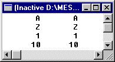
Exemple :
program testab ;
{$APPTYPE CONSOLE}
const IndMin = 1 ;
IndMax = 10 ;
type TMajuscule = 'A'..'Z' ;
TIndex = IndMin..IndMax ;
Tableau = array[Tindex] of TMajuscule ;
procedure afficheTableau(const T : Tableau) ;
var k : TIndex ;
begin
for k := low(T) to high(T) do
writeln('T[',k:2,'] = ',T[k]) ;
writeln
end ;
function genereTableau : Tableau ;
var k : TIndex ;
begin
for k := low(Result) to high(Result) do
Result[k] := char(65 + random(26))
end ;
procedure echange(var x,y : TMajuscule) ;
var tmp : TMajuscule ;
begin
tmp := x ; x := y ; y : tmp
end ;
var Tab : Tableau ;
begin
randomize ; tab := genereTableau ;
afficheTableau(tab) ;
echange(tab[1],tab[10]) ; echange(tab[2], tab[9]) ;
afficheTableau(tab) ;
readLn
end.
Constante typée :
Pascal Objet autorise la définition de constantes de type tableau sauf celles qui contiennent des éléments de type fichier.
type TEtat = (actif,passif,attente) ;
TabEtat : array [TEtat] of String ;
const ETATTOSTR : TabEtat = ('actif','passif','attente') ;
La constante tableau ETATTOSTR peut être utilisée pour convertir les valeurs du type énuméré TEtat en leur représentation sous forme de chaîne de caractères.
type TCarre = array[1..3,1..4] of Integer ;
const UNCARRE : TCarre = ( (1,2,3,4) , (5,6,7,8) , (9,10,11,12) ) ;
procedure afficheCarre(const C:TCarre) ;
var j,k : Byte ;
begin
for j := 1 to 3 do begin
for k := 1 to 4 do
write(C[j,k]:4)
{od} ;
end{do} ;
writeln
end ;
Paramètres tableaux ouverts :
Les paramètres tableaux ouverts permettent de transmettre à un même sous-programme des tableaux de tailles différentes.
Un paramètre formel déclaré avec la syntaxe array of T où T est un identificateur de type est un paramètre tableau ouvert. Le paramètre effectif correspondant doit être une variable de type T (tableau à une dimension) ou un tableau dont les éléments sont de type T.
À l'intérieur du sous-programme, tout se passe comme si le paramètre formel avait été déclaré...
array [0..N-1] of T
où N est le nombre d'éléments du paramètre effectif. Il y a mise en correspondance entre l'intervalle des indices du paramètre effectif et l'intervalle du paramètre formel, soit l'intervalle 0..N-1.
Il existe une restriction : un paramètre tableau ouvert n'est accessible qu'élément par élément. Lorsqu'elle est appliquée à un paramètre tableau ouvert, la fonction low renvoie 0 et la fonction high renvoie N-1.
function sommerTabInt(const T : array of Integer):Integer;
var k : Cardinal ;
begin
Result := 0 ;
for k := low(T) to high(T) do inc(Resylt,T[k])
end ;
Constructeurs de tableaux ouverts (Guide du langage Pascal Objet) :
Lorsqu'un paramètre formel est un paramètre valeur ou un paramètre constant de type tableau ouvert, le paramètre effectif correspondant dans l'appel du sous-programme peut être un constructeur de tableaux ouverts.
Un constructeur de tableau ouvert est constitué d'une ou plusieurs expressions, séparées par des virgules, et encadrées de crochets. Chaque expression doit être compatible en terme d'affectation avec le type des éléments du paramètre tableau ouvert.
L'utilisation d'un constructeur d'un tableau ouvert revient à créer une variable tableau temporaire et à initialiser ses éléments avec les valeurs fournies par la liste des expressions.
program Opentab;
{$APPTYPE CONSOLE}
procedure afficherTabInt(const T : array of Integer) ;
var k : cardinal ;
begin
for k := low(T) to high(T) do write(T[k]:4) ;
writeln
end ;
function sommerTabInt(const T : array of Integer):Integer;
var k : Cardinal ;
begin
Result := 0 ;
for k := low(T) to high(T) do inc(Result,T[k])
end ;
var k : Cardinal ;
begin
afficherTabInt([1,2,3,4,5]) ;
writeln(sommerTabInt([1,2,3,4,5])) ;
afficherTabInt([6,7,8]) ;
writeln(sommerTabInt([6,7,8])) ;
readLn
end.
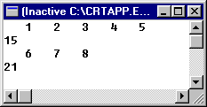
2ème Partie : Algorithmes :
Introduction :
Nous présentons à présent la construction de quelques algorithmes itératifs portant sur les tableaux. Si l'on excepte la recherche dichotomique, nous nous intéresserons ici aux situations où l'on traite les éléments d'un tableau de manière séquentielle. Nous pouvons dès lors interpréter le tableau comme la représentation d'une séquence de longueur fixe et nous ramener à des schémas itératifs déjà étudiés.
Description de l'état dans un parcours séquentiel d'un tableau :
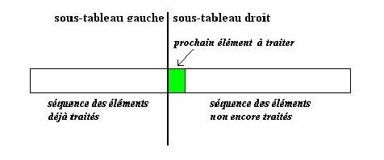
À titre d'exemple, nous présentons la fonction maximum qui renvoie la valeur maximum d'un tableau d'entiers. (La construction de l'algorithme est une simple adaptation de ce qui a été étudié précédemment pour les séquences d'entiers.)
function maximum(const T : array of Integer) : Integer ;
var k : Cardinal ;
begin
Result := T[0] ;
for k := 1 to high(T) do
if T[k] > Result
then Result := T[k]
{fi}
{od}
end ;
Tri :
On définit le tri comme un processus de rangement d'un ensemble de rangement d'un ensemble donné d'objets dans un certain ordre. En triant un ensemble de données, on facilite les recherches ultérieures sur les membres de cet ensemble.
On classe les méthodes de tri en deux catégories :
les tris internes (tris de tableaux)
les tris externes (tris de fichiers).
Nous nous intéresserons ici à quelques méthodes de tris internes.
Tri par extraction ou par sélection :
Principe :
Sélection de l'élément de plus basse clé
Échange de cet élément avec le premier élément
Répétition de ces opérations avec les n-1 éléments restants, puis avec les n-2, ... jusqu'à ce qu'il ne reste qu'un seul élément : le plus grand.
Simulation :
E
E
E
E
E
S
I
I
I
I
I
I
L
L
L
M
M
M
M
M
P
P
P
P
P
L
L
M
P
E
S
S
S
S
S
Algorithme :
procedure tri_extraction(var T : array of Integer) ;
var k,j,indMin : Cardinal ;
begin
for k := low(T) to high(T)-1 do begin
indMin := k ;
for j := k+1 to high(T) do
if T[j] < T[indMin] then indMin := j {fi}
{od} ;
if k <> indMin then echanger(T[indMin],T[k]) {fi}
end{do}
end ;
Tri par insertion :
Principe :
Conceptuellement, la suite des éléments est divisée en deux suites :
une suite déjà triée (suite destination)
t0..tk-1
une suite des éléments à insérer (suite source)
tk..tn-1
À chaque étape, on prend le kième élément et on l'insère à sa place dans la suite destination.
Invariant de cet algorithme :
"Après l'étape k, tous les éléments entre la première et la kième position sont triés." Au départ, la suite destination, c'est-à-dire la suite déjà triée est la suite constituée du premier élément.
Simulation :
S
I
I
I
I
E
S
M
M
L
I
I
S
P
M
L
M
M
S
P
M
P
P
P
S
P
L
L
L
L
S
E
E
E
E
E
Algorithme :
procesure Tri_Insertion (var T : array of Integer) ;
var k,j : Cardinal ; valeurAinserer : Integer ;
begin
for k := low(T)+1 to high(T) do begin
valeurAinserer := t[k] ;
j := k ;
while (j > low(T)) and (valeurAinserer < t[j - 1]) do begin
t[j] := t[j - 1];
dec(j)
end{do};
t[j] := valeurAinserer
end{do}
end;
Tri par permutations ou tri bulles :
Principe :
Imaginons que les éléments à trier soient rangés dans un tableau vertical et que les éléments dont les clés sont les plus petites soient "moins lourds" et remontent comme des bulles vers la surface. On effectue des passages successifs sur le tableau de bas en haut. À chaque étape, si deux éléments sont en ordre inverse, on les permute.
La conséquence de cette opération est qu'à la fin du premier passage, l'élément le plus léger remonte jusqu'à la première position du tableau. Au deuxième passage, l'élément ayant la deuxième plus petite clé remonte à la deuxième position du tableau, et ainsi de suite...
Simulation :
1er passage :
S
S
S
S
S
E
I
I
I
I
E
S
M
M
M
E
I
I
P
P
E
M
M
M
L
E
P
P
P
P
E
L
L
L
L
L
2ème passage :
E
S
S
S
S
I
I
I
I
I
S
M
M
L
L
L
P
L
M
M
M
L
P
P
P
P
3ème passage :
E
I
S
S
S
L
L
L
L
S
M
M
M
M
P
P
P
P
4ème passage :
E
I
L
S
S
M
M
M
S
P
P
P
5ème passage :
E
I
L
M
S
P
P
S
Algorithme :
procudure tri_bulles(var T : array of Integer) ;
var k,j : Cardinal ;
begin
for k := low(T) to high(T)-1 do
for j := high(T) downto k+1 do
if T[j] < T[j-1] then echanger(T[j],t[j-1]) {fi}
{od}
{od}
end ;
Méthodologie :
Le tri sélection et le tri bulles partagent la même hypothèse inductive.
Les éléments de la partie gauche sont supposés définitevement placés (et donc triés).
Cette hypothèse implique que les éléments de la partie droite (non triée) sont des valeurs supérieures.
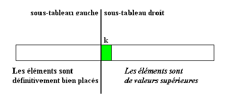
L'itération pourra se terminer lorsque la partie droite se réduira au dernier élément du tableau puisque celui-ci est forcément de valeur supérieure.
Quant à l'initialisation, le plus petit sous-tableau gauche pour lequel l'hypothèse est vérifiée ne peut être (conceptuellement) qu'un sous-tableau vide.
Toutes ces considérations nous donnent l'algorithme suivant :
for k := low(T) to pred(high(T)) do
{ placer en T[k] l'élément minimum du sous-tableau droit T[k..N-1] }
C'est dans la façon de rétablir l'invariant que le tri par sélection et le tri bulles se différentient.
Pour le tri de sélection, on recherche séquentiellement l'indice du minimum dans le sous-tableau droit puis on échange, si nécessaire, l'élément minimum avec la valeur de T[k].
C'est la réalisation du PAS INDUCTIF qui nous permet d'agrandir le sous-tableau gauche correspondant à la séquence des éléments déjà traités et donc définivement bien placés.
indMin := k ;
for j := k+1 to high(T) do
if T[j] < T[indMin] then indMin := j {fi}
{od} ;
if k <> indMin then echanger(T[indMin],T[k]) {fi}
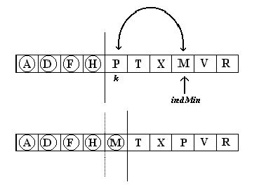
Pour le tri bulles, on ramène la valeur minimale en position k par échanges successifs.
for j := high(T) downto k+1 do
if T[j] < T[j-1] then echanger(T[j],T[j-1]) {fi}
{od}
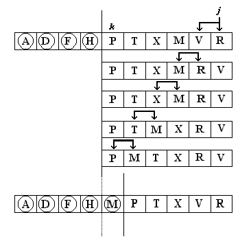
Pour le tri par insertion, l'hypothèse inductive est plus faible puisque nous supposons simplement que les éléments du sous-tableau gauche sont triés. (Cela n'implique pas qu'ils soient définitivement bien placés).
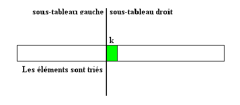
Le pas inductif va correspondre ici à l'insertion de l'élément T[k] dans le sous-tableau T[0..k].
L'itération se terminera lorsque nous aurons insérer le dernier élément du tableau.
Au niveau de l'initialisation, le plus petit sous-tableau gauche pour lequel l'hypothèse est vérifiée correspond au premier élément.
for k := low(T)+1 to high(T) do
{ insérer T[k] dans T[0..k] }
Rétablissement de l'invariant :
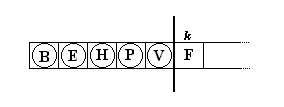
valeurAinserer := t[k] ;
j := k ;
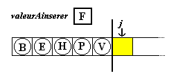
while (j > low(T)) and (valeurAinserer < t[j - 1]) do
begin
t[j] := t[j - 1] ;
dec(j)
end {do} ;
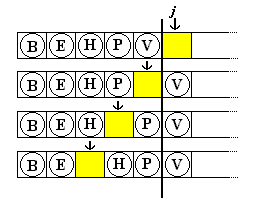
t[j] := valeurAinserer
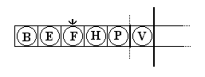
Remarque : les trois algorithmes de tri sont de complexité quadratique (N2). Nous en étudierons de plus performants : tri rapide, tri fusion, tri par tas.
Soient un ensemble d'éléments représenté par un tableau de type TabItem.
Le problème est de trouver un élément du tableau qui soit égal à l'argument de recherche el.
En Pascal, nous traduirons le module de recherche d'un élément dans un tableau par une fonction booléenne qui retournera la valeur true si la recherche aboutit et false sinon.
Cette fonction Pascal correspond en fait à une "procédure fonctionnelle" car elle retourne également l'indice de l'élément recherché. Cela sera réalisé via un paramètre variable dont la valeur sera significative si et seulement si la recherche a abouti.
Pour plus de généralité, le module de recherche reçoit également en entrée les valeurs des indices qui délimitent la portion du tableau dans laquelle la recherche doit être effectuée (et, pour plus de simplicité, les valeurs des indices sont des valeurs entières positives).
Recherche séquentielle ou linéaire :
La méthode la plus simple consiste à explorer séquentiellement le tableau. Si plusieurs composants du tableau correspondent à l'élément recherché, c'est celui d'indice le plus bas (le premier rencontré) qui sera "retourné".
Deux conditions permettent d'arrêter cette recherche linéaire :
on a trouvé l'élément
on a parcouru le tableau sans trouver l'élément
L'algorithme devient :
initialiser IndEl à la valeur de IndDeb
tant que le tableau n'a pas été totalement parcouru et que l'élément n'a pas été trouvé
faire
continuer la recherche
ftant
si le tableau n'a pas été vainement parcouru, la fonction retourne la valeur true et la valeur de IndEl correspond à la valeur de l'indice de l'élément recherché, sinon la fonction retourne la valeur false.
La condition "le tableau n'a pas été totalement parcouru" correspond à (IndEl <= IndFin) et la condition "l'élément n'a pas été trouvé" à (t[IndEl] <> el).
Quant à l'action "continuer recherche", elle se traduit par l'incrémentation de IndEl c'est-à-dire par l'instruction inc(IndEl).
function Recherche_Lineaire
( const T : TabItem ;
IndDeb,IndFin : Cardinal ;
el : item;
var IndEl : Cardinal
) : Boolean;
{recherche la première occurence de l'item el dans le tableau T entre les indices IndDeb et IndFin, si l'item est trouvé, l'indice correspondant est stocké dans IndEl et la fonction retourne vrai, sinon la fonction retourne faux et la valeur de IndEl est non significative}
begin
IndEl := IndDeb ;
while (IndEl <= IndFin) and (t[IndEl] <> el ) do
inc(IndEl)
{od} ;
{ (IndEl > IndFin) or (T[IndEl] = el)
évaluation optimisée
(IndEl > IndFin) or ( (IndEl <= IndFin) and (T[IndEl] = el) ) }
Result := IndEl <= IndFin
end;
Il existe une autre version de la recherche linéaire qui utilise une sentinelle que l'on ajoute en fin de tableau. Il suffit d'insérer dans cette emplacement supplémentaire la valeur recherchée... ce qui simplifie la condition de continuation de la boucle de recherche.
while (T[IndEl <> El) do ...
Si les données sont ordonnées (si le tableau est trié), la recherche sera certainement plus efficace (complexité logarithmique). Pensez à l'annuaire téléphonique !
La recherche dichotomique est une méthode de recherche qui fait l'hypoth!se que le tableau est ordonné.
L'idée de base est de prendre l'élément au milieu (t[IndEl]) de la portion de tableau où l'élément à rechercher (el) peut se trouver.
Si cet élément du milieu est égal à el, la recherche est terminée;
S'il est inférieur à el, on en déduit que tous les éléments dont l'indice est inférieur ou égal à milieu peuvent être éliminés des recherches futures.
Si l'élément du milieu est supérieur à
el, la recherche se poursuit dans la portion du tableau délimitée par les valeurs d'indice (IndDeb) et (IndEl-1).
Ainsi, à chaque itération, les paramètres IndDeb et IndFin seront les indices "gauche" et "droite" de la portion de tableau dans laquelle on peut encore espérer trouver l'élément recherché.
function Recherche_dichotomique
( const T : TabItem ;
IndDeb,IndFin : Cardinal ;
el : item;
var IndEl : Cardinal
) : Boolean;
{recherche une occurence de l'item el dans le tableau T entre les indices IndDeb et IndFin; si l'item el est trouvé, l'indice correspondant est stocké dans IndEl et la fonction retourne vrai, sinon la fonction retourne faux et la valeur de IndEl est non significative}
begin
Result := false
while (IndDeb <= IndFin) and not Result do begin
IndEl := (IndDeb + IndFin) div 2;
if T[IndEl] < el then IndDeb := IndEl + 1
else if T[IndEl] > el then IndFin := IndEl - 1
else {T[indEl] = el } Result := True
end{do}
end;
Problèmes d'adaptation :
Les procédures de tri ont été présentées de manière générale en utilisant les paramètres tableaux ouverts. Il est bien certain que vous aurez à adapter ces procédures à des types particuliers de tableaux. Un cas fréquent est celui des tableaux dont tous les éléments ne sont pas significatifs et dont l'utilisation nécessite la connaissance de la longueur effective.
program d_adaption ;
{$APPTYPE CONSOLE}
const INDMAX = 100 ;
type TabInt = array[1..INDMAX] of Integer ;
procedure Tri_Insertion
(var T : TabInt ; lgEff : Cardinal);
var k,j : Cardinal ; valeurAinserer : Integer ;
begin
for k := 2 to lgEff do begin
valeurAinserer := t[k] ;
j := k ;
while (j > 1) and (valeurAinserer < t[j-1]) do
begin
t[j] := t[j - 1];
dec(j);
end{do};
t[j] := valeurAinserer
end{do}
end;
procedure afficherTabInt
(const T : TabInt ; lgEff : Cardinal) ;
var k : Cardinal ;
begin
for k := 1 to lgEff do write(T[k]:4) ;
writeLn
end ;
procedure initialiserTabInt
(out T:TabInt;out lgEff;Cardinal;
const TT:array of Integer);
var k : Cardinal ;
begin
lgEff := high(TT) + 1 ;
for k := 1 to lgEff do T[k] := TT[k-1] ;
end ;
var A : TabInt ; lg : Cardinal ;
begin
initialiserTabInt(A,lg,[5,1,4,2,8,3]) ;
afficherTabInt(A,lg) ;
writeLn ;
tri_Insertion(A,lg) ;
afficherTabInt(A,lg) ;
readLn
end.
Lazarus :
Introduction :
Free Pascal est un compilateur de code source Pascal, acoompagné de nombreux outils. Même s'il accepte d'anciennes versions de Pascal, il est avant tout conçu pour traiter du Pascal Objet. Lazarus est quant à lui un E.D.I.
Un E.D.I. (cet acronyme est si souvent employé qu'il est en général écrit sous la forme condensée EDI) ou Environnement de Développement Intégré rassemble en une seule application les différents outils nécessaires au développement : un éditeur de code, un débogueur, un compilateur, etc.
Lazarus est un E.D.I. qui se sert de Free Pascal comme compilateur sous-jacent. Allié à Free Pascal, il a toujours cherché à s'approcher le plus possible de son grand frère commercial Delphi. S'il est moins puissant que ce dernier, il a certaines qualités propres qui ne sont pas négligeables :
il est open source, c'est-à-dire que le programmeur a accès au code qui a permis de le générer;
il est lui-même écrit en Pascal;
il intègre les fonctionnalités essentielles d'un langage moderne;
il permet de produire gratuitement toutes sortes d'applications, y compris commerciales;
il fonctionne directement avec bon nombre de machines et de systèmes d'exploitation (dont Windows, Linux et MacOS);
il gère du code exploitable tel que, idépendamment de la plateforme utilisée, selon le principe d'une base de code unique, quel que soit le système d'exploitation visé
il est extensible grâce à un ensemble important de bibliothèques développées parallèlement par une foule de contributeurs;
il bénéficie d'une communauté d'utilisateurs internationale très active (pour les pays francophones, la référence est https://lazarus.developpez.com/ où les auteurs de l'ouvrage se retrouvent fréquemment);
il est traduit en français, comme dans plus d'une vingtaine de langues.
Par ailleurs, au-delà de leurs qualités indéniables, nous pensons que Free Pascal et Lazarus permettent de s'amuser à programmer en conservant ce qui avait fait le succès de leurs ancêtres : un langage très proche de la réflexion algorithmique et des outils faciles à exploiter, y compris par un débutant.
Installer Lazarus :
L'installation de l'E.D.I. Lazarus est en général aussi simple que celle de n'importe quelle autre application. C'est la seule phase où le système d'exploitation joue à plein. Avec Windows et Linux, vous devriez être capable de l'effectuer en un rien de temps. Avec MacOS, les opérations devraient prendre plus de temps à cause du nombre d'étapes à accomplir pour une installation complète.
Quel que soit votre système d'exploitation, il est vivement conseillé d'installer la toute dernière version stable de Lazarus. Pour cela rendez-vous sur le site officiel de Lazarus pour télécharger la version stable correspondant à votre système.
L'installation sous d'autres systèmes d'exploitation est prévue par les concepteurs de Free Pascal et de Lazarus, mais, pour l'instant, nous nous sommes limotés aux trois systèmes les plus fréquemment utilisés sur PC.
Organisation générale de l'interface de Lazarus :
Premier lancement de Lazarus :
L'installation de Lazarus terminée, quel que soit le système d'exploitation utilisé, lancez son exécution. La première fois, une fenêtre de vérification de la configuration peut s'afficher. Sur les versions antérieures à la version 2.2.2 de Lazarus, cet affichage était systématique.
Voici les répertoires utilisés lorsque Lazarus est installé en laissant les options par défaut :
Sections
Windows
Linux
MacOS
Lazarus
C:\lazarus
/usr/bin/lazarus
/usr/local/share/lazarus
Compilateur
C:\lazarus\fpc\3.2.2\bin\x86_64-win64\fpc.exe
/usr/bin/fpc
/usr/local/share/fpc
Codes sources de FPC
C:\lazarus\fpc\3.2.2\source
/usr/lib/fpc/src
/user/local/share/fpcsrc
Make
C:\lazarus\fpc\3.2.2\bin\x86_64-win64\make.exe
/usr/bin/make
/usr/bin/make
Débogueur
C:\lazarus\mingw\x86_64-xin64\bin\gdb.exe
/usr/bin/gdb
(dépend de votre installation)
Lorsque tout est correct, cliquez sur le bouton "Démarrer l'EDI" en bas à droite.
À partir de maintenant, les différence entre les systèmes d'exploitation deviennent négligeables. Vous pourrez donc vous concentrer sur la programmation, les mains dans le cambouis et le cerveau en pleine ébullition !
La fenêtre principale :
En haut de l'écran se présente une large fenêtre nommée "EDI Lazaus v2.2.2 - project1". C'est la fenêtre principale de Lazarus, qui est toujours visible.
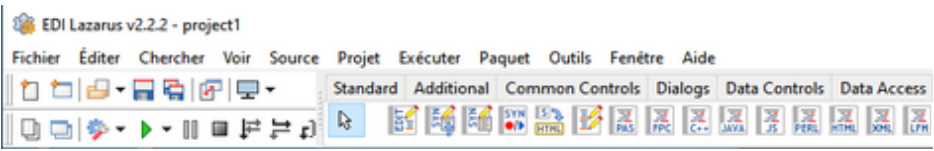
Fenêtre principale de Lazarus
Cette fenêtre présente :
une barre de menus (de "Fichier" à "Aide");
à gauche, des icônes réparties en deux bandes : ce sont des boutons de raccourcis qui évitent de naviguer dans les menus pour les fonctionnalités les plus courantes
à droite, les onglets de la palette des composants (par la suite, la "palette de composants" sera souvent appelée plus simplement la "palette") : chaque bouton illustré par une icone représente un outil appelé composant.
Un composant d'application est un élément prêt à l'emploi, comme une liste déroulante, une grille, un bouton, un calendrier, etc. Lazarus en propose d'origine plus de deux cents, d'où la nécessité de les regrouper par familles dans la palette.
La fiche de travail :
La fiche en cours de conception est la fenêtre vide remplie de petits points que vous voyez sous la fenêtre principale et qui porte le titre de "Form1".
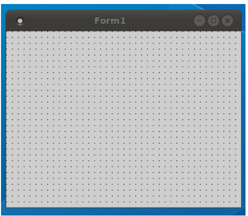
Cette fiche de travail est un outil puissant qui permet de composer une grande partie de l'apparence de l'application finale. Elle recueillera, lors de la phase de conception, les composants nécessaires à l'application en cours de réalisation. À l'exécution, elle ne montrera plus les points qui servent de guide lors de la conception.
La conception est la phase de préparation durant laquelle le programmeur dépose les composants nécessaires sur la fiche de travail à l'emplacement voulu, établit la valeur de leurs propriétés et rédige le code nécessaire au fonctionnement de l'ensemble.
L'exécution est l'étape durant laquelle le code est exécuté après avoir été compilé. Les composants prennent alors l'apparence qu'ils ont dans toute application, à savoir un mélange entre le style fixé par le système d'exploitation et l'aspect que leur impose le code créé.
La fiche de départ est appelée fiche principale c'est toujours à partir d'elle qu'elle démarre une application. D'autres fiches peuvent compléter la fiche principale et être utilisées selon les besoins.
Une fiche est en fait un composant particulier dont le nom de base est TForm. Voilà pourquoi une fiche est parfois aussi appelée une "forme".
L'inspecteur d'objets :
À gauche de votre espace de travail se tient une fenêtre nommée inspecteur d'objets.
L'inspecteur d'objets est un lieu d'observation essentiel, qui permet de définir l'aspect visuel et le comportement des composants.
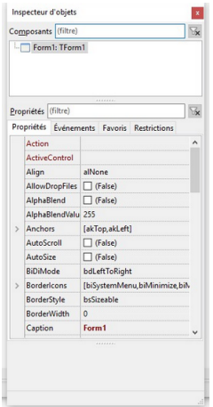
L'inspecteur d'objets
Cette fenêtre est divisée en deux parties.
La partie supérieure ("Composants") décrit sous la forme d'une arborescence la hiérarchie des composants déposés sur la fiche de travail. Celui en cours d'examen y apparaît en surbrillance. Pour le moment n'y figure que la fiche de travail par défaut "Form1".
La partie inférieure est divisée en quatre onglets dont seuls les deux premiers nous intéresseront.
L'onglet "Propriétés" permet d'examiner ey de modifier les propriétés du composant actif.
Une propriété représente un attribut du composant : elle concerne entre autres son aspect, sa position ou ses dimensions. Par exemple, de nombreux composants possèdent une propriété Visible qui indique si le composant sera visible ou non à l'exécution.
Dans l'inspecteur d'objets, les propriétés sont rangées par ordre alphabétique ce qui facilite leur recherche.
L'onglet "Événements" permet d'ajouter des comportements spécifiques liés aux événements. Pour traiter un événement, il faut en effet prévoir le code à exécuter dans le gestionnaire qui lui correspond.
Pour rappel, un événement est une réaction à une action de l'utilisateur (par exemple, lorsqu'il déplace sa souris), à une condition interne de l'application ou à un message du système d'exploitation lui-même.
L'inspecteur d'objets est si utilisé qu'une touche est dédiée à son affichage. Il suffit en effet de presser la touche F11 pour le rendre visible. Vous pouvez aussi utiliser l'option "Inspecteur d'objets" du menu "Voir" pour le même résultat.
L'éditeur de source :
Au centre de l'environnement de travail, vous disposez de l'éditeur de source :
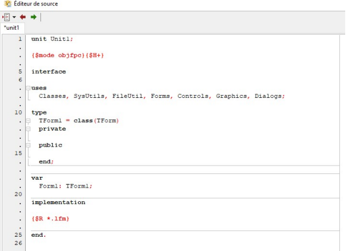
L'éditeur de source
Comme son nom l'indique, cette fenêtre contient l'éditeur, c'est-à-dire l'outil de rédaction du code informatique nécessaire à l'application. Ce code étant à l'origine de l'application, il est appelé code source ou plus simplement source.
L'éditeur de source est une sorte de traitement de texte dont toutes les fonctionnalités tendent à faciliter la saisie et la correction du code. Par exemple, il utilise la coloration syntaxique pour distinguer des catégories d'éléments.
Les fichiers à éditer les plus courants sont les unités.
L'unité constitue la brique de base d'un projet. Elle adopte une structure particulière dont nous étudierons l'organisation plus tard. À chaque unité correspond un fichier unique.
Par défaut, la première unité s'appelle "unit1" et correspond à la fiche "Form1". Une unité contient le code en Pascal nécessaire pour accomplir les tâches qui lui incombent.
Si une fiche est toujours accompagnée d'une unité, la réciproque n'est pas vraie : vous pourrez créer des unités d'utilitaires qui n'ont pas besoin d'être présents sur une fenêtre, mais qu'il vous paraîtra utile de regrouper. Par exemple, une unité contiendra des fonctions mathématiques et une autre des outils pour le dessin.
L'éditeur est capable de gérer plusieurs fichiers indiqués par des ongleys portant leur nom. Vous pourrez par conséquent naviguer facilement d'un fichier à l'autre, tout simplement en cliquant sur l'onglet visé.
La commutation d'une fiche à son unité (et réciproquement) s'opère par une pression sur la touche F12 ou par l'option "Commuter Fiche/Unité" du menu "Voir". Si aucune fiche n'est rattachée à l'unité en cours, cette option est désactivée.
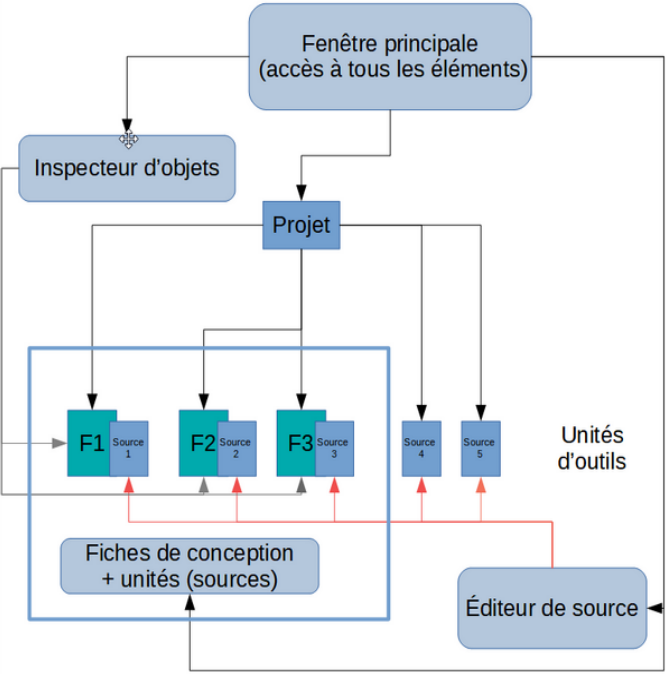
Organisation générale de l'E.D.I.
L'illustration ci-dessus reprend les quatre éléments fondamentaux de l'E.D.I. en montrant les liens qui les unissent au projet informatique qui sera bientôt le vôtre. Les interactions entre les unités n'ont pas été représentées. Ce projet comprend des fiches accompagnées de leur unité (ici, au nombre de trois), ainsi que des unités d'outils sans fiches (ici, deux).
Le projet est l'ensemble des fichiers personnalisés rattachés à la production d'une application particulière. Il existe en effet plusieurs fichiers utilisés. Certains sont propres à l'application en cours de développement et d'autres font partie de Lazarus, de Free Pascal ou des éventuels outils complémentaires que vous aurez installés. Ces derniers fichiers sont permanents est stockés dans des dossiers spécifiques.
La fenêtre principale, la fiche de conception, l'inspecteur d'objets et l'éditeur de source sont les quatre outils indispensables à tout développement avec Lazarus. S'il en existe bien d'aytres, l'E.D.I. perdrait tout intérêt sans ceux-là.
Vous voici donc maître du tableau de bord. Il vous reste à piloter Lazarus et à découvrir la puissance de son moteur; à savoir Free Pascal !
Une application de bienvenue :
Après l'installation et la découverte du tableau de bord, il est enfin temps de faire un tout petit tour de conduire accompagnée.
Précisons d'emblée que les programmes que vous apprendrez à écrire ici seront essentiellement des applications graphiques.
Les applications graphiques sont celles que vous utilisez probablement tous les jours. Elles font appel au système de fenêtrage ainsi qu'à des contrôles (des éléments visuels tels que boutons, boîtes listes, cases à cocher, etc.) que l'utilisateur peut sélectionner par différents biais (clavier, souris, doigt...).
La première d'entre elles se pliera à la tradition en programmation qui veut que l'apprenti(e) développeur(se) commence par réaliser une application de bienvenue. Ce genre d'application minimaliste s'inscrit dans la tradition des petits programmes de test et a été inauguré par Brian Kernighan et Dennis Ritchie dans leur ouvrage "The C Programming Language" (voir https://fr.wikipedia.org/wiki/Hello_world pour des informations complémentaires).
Nous sommes sûrs que vous avez hâte de passer à l'action ! Stop ! Arrêt sur image... Concevoir un loigiciel, ce n'est pas se jeter tête baissée et commencer à coder tout de suite, même si l'envie en est pressante. "Hou, les vilains rabat-joie !", direz-vous. Nous avons conscience de votre frustration, mais vous nous remercierez un jour, soyez-en assuré(e).
Avant toute chose, il vous faut prendre le temps de la réflexion :
Que doit faire mon logiciel ? Ainsi-je bien analysé tous les besoins exprimés par mon "client" ? Lui ai-je bien, avant cela, posé les bonnes questions pour qu'il les exprime ?
Quelles plateformes et technologies suis-je obligé(e) d'utiliser ou puis-je éventuellement choisir ?
Existe-t-il du code tout fait ou des composants utilisables pour me permettre de gagner du temps ?
Comment organiser mon code source et le découper en blocs logiques ?
Comment faciliter une évolution future du logiciel, l'ajout de nouvelles fonctionnalités ?
Une fois que vous aurez une idée précise de la conception de votre logiciel, vous pourrez commencer à écrire du code. Mais le processus de réflexion sera loin d'êtrer terminé : pour chaque traitement, il faudra chercher le meilleur algorithme, peut-être regrouper certaines actions, identifier les endroits où il sera primordial d'optimiser la vitesse de traitement, etc.
Il est vrai qsue toutes cces concidérations vous concerneront beaucoup plus tard, mais il ne sera pas inutile de les garder dans un coin de votre esprit durant la réalisation des petits exercices de cette page.
Faites-nous plaisir en vous efforçant de suivre ce conseil : avant d'écrire en Pascal, formulez le problème en français, traduisez-le en pseudo-code et couchez-le sur papier. Le passage au Pascal ne sera alors plus qu'une formalité.
Le pseudo-code est une façon d'écrire un algorithme dans un langage proche du langage courant, mais légèrement formalisé. Il est couramment employé en algorithme pour résoudre un problème avant sa transposition dans un langage informatique particulier.
Concevoir l'application :
L'application à concevoir est rudimentaire puisqu'il s'agit tout simplement d'afficher "Bonjour, monde !" sur la fenêtre principale. Il se trouve d'ailleurs qu'il existe une sérieuse candisate pour cette tâche, à savoir la propriété Caption de la fiche, qui permet de changer sa barre de titre.
Pour élaborer notre application, nous partirons de la fiche par défaut de Lazarus.
Depuis l'onglet "Propriétés" de l'inspecteur d'objets, cherchez Caption dans la liste des propriétés de la fiche (rappelez-vous que les propriétés d'un composant sont rangées par ordre alphabétique). Modifiez sa valeur en "Bonjour, monde !", comme montré ci-après, et appuyez sur la touche Enter pour valider le changement :
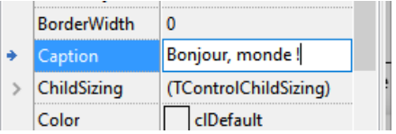
Modification d'une propriété
Créer un projet :
En premier lieu, si nous avions pas de projet ouvert, nous allons créer une nouvelle application.
Pour créer le projet qui lui correspond, choisissez le menu "Projet" de Lazarus puis sélectionnez "Nouveau projet..." :
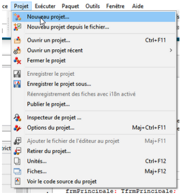
La création d'un projet
Si une boîte de dialogue vous demande si vous désirez enregistrer votre travail, cliquez simplement sur le choix correspondant à votre situation.
La boîte de dialogue correspondant à la création d'un projet va alors apparaître :
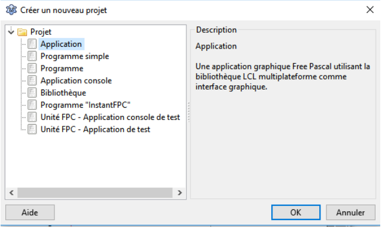
La boîte de création d'un projet
Comme sur l'image ci-dessus, choisissez "Application" puis cliquez sur "OK". Tout ancien travail disparaît et vous vous retrouvez devant l'environnement de travail de vos début.
Dans le point suivant, on va sauver ce squelette d'application dans un dossier spécifique. Ensuite, la création du projet sera terminée.
Sauvegarder le projet en cours :
La sauvegarde du projet en cours est très simple elle aussi. Il s'agit d'une étape essentielle, car rien n'est plus désagréable que de perdre des heures de travail. Pour le moment, ce serait loin d'être le cas, mais les bonnes habitudes sont à prendre dès maintenant !
Tout d'abord, créez un dossier spécifique pour le projet (par exemple, 01 - Bonjour). En effet, un projet étant toujours constitué de plusieurs fichiers, il serait risqué d'enregistrer votre travail directement sur le bureau ou dans des dossiers partagés : chaque projet doit avoir son propre dossier.
Depuis la fenêtre principale de Lazarus, allez dans "Enregistrer le projet" du menu "Projet".
Pour tout sauvegarder, vous pouvez aussi cliquer sur l'icône avec les doubles disquettes dans la barre d'outils de la fenêtre principale de Lazarus ou utiliser la combinaison de touches CTRL + MAJ + S.
Une première boîte de dialogue vous demande d'entrer un nom de fichier pour le projet. L'extension .lpi correspond à Lazarus Project Information, indiquant ainsi que le fichier contient les informations relatives à un projet Lazarus. Ce nom sera également le nom du fichier de l'exécutable de votre application.
Choisissez le dossier que vous avez créé pour votre projet et tapez BonjorMonde comme nom de fichier (son extension sera automatiquement .lpi).
Une seconde boîte de dialogue vous demande de saisir un nom pour l'unité : c'est le fichier qui contiendra le code source de votre fiche et dont l'extension sera .pas (pour PAScal). Tapez ufrmPrincipale comme nom d'unité. Ce nom d'unité devient aussi, sans autre intervention de votre part, le nom ajouté après le mot unit au tout début du source dans l'éditeur de code.
Cette identité entre le nom de l'unité et le nom du fichier sans son extension est obligatoire. Les deux ne peuvent contenir ni espaces ni caractères accentués.
Une mauvaise idée serait de conserver les noms fournis par défaut par Lazarus : le temps gagné serait largement perdu lorsque vous voudriez retrouver ce que vous avez fait, tous les projets et toutes les fiches portant alors des noms similaires, sans indiquer leur fonction. Adoptez donc des noms aussi expliite que possible !
Il est imposible d'ignorer la propriété Name, car elle est commune à tous les composants. C'est elle qui fournit un nom spécifique à un objet.
Ce nom doit être un identificateur correct.
L'identificateur est le nom qui permet d'identifier sans ambiguïté chaque élément d'un projet. C'était par exemple le cas du nom de l'unité ufrmPrincipale.
Un identificateur doit commencer par une lettre non accentuée et uniquement contenir des caractères alphabétiques (A à Z, en majuscules ou minuscules, non accentués), des chiffres (0 à 9), ainsi que le caractère de soulignement (_).
Remarsue : Le Pascal Objet ne fait pas de différence entre les majuscules et les minuscules. Par conséquent, Ab est pour lui identique à aB. D'autre part, il est interdit de choisir comme identificateur un des mots réservés du Pascal Objet.
Par défaut, le nom d'une fiche est de la forme FormX où X est un nombre entier. Ainsi, Form1 est celui de la première fiche créée. Ce nom proposé par Lazarus n'indiquant rien sur sa fonction, il est vivement conseillé de l'adapter à son rôle dans le programme. Des noms comme Principale, Impression et Options seront plus parlants que Form1, Form2 ou Form3, surtout lorsque le temps sera passé par là pour détruire sournoisement quelques neurones et synapses !
Par convention, les identificateurs suivent la technique appelée camel case, c'est-à-dire que chaque mot qui forme l'identificateur commence par une majuscuele suivie de minuscules (par exemple : CalculDuLoyer).
Pour les composants (dont les fiches), afin de bien les distinguer des autres éléments, nous avons choisi la variante lower camel case selon laquelle le premier mot est entièrement en minuscules. Ainsi, une fiche sera nommée avec un préfixe en minuscules frm (pour Form) suivi de son nom. Par exemple, la fiche principale sera nommée frmPrincipale.
L'unité qui se rapporte à la fiche portera le même nom que la fiche, mais précédé d'un u pour unité. Voilà l'explication du nom ufrmPrincipale donné à l'unité de notre première application.
Pour prendre de bonnes habitudes, renommez la fiche de l'application de bienvenue grâce à sa propriété Nameen lui donnant la valeur frmPrincipale. Appuyez sur la touche Enter afin de valider ce changement.
Une fois l'ensemble validé, le projet est sauvegardé.
Compiler et exécuter l'application :
Lancez la compilation et l'exécution de l'application en choisissant l'option "Exécuter" du menu "Exécuter", en cliquant l'icône avec un triangle vert ou encore en pressant sur la touche F9.
Voici une capture de l'application en cours d'exécution :
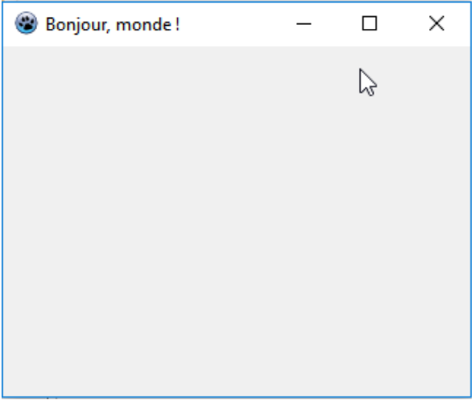
Application de bienvenue
Bravo ! Vous avez écrit votre première application en Pascal Objet !
Lors de la compilation est apparue, en bas de l'écran, une fenêtre de lazarus intitulée "Messages". La fenêtres des messages permet notamment de visualiser les erreurs de syntaxe dans l'éditeur de code. Elle indique également le résultat, les avertissements et les conseils fournis par le compilateur Free Pascal lors de la compilation de vos applications.
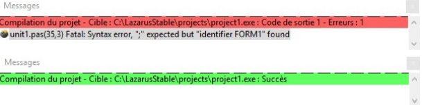
Deux états de la fenêtre des messages
Sur l'illustration ci-dessus, la fenêtre a été capturée lors d'une erreur de compilation, puis après une compilation réussie.
Vous pouvez toujours faire apapraître la fenêtre des messages grâce à l'option "Messages" du menu "Voir".
Peut-être vous sentez-vous frustré(e) de n'avoir rien d'autre à faire... Constatez malgré cette frustration que l'application a rempli le (maigre) rôle qui lui était imparti. Après tout, nous ne lui avions demandé que de saluer le monde !
Cependant, à bien y réfléchir, ce qui s'est produit est plutôt mystérieux. Si vous vous rendez dans le dossier où a été configuré le projet, vous y trouverez entre autres un exécutable : alros que nous n'avons fait que modifier une propriété, d'où provient cet exécutable autonome complet ? Quelles énigmes se cachent derrière les autres fichiers présents ?
De plus, bien que sans prétention, notre application dispose d'emblée de quelques fonctionnalités remarquables. Pour les découvrir, déplacez, redimensionnez, cachez et faites réapparaître sa fenêtre d'exécution. Sans une seule ligne de code de votre part, elle possède déjà les propriétés de n'importe quelle fenêtre ! Comment tout ceka est-il possible ?
Pas plus que votre ordinateur ne démarre par miracle, il n'existe de magie en programmation. En plus, le petit tour promis s'accompagne d'une heureuse confirmation de ce que nous avions annoncé : Lazarus et Free Pascal prennent en charge de nombreux aspects de l'élaboration d'une application, en particulier ce qui ressort de la communication avec le système d'exploitation.
À ce stade de votre apprentissage, retenez qu'un E.D.I. vous évite d'accomplir des tâches aussi rébarbatives et complexes que de synchroniser les parties constitutives d'une application, construire une fenêtre ou s'occuper de son comportement de base.
Arrêter une application :
Pour retourner au poste de pilotage, fermez cette première application. Une fenêtre vous indique que son exécution a été interrompue. Vous pouvez désactiver ce comportement en cliquant sur le bouton intitulé "Ne plus montrer ce message" ou le conserver en cliquant sur "OK". Dans les deux cas, vous voici de nouveau en mesure de travailler.
L'interruption de l'application est également accessible en cliquant sur l'icône en forme de carré rouge, particulièrement utile si elle ne parvenait pas à être fermée d'une autre manière. Vous pouvez aussi utiliser la combinaison de touches CTRL + F2 ou encore passer par l'option "Arrêter" du menu "Exécuter".
Ouvrir un projet :
Savoir sauvegarder un projet n'aurait pas de sens sans pouvoir le rouvrir ! Pour ce faire, allez dans l'option "Ouvrir un projet..." du menu "Projet" et choisissez le fichier qui porte le nom du projet visé.
Pour ouvrir un projet, vous pouvez aussi utiliser la combinaison de touches CTRL + F11.
Par ailleurs, l'option "Ouvrir un projet récent" du menu "Projet" donne accès aux derniers projets utilisés.
Il est encore possible de cliquer sur l'icône du dossier ouvert dans la barre d'outils de la fenêtre principale de Lazarus, mais en faisant attention de bien choisir un fichier avec l'extension .lpi, comme lors de la sauvegarde.
Voici, par exemple, le fichier .lpi correspondant à une application personnelle nommée "MadameMonsieur" :
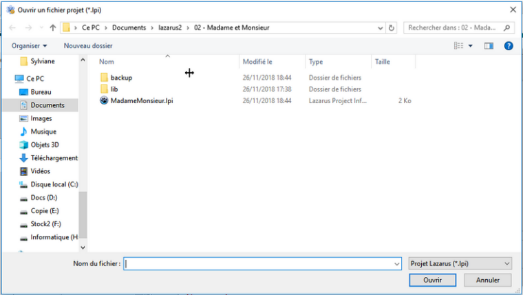
Ouverture d'un projet
Il se peut que Lazarus vous propose de sauvegarder les changements intervenus dans l'éditeur depuis votre dernière sauvegarde. Répondez "Non" à cette question puisqu'il n'y a pas de travail important en cours.
Un fichier modifié lors de la session en cours est marqué par un astérisque avant son nom dans l'onglet correspondant de l'éditeur de source. D'autre part, l'icône de la double disquette correspondant à la sauvegardée est colorée en cas de modification et grise dans le cas contraire.
Notez toutefois qu'il est toujours de votre responsabilité de décider si les changements sont à conserver ou non. En général, la réponse est "Oui" à la question posée par Lazarus, à moins que vous décidiez de perdre le travail effectué récemment...
Après ouverture, le projet choisi est affiché dans l'état où il était lors de sa dernière utilisation.
Vous connaissez désormais quelques-unes des étapes pour créer vos propres applications. Soyez bienvenu(e) dans le monde de la programmation !
Gestion d'une base de données MySQL avec les composants natifs de Lazarus :
Dans cette partie, vous apprendrez à gérer une base de données MySQL en utilisant les composants natifs de Lazarus (SQLdb).
Trois exemples d'applications, de complexité croissante, vous sont proposés. Ils vont de l'utilisation exclusive de contrôles spécialisés en base de données à celle de contrôles classiques. Quelques petits exercices (facultatifs) vous mettront au défi.
Introduction :
MySQL est un système de gestion de base de données performant très largement utilisé. Il est actuellement la propriété de la société Oracle; sa déclinaison communautraire MariaDB, sous licence GPL, est de plus en plus répandue dans le monde du libre.
Je vais, sans prétention, vous guider à la réalisation de vos premières applications utilisant une base de données MySQL, sous Lazarus.
Comme illustration, nous allons simuler ici la gestion d'une petite société de location de voitures.
Si vous voulez installer rapidement un petit serveur vous permettant de réaliser les applications ci-après, vous pouvez opter pour une solution tout-en-un, par exemple :
Avant toute chose, créons la base de données qui servira dans les exemples suivants.
J'ai pris le parti d'utiliser l'interface de gestion PHPMyAdmin, qui permet de visualier très facilement le résultat des actions que nous entreprendrons. Pour vous simplifier les choses, vous pouvez coller directement les commandes SQL dans l'onglet SQL de PHPMyAdmin; ce n'est toutefois pas une obligation et vous pouvez aussi exécuter à la main les différentes par le biais de l'interface.
Création de la base :
Commençons donc par créer notre base de données. Dans l'onglet SQL, recopiez ou collez la commande suivante :
CREATE DATABASE location CHARACTER SET 'utf8';
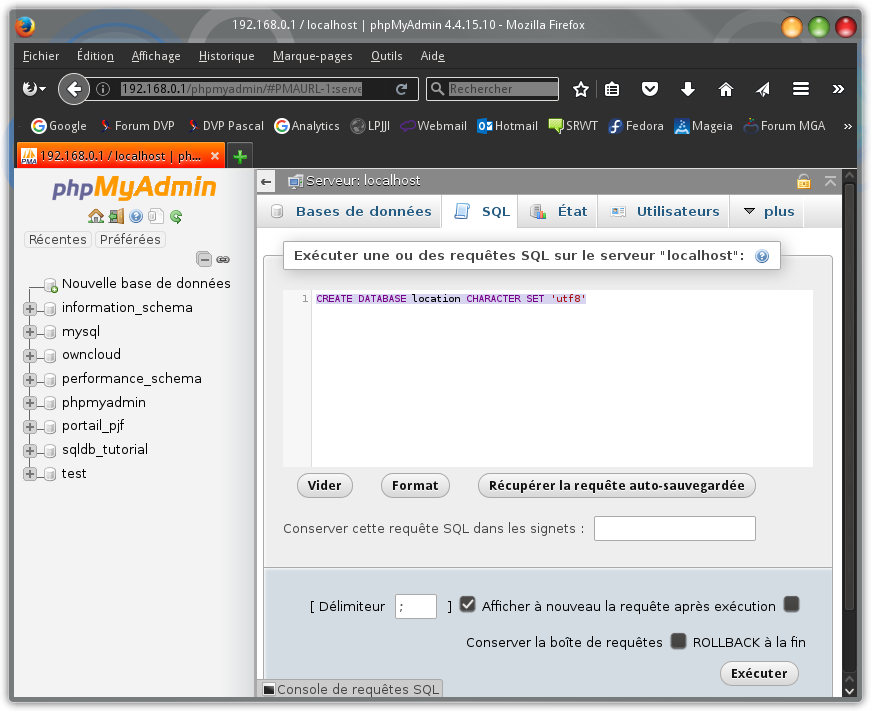
Cliquez sur Exécuter et vérifiez que la nouvelle base de données est bien créée :
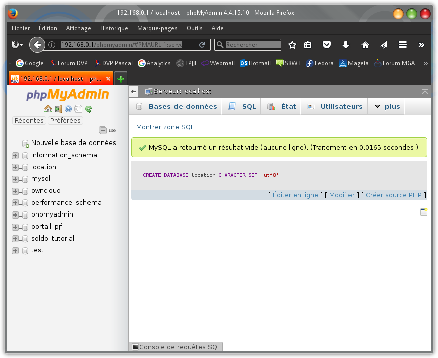
Le message de réussiye sur fond vert et l'ajout de l'entrée location dans la colonne de gauche attesetent la réussite de l'opération.
Création d'un utilisateur :
Il n'est jamais conseillé de travailler, dans quel système que ce soit, sauf lorsque c'est indispensable, avec des privilèges d'administrateur. C'est le cas avec MySQL et la première chose que nous allons faire est de créer un utilisateur qui aura spécifiquement accès à notre base de données, et à aucune autre.
CREATE USER 'mysqmdvp'@'%' IDENTITIFIED BY 'passmysqldvp'; GRANT ALL PRIVILEGES ON location.* TO 'mysqldvp'@'%' IDENTITIFIED BY 'passmysqldvp' REQUIRE NONE WITH GRANT OPTION;
Par cette commande, l'utilisateur mysqldvp a été créé et il a accès à la base de données location et à ses tables moyennant le mot de passe passmysqldvp. Vous pouvez bien sûr définir un autre nom d'utilisateur et un autre mot de passe.
Si votre serveur MySQL tourne sur votre machine, vous pouvez remplacer 'mysqldvp'@'%' par 'mysqldvp'@'localhost'.
Création des tables :
Dans la liste des bases de données, à gauche, cliquez sur location ou collez la commande suivante dans l'onglet SQL :
USE location;
Dans l'onglet SQL de location, nous allons créer des tables dans la base de données.
Nous avons besoin de trois tables :
la liste des voitures;
le répertoire des clients;
la liste des locations.
La liste des voitires contiendra les colonnes suivantes :
Nom de colonnes
Type
Commentaires
Plaque
VARCHAR(12)
Plaque d'immatriculation
Marque
VARCHAR(20)
Marque du véhicule
Modele
VARCHAR(20)
Modèle
Cylindree
SMALLINT
La cylindrée en cm³
Transmission
CHAR(1)
M pour boîte manuelle, A pour automatique
Prix
FLOAT
Coût d'une journée de location
Le répertoir client contiendra les colonnes suivantes :
Nom de colonne
Type
Commentaires
IdClient
SMALLINT
Numéro client unique
Nom
VARCHAR(40)
Le nom du client
Prenom
VARCHAR(40)
Son prénom
CodePostal
VARCHAR(10)
Code postal
Localite
VARCHAR(50)
Localité de résidence
Rue
VARCHAR(80)
Adresse
Numero
VARCHAR(10)
Numéro de maison
Telephone
VARCHAR(40)
Numéro de téléphone
Email
VARCHAR(50)
Adresse mail
Et voici les colonnes de la liste des locations :
Nom de colonne
Type
Commentaires
IdLocation
SMALLINT
Numéro d'ordre unique
IdClient
SMALLINT
Numéro du client
Plaque
VARCHAR(12)
Plaque de la voiture louée
DateDebut
DATETIME
Date et heure de début
DateFin
DATETIME
Date et heure de fin prévue
DateRentree
DATETIME
Date de rentrée effective du véhicule (pour surtaxe)
Assurance
BOOL
Indique si une assurance complémentaire a été prise
La plaque d'immatriculation et le numéro client étant uniques, ils sont désignés comme clés primaires dans tables respectives et sont utilisés comme clés étrangères dans la table Locations.
Collez la commande suivante pour créer la table Voitures :
CREATE TABLE Voitures (
Plaque VARCHAR(12) NOT NULL,
Marque VARCHAR(20) NOT NULL,
Modele VARCHAR(20) NOT NULL,
Cylindree SMALLINT NOT NULL,
Transmission CHAR(1) NOT NULL,
Prix FLOAT NOT NULL,
PRIMARY KEY (Plaque)
);
Puis celle-ci pour créer le répertoire des clients (table Clients) :
CREATE TABLE Clients (
IdClient SMALLINT UNSIGNED NOT NULL AUTO_INCREMENT,
Nom VARCHAR(40) NOT NULL,
Prenom VARCHAR(40) NOT NULL,
CodePostal VARCHAR(10),
Localite VARCHAR(50),
Rue VARCHAR(80),
Numero VARCHAR(10),
Telephone VARCHAR(40) NOT NULL,
Email VARCHAR(50),
PRIMARY KEY (idClient)
);
Et enfin pour la table Locations :
CREATE TABLE Locations (
IdLocation SMALLINT UNSIGNED NOT NULL AUTO_INCREMENT,
IdClient SMALLINT UNSIGNED NOT NULL,
Plaque VARCHAR(12) NOT NULL,
DateDebut DATETIME NOT NULL,
DateFin DATETIME NOT NULL,
DateRentree DATETIME,
Assurance BOOL NOT NULL,
PRIMARY KEY (IdLocation)
);
Établissons une relation entre la table Locations et les deux autres tables, par le biais des clés étrangères IdClient (table Clients) et Plaque (table Voitures) :
Dans PHPMyAdmin, allez dans le sous-menu Concepteur du menu Plus de notre base de données location, pour vérifier que les relations sont correctes entre les trois tables :
Création des données :
Notre base de données est prête à être alimentée. Pour gagner du temps, nous allons y créer par script quelques voitures et quelques clients.
D'abord une dizaine de voitures :
INSERT INTO Voitures VALUES('AB-612-BV', 'BMW', '135i Coupé', 3000, 'A', '30.00');
INSERT INTO Voitures VALUES('AC-811-CK', 'Citroën', 'C3', 1600, 'M', '20.00');
INSERT INTO Voitures VALUES('BN-101-AR', 'Citroën', 'C3', 1600, 'M', '20.00');
INSERT INTO Voitures VALUES('AB-555-RB', 'Citroën', 'C3', 1600, 'M', '20.00');
INSERT INTO Voitures VALUES('BU-435-GH', 'Citroën', 'C4 Coupe 2.0VTS', 2000, 'A', '27.50');
INSERT INTO Voitures VALUES ('AM-398-ER', 'Daihatsu', 'Sirion', 1300, 'M', '17.25');
INSERT INTO Voitures VALUES ('CB-135-RK', 'Fiat', '500 1.2 8V Lounge SS', 1200, 'M', '17.00');
INSERT INTO Voitures VALUES ('AM-400-SU', 'Ford', 'Focus ST', 2000, 'M', '23.00');
INSERT INTO Voitures VALUES ('AM-436-FD', 'Ford', 'Taurus SHO', 3500, 'A', '36.25');
INSERT INTO Voitures VALUES ('CU-004-MP', 'Volkswagen', 'New Beetle', 2000, 'M', '27.50');
Puis quelques clients :
INSERT INTO Clients VALUES (1, 'Van Steenbrugge', 'Stefaan', 'B2020', 'Antwerpen (Belgique)', 'De Bosschaertstraat', '30', '3222012345', '');
INSERT INTO Clients VALUES (2, 'Leclercq', 'Jean-Jacques', '68200', 'Mulhouse', 'Avenue Aristide Briand', '37', '33389337878', 'jj.leclercq@monfai.fr');
INSERT INTO Clients VALUES (3, 'Lamoureux', 'Gabriel', '69008', 'Lyon', 'Rue Professeur Beauvisage', '163', '33472985404', 'gaby.lamoureux@monfai.fr');
INSERT INTO Clients VALUES (4, 'Loumrhari', 'Mohamed', '55270', 'Varennes-en-Argonne', 'Rue Louis XVI', '12', '33329807101', '');
INSERT INTO Clients VALUES (5, 'Mispelter', 'Yves', 'CH1002', 'Lausanne (Suisse)', 'Place de la Palud', '2', '41213152555', 'yves.mispelter@myprovider.ch');
INSERT INTO Clients VALUES (6, 'Zidane', 'Yasmina', '13014', 'Marseille', 'Rue Paul Coxe', '72', '33491095656', 'yasmina.z@monfai.fr');
INSERT INTO Clients VALUES (7, 'Patulacci', 'Stéphane', '20304', 'Ajaccio', 'Avenue Antoine Serafini', '', '33495515253', '');
INSERT INTO Clients VALUES (8, 'Matombo Nguza Aniomba', 'Honorine', '13008', 'Marseille', 'Rue du Commandant Rolland', '125', '33491553778', '');
INSERT INTO Clients VALUES (9, 'Filucco', 'Martial', '59000', 'Lille', '', '', '33320495000', '');
Nous avons enfin un peu de matière pour commencer les divers exemples suivants.
Exemple 1 : affichage simple du contenu d'une table :
Dans Lazarus, créez un projet de type Application. Dans l'inspecteur d'objets, renommez la fiche principale (Form1 par défaut) en MainForm.
TMySQLConnection :
Dans la palette de composants, cherchez l'onglet SQLdb, qui contient une série de composants permettant de se connecter à différents systèmes de bases de données. Parmi ceux-ci figurent une série de connecteurs pour différentes versions de MySQL; ils sont représentés par des petits dauphins.
Un connecteur va se charger d'assurer la connexion avec le système de bases de données. C'est à lui qu'il faudra fournir le nom de l'hôte qui héberge la base de données, le nom de la base de données ainsi que le nom d'utilisateur et le mot de passe permettant d'y accéder.
Cliquez sur le connecteur qui correspond à votre version de MySQL et déposez un composant sur votre fiche vierge. Ce composant ne sera pas visible à l'exécution du programme, donc vous pouvez le placer n'importe où sur la fiche. Comme votre version de MySQL n'est peut-être pas la même que celle que j'utilise au moment de la rédaction de ces lignes, renommez le composant en MySQLConnection en changeant sa propriété Name; ainsi, toute référence de version aura disparu.
Pour ce projet, nous allons fortement simplifier les choses et définir les noms d'hôte, de base de données, d'utilisateur et le mot de passe directement dans les propriétés du connecteur.
Dans une application sérieuse, ces propriétés seront définies au cours du programme.
Définissez les propriétés suivantes dans l'inspecteur d'objets :
Propriété
Valeur
HostName
192.168.0.1 (dans ma configuration) ou localhost (si votre serveur MySQL tourne sur votre machine)
DatabaseName
location
UserName
mysqldvp
Password
passmysqldvp
Quel connecteur pour MariaDB ?
Comme cela a été évoqué dans l'introduction, MariaDB est une déclinaison libre de MySQL de plus en plus présente sur le marché des SGBD.
Dans l'onglet SQLdb de la palette de composants, vous ne trouvez que des références aux versions de MySQL, alors quel connecteur choisir lorsque le serveur vous retourne la version 10.1 de MariaDB ? Jusqu'à la 5.5, les numéros de version coïncidaient, ensuite ils divergent :
MySQL
MariaDB
5.1 à 5.5
5.1 à 5.5
5.6
10.0
5.7
10.1
TSQLTransaction :
À présent, nous avons besoin d'un composant qui va s'occuper de la transaction avec la base de données.
Dans l'onglet SQLdb, cliquez sur l'icône TSQLTransaction et déposez un composant à côté de votre connecteur.
Cliquez sur le premier composant MySQLConnection; dans l'inspecteur d'objets, cherchez la propriété Transaction et choisissez le composant que vous venez d'ajouter dans la liste déroulante des transactions (SQLTransaction1).
Si vous inspectez les propriétés du composant SQLTransaction, vous pouvez voir que lazarus a automatiquement établi un lien avec le connecteur et avec la base de données.
TSQLQuery :
Maintenant, il faut ajouter sur la fiche, à côté des deux premiers composants, un autre composant invisible, TSQLQuery (toujours dans l'onglet SQLdb). Il va relayer les commandes SQL vers la base de données et héberger les données entrantes et sortantes dans un dataset.
Initialisez la propriété Database de ce nouveau composant en choisissant MySQLConnection dans la liste déroulante.
Nous disposons à présents de tous les outils nécessaires pour communiquer avec notre base de données.
TDataSource :
Nous allons afficher le contenu d'une table, par exemple, celle des voitures. Pour ce faire, nous utiliserons un composant TDBGrid, qui ets un tableau spécialisé dans l'affichage de données issues d'une base de données.
Ce tableau ne peut fonctionner seul; il doit êtree couplé à un TDataSource, qui va servir d'intermédiaire entre le dataset et les contrôles tels que le DBGrid.
Cherchez l'onglet DataAccess, cliquez sur le TDataSource (normalement, le tout premier de la série) et déposez-en un exemplaire à côté des trois composants déjà installés (comme eux, il restera invisible).
Dans l'inspecteur d'objets, sa propriétés DataSet doit être initialisée à SQLQuery1 dans la liste déroulande.
TDBGrid :
reste le tableau qui, lui, sera bien visible lors de l'exécution de l'application. Dans l'onglet Data Controls, le TDBGrid est l'un des derniers. Déposez-le sur votre fiche et augmentez ses dimensions :
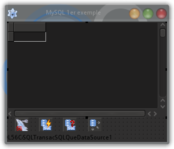
La propriété DataSource du DBGrid doit être initialisée à DataSource1, que nous avons déposé sur la fiche juste avant.
Commande d'affichage d'une table :
Bien, bien. Ce que nous voulons faire, c'est afficher dans notre tableau le contenu de la table Voitures. La commande SQL que nous devrons exécuter sera :
SELECT * FROM Voitures;
Cette commande sera affectée à la propriété SQL.Text du composant SQLQuery1.
Pour commander l'affichage de la table, ajoutez un simple bouton (de l'onglet Standard). Dans l'inspecteur d'objets, initialisez sa propriété Caption à "Afficher". Dans l'onglet Événements du composant, cliquez sur les trois points en regard de l'événement OnClick - cela créera une méthode évenementielle dans le code source.
Information : Un double-clic sur la case vide à côté de l'événement a le même résultat.
Voici le contenu de cette méthode :
procedure TMainForm.ButtonClick(Sender: TObject);
begin
SQLQuery1.Close;
SQLQuery1.SQL.Text := 'SELECT * FROM Voitures;';
SQLQuery1.Open;
end;
Fermeture propre de l'application :
Nous devons également prévoir la déconnexion propre de notre application à la base de données. Sélectionnez la fiche et, dans l'onglet Événements de l'inspecteur d'objets, cliquez sur les trois points en regard d'OnClose.
Voici le code de la méthode événementielle créée :
procedure TMainForm.FormClose(Sender: Tobject; var CloseAction: TCloseAction);
begin
SQLQuery1.Close;
SQLTransaction1.Active := False;
SQLTransaction1.Connected := False;
end;
Il est temps de sauvegarder le projet. Nommez-le (par exemple) mysql01, et enregistrez-le dans un répertoire du même nom.
Compilation et exécution :
Vérifions à présent que nous avons bien travaillé. Compilez et exécutez votre programme; si vous n'avez pas commis d'erreur, le fait de presser sur le bouton Afficher remplit le DBGrid avec la liste des voitures :
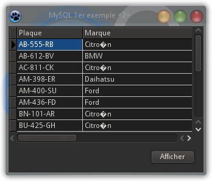
Nous notons au passage que la gestion des caractères accentués (notre base de données a été créée avec le jeu de caractères UTF8) n'est pas correcte. Pour y remédier, dans l'inspecteur d'objets, il faut initialiser la propriété CharSet du connecteur MySQLConnection à UTF8.
Information : On s'attendrait à priori à trouver une liste déroulante avec tous les jeux de caractères disponibkes, mais il n'en est rien : la valeur "UTF8" doit être introduite au clavier.
Code complet de l'exemple 1 :
unit Main;
{$mode objfpc}{$H+}
interface
uses
Classes, SysUtils, mysql56conn, sqldb, db, FileUtil, Forms, Controls,
Graphics, Dialogs, DBGrids, StdCtrls;
type
{ TMainForm }
TMainForm = class(TForm)
Button1: TButton;
DataSource1: TDataSource;
DBGrid1: TDBGrid;
MySQLConnection: TMySQL56Connection;
SQLQuery1: TSQLQuery;
SQLTransaction1: TSQLTransaction;
procedure Button1Click(Sender: TObject);
procedure FormClose(Sender: TObject; var CloseAction: TCloseAction);
private
{ private declarations }
public
{ public declarations }
end;
var
MainForm: TMainForm;
implementation
{$R *.lfm}
{ TMainForm }
procedure TMainForm.Button1Click(Sender: TObject);
(* Exécution de la requête d'affichage de la table *)
begin
SQLQuery1.Close;
SQLQuery1.SQL.Text:= 'SELECT * FROM Voitures;';
SQLQuery1.Open;
end;
procedure TMainForm.FormClose(Sender: TObject; var CloseAction: TCloseAction);
(* Déconnexion propre de la base de données *)
begin
SQLQuery1.Close;
SQLTransaction1.Active:= False;
MySQLConnection.Connected:= False;
end;
end.
Exemple 2 : édition d'une table au choix :
Notre premier exemple nous a permis de nous familiariser avec les composants nécessaires à la communication avec une base de données MySQL.
Nous allons créer un second projet un peu plus élaboré, qui va nous permettre de sélectionner une des tables, de l'afficher dans un DBGrid et d'en modifier le contenu.
Créez un nouveau projet de type Application.
Dans l'inspecteur d'objets, renommez la fiche principale (Form1 par défaut) en MainForm. Agrandissez la taille de la fiche. Déposez-y, tout comme dans le premir exemple, les composants invisibles qui permettent de communiquer avec la base de données :
un connecteur de la bonne version, que vous renommez directement en MySQLConnection;
un TSQLTransaction;
un TSQLQuery.
Cette fois, les propriétés HostName, DatabaseName et Password de MySQLConnection restent vierges de toute valeur initiale; la propriété Transaction doit être initialisée à SQLTransaction1 et la propriété CharSet doit être initialisée à UTF8. La propriété Database de SQLQuery1 doit être initialisée à MySQLConnection.
Mot de passe de connexion :
Nous allons faire en sorte que l'utilisateur du programme tape, au début du programme, le mot de passe permettant de se connecter à la base de données. Nous allons faire cela au momement où la fenêtre de l'application reçoit le focus.
Cliquez, dans l'inspecteur d'objets, sur la fiche elle-même, et allez dans l'onglet Événements. Cliquez sur les trois points en regard de l'événement OnActivate, ce qui aura pour effet de créer dans le code source la méthode événementielle FormActivate.
Voici le contenu de cette méthode :
procedure TMainForm.FormActivate(Sender: TObject);
var
LPassword : String;
begin
MySQLConnection.HostName := '192.168.0.1';
MySQLConnection.DatabaseName := 'location';
MySQLConnection.UserName := 'mysqldvp';
if InputQuery('Connexion à la base de données', 'Tapez votre mot de passe :', True, LPassword)
then
begin
MySQLConnection.Password := LPassword;
try
MySQLConnection.Connected := True;
SQLTransaction1.Active := True;
except
on e: EDatabaseError do
begin
MessageDlg('Erreur de connexion à la base de données.'#10#13'Le mot de passe est peut-être incorrect ?'#10#10#13'Fin de programme.', mtError, [mbOk], 0);
Close;
end;
end;
end
else (* Pas de mot de passe : fin de programme *)
Close;
end;
Ajoutez également l'unité db à la clause uses (pour EDatabaseError).
Détaillons tout cela. Pour commencer, nous initialisons les propriétés HostName, DatabaseName et UserName di connecteur. Le mot de passe est demandé au moyen d'un dialogue InputQuery. Si l'utilisateur annule l'entrée du mot de passe, le programme se ferme sans autre forme de procès; s'il entre un mot de passe erroné, l'exception déclenchée par le connecteur est interceptée dans le bloc try...except, un message d'erreur est affiché et l'application est fermée.
Avant de réaliser nos premiers tests à ce stade, n'oublions pas de faire en sorte que la connexion à la base de données soit proprement coupée à la fermeture du programme. Comme dans le premier exemple, créez une méthode événementielle pour l'événement OnClose :
procedure TMainForm.FormClose(Sender: TObject; var CloseAction: TCloseAction);
begin
SQLQuery1.Close;
if SQLTransaction1.Active
then
SQLTransaction1.Active := False;
if MySQLConnection.Connected
then
MySQLConnection.Connected := False;
end;
Enregistrez le projet, en l'appelant mysql02 et en l'enregistrant dans un nouveau répertoire du même nom.
Compilez le programme et exécutez-le depuis l'EDI Lazarus. vous constatez qu'une fenêtre vierge apapraît et qu'immédiatement le dialogue InputQuery vous demande le mot de passe :
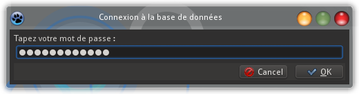
Si vous tapez le mot de passe correct ("passmysqldvp", rappelez-vous), la fenêtre de l'application (qui ne contient rien de visible pour l'instant) reste ouverte; si vous cliquez sur Cancel, l'application se ferme et si vous tapez exprès un mot de passe erroné, un message d'erreur apparaît :
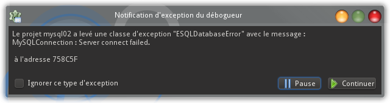
Tien, mais ce n'est pas le message d'erreur que nous avons prévu dans la méthode FormActivate ? En effet, mais si vous cliquez sur le bouton Continuer, celui que nous avions prévu apparaît bien :
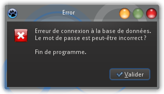
Pourquoi ? Tout simplement parce que le premier message d'erreur est renvoyé par le débogueur, qui lève le premier l'exception.
Plutôt que d'exécuter le programme depuis l'EDI, utilisez l'exécutable qui a été créé dans le répertoire mysql02.
Exécutez-le et faites l'expérience d'entrer un mot de passe erroné : c'est bien le message d'erreur que nous avons prévu qui s'affiche, puisque l'exécution du programme n'est plus encadrée par le débogueur.
Affichage de l'erreur renvoyée par le système :
Notre message d'erreur n'est pas très précis, car il apparaît identiquement si le mot de passe est erroné et si, par exemple, le serveur est inaccessible ou la base de données inexistante.
Pour pouvoir identifier plus précisément l'erreur qui s'est produite, il faut lever une exception descendante de EDatabaseError : ESQLDatabaseError. Dans les propriétés de ce type d'exception se trouvent un code etdes messages propres à MySQL.
Voici une version plus élaborée de notre méthode de login :
procedure TMainForm.FormActivate(Sender: TObject);
(* Lecture du mot de passe et connexion à la base de données *)
var
LPassword : String;
begin
(* Données de la connexion *)
MySQLConnection.HostName := '192.168.0.1';
MySQLConnection.DatabaseName := 'location';
MySQLConnection.UserName := 'mysqldvp';
(* Lecture du mot de passe *)
if InputQuery('Connexion à la base de données', 'Tapez votre mot de passe :', True, LPassword)
then
begin
(* Connexion à la base de données *)
MySQLConnection.Password := LPassword;
try
MySQLConnection.Connected := True;
SQLTransaction1.Active := True;
except
on e: ESQLDatabaseError do
begin (* Erreur renvoyée par MySQL : fin de programme *)
MessageDlg('Erreur de connexion à la base de données :'#10#10#13 + IntToStr(e.ErrorCode) + ' : ' + e.Message + #10#10#13'Fin de programme.', mtError, [mbOk], 0);
Close;
end;
on e: EDatabaseError do
begin (* Erreur de connexion : fin de programme *)
MessageDlg('Erreur de connexion à la base de données.'#10#10#13'Fin de programme.', mtError, [mbOk], 0);
Close;
end;
end;
end
else (* Pas de mot de passe : fin de programme *)
Close;
end;
Par exemple, si la base de données n'existe pas :
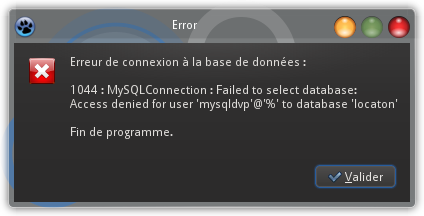
La gestion de l'exception EDatabaseError suit celle de ESQLDatabaseError. Le principe général est de gérer en cascade les exceptions de la plus spécialisée à la moins spécialisée : ainsi, si la connexion au serveur MySQL est possible, les erreurs MySQL seront traitées en priorité (ESQLDatabaseError).
À présent, nous allons faire en sorte que l'utilisateur puisse choisir une des tables contenues dans la base de données pour en afficher le contenu.
Sélectionnez un composant TListBox dans l'onglet Standard et déposez-le en bas et à gauche sur la fiche du projet. Dans l'inspecteur d'objets, renommez sa propriété Name en lbTables.
Dans l'éditeur de source, allez dans la déclaration du type TMainForm (que Lazarus a automatiquement déclaré ainsi lorsque vous avez appelé MainForm votre fiche principale). Dans la section private, ajoutez cette procédure :
procedure ShowTables;
Pressez la combinaison de touches Shift + CTRL + C pour que Lazarus crée la procédure dans la section implementation et complétez cette dernière :
procedure TMainForm.ShowTables;
begin
SQLQuery1.Close;
SQLQuery1.SQL.Text := 'SHOW TABLES;';
SQLQuery1.Open;
while not SQLQuery1.EOF do
begin
lbTables.Items.Add(SQLQuery1.Fields[0].AsString);
SQLQuery1.Next;
end;
(* Sélection du premier élément *)
if SQLQuery1.RecordCount > 0
then
lbTables.ItemIndex := 0;
end;
Tout d'abord, la commande SQL qui permet de retourner la liste des tables d'une base de données est SHOW TABLES;.
Cette commande est passée au composant SQLQuery1 dans sa propriété SQL.Text (comme nous avions fait dans notre premier exemple) et est exécutée dans la méthode Open. Ensuite, nous bouclons pour que chaque nom de table retourné par la requête soit ajouté dans la listbox lbTables.
Placez l'appel de cette méthode privée ShowTables dans le bloc try de la méthode événementielle FormActivate de la fiche principale :
procedure TMainForm.FormActivate(Sender: TObject);
var
LPassword : String;
begin
{ . . . }
if InputQuery('Connexion à la base de données', 'Tapez votre mot de passe :', True, LPassword)
then
begin
MySQLConnection.Password := LPassword;
try
MySQLConnection.Connected := True;
SQLTransaction1.Active := True;
ShowTables; // ***** AJOUT *****
except
{ . . . }
end;
end
else (* Pas de mot de passe : fin de programme *)
Close;
end;
Vous pouvez faire un test d'exécution à ce stade, pour vérifier que la liste des tables est bien chargée dans la listbox :
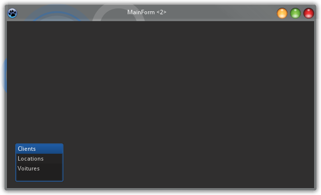
Affichage du contenu de la table sélectionnée :
Comme dans le premier exemple, nous allons afficher le contenu d'une table dans un composant TDBGrid, de l'onglet Data Controls, que vous déposez en haut et à gauche de votre fiche principale, et dont vous agrandissez la largeur jusqu'à la limite droite de la fiche et la hauteur jusquà un peu au-dessus de la listbox.
L'utilisation du DBGrid nous conduit à ajouter également un composant TDataSource, de l'onglet Data Access :
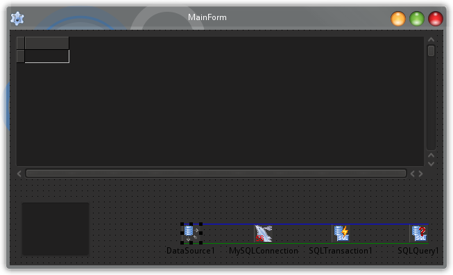
Toujours comme dans l'exemple 1, la propriété DataSet du TDataSource doit être affectée à SQLQuery1, et la propriété DataSource du TDBGrid à DataSource1.
Dans l'inspecteur d'objets, sélectionnez la listbox lbTables, allez dans l'onglet Événements, trouvez l'élément OnSelectionChange et cliquez sur les trois points en regard de celui-ci pour créer une méthode événementielle qui s'exécutera à chaque changement de choix de table :
procedure TMainForm.lbTablesSelectionChange(Sender: TObject; User: boolean);
begin
SQLQuery1.Close;
SQLQuery1.SQL.Text := 'SELECT * FROM ' + lbTables.GetSelectedText + ';';
SQLQuery1.Open;
end;
Simplement, la requête SELECT * FROM est complétée par le nom de la table sélectionnée dans la listbox.
Testez l'application en l'état :
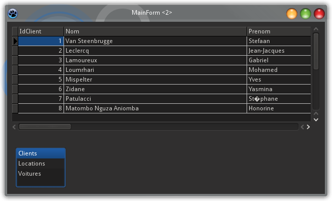
Le fait de sélectionner une autre table charge automatiquement son contenu dans la DBGrid.
Remarque : Si vous êtes très attentif(ve), vous verrez très fugacement apparaître la liste des tales dans le DBGrid, juste avant que le contenu de la première table s'affiche. C'est dû au fait que le DBGrid, via le DataSource, affiche le contenu du dataset du SQLQuery. Pour éviter cette brève apparition, il aurait fallu ne pas lier le DBGrid au DataSource dans ses propriétés et ajouter cette instruction juste après l'exécution de ShowTables (dans la méthode FormActivate) : DbGrid1.DataSource := DataSource1;.
Permettre de modifier les données :
Nous avons laissé un peu de place entre le bord supérieur de la listbox et le bord inférieur du DBGrid pour pouvoir y insérer une barre d'outils de navigation : un composant TDBNavigator (que l'on trouve au début de l'onglet Data Controls). Centrez-le ou donnez-lui la même largeur que le DBGrid :
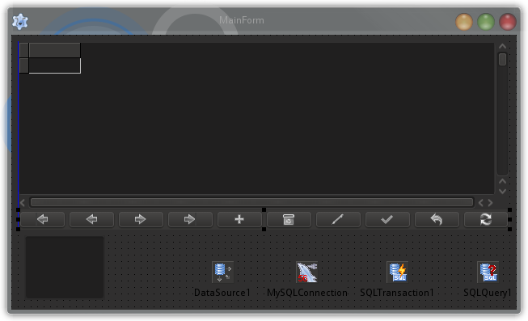
Affectez DataSource1 à sa propriété DataSource. Dans l'inspecteur d'objets, vous pouvez choisir quels boutons vous voulez afficher dans le DBNavigator, dans sa propriété VisibleButtons. Décochez notamment le boutton nbRefresh, qui n'a aucune utilité dans notre exemple.
Exécutez à nouveau l'application et expérimentez la navigation avec les boutons verts, mais aussi l'insertion de lignes, la suppresion, etc. Vous pouvez y aller franchement et tout casser : les modifications que vous faites affectent juste le contenu du DBGrid, mais pas la base de données elle-même. D'ailleurs, si vous changez votre choix de table dans la listbox, vous voyez qu'à chaque réaffichage la table est restaurée dans son étét d'origine.
La dernière étape va être d'enregistrer les modifications dans la base de données.
Attention, ne martyrisez pas trop la base de données dans les tests que vous ferez dorénavant, car nous en aurons encore besoin pour la suite.
Nous allons donc écrire une méthode privée qui va s'occuper de mettre à jour les données des tables dans la base. Cette méthode sera appelée à chaque fois que l'on changera de table dans la listbox, ainsi qu'à la ferneture de l'application.
Retournez dans l'éditeur de source et ajoutez cette méthode dans la section private de TMainForm :
procedure CommitChanges;
Un petit Shift + CTRL + C pour son implémentation :
procedure TMainForm.CommitChanges;
begin
if SQLTransaction1.Active
then
try
SQLQuery1.ApplyUpdates;
SQLTransaction1.Commit;
except
on e: EDatabaseError do
MessageDlg('Erreur d''enregistrement des modifications', mtError, [mbOk], 0);
end;
end;
Appelons-la dans la méthode événementielle qui répond au changement de table dans la listbox :
Et dans la méthode qui répond à la fermeture de la fiche principale :
procedure TMainForm.FormClose(Sender: TObject; var CloseAction: TCloseAction);
begin
CommitChanges; // ***** AJOUT *****
SQLQuery1.Close;
if SQLTransaction1.Active
then
SQLTransaction1.Active := False;
if MySQLConnection.Connected
then
MySQLConnection.Connected := False;
end;
Testez l'application ainsi modifiée (encore une fois, en y allant mollo pour garder utilisable la base de données). Inspectez le contenu de la base avec phpMyAdmin : vous constaterez que toutes les modifications y ont bien été répercutées.
Code complet de l'exemple 2 :
unit Main;
{$mode objfpc}{$H+}
interface
uses
Classes, SysUtils, mysql56conn, sqldb, FileUtil, Forms, Controls, Graphics, Dialogs, StdCtrls, Grids, DBGrids, DbCtrls, db;
type
{ TMainForm }
TMainForm = class(TForm)
DataSource1: TDataSource;
DBGrid1: TDBGrid;
DBNavigator1: TDBNavigator;
lbTables: TListBox;
MySQLConnection: TMySQL56Connection;
SQLQuery1: TSQLQuery;
SQLTransaction1: TSQLTransaction;
procedure FormActivate(Sender: TObject);
procedure FormClose(Sender: TObject; var CloseAction: TCloseAction);
procedure lbTablesSelectionChange(Sender: TObject; User: boolean);
private
{ private declarations }
procedure ShowTables;
procedure CommitChanges;
public
{ public declarations }
end;
var
MainForm: TMainForm;
implementation
{$R *.lfm}
{ TMainForm }
procedure TMainForm.FormClose(Sender: TObject; var CloseAction: TCloseAction);
(* Fermeture propre de la connexion avant la fin de programme *)
begin
(* Enregistrement des éventuelles modifications *)
CommitChanges;
(* Fermeture de la connexion *)
SQLQuery1.Close;
if SQLTransaction1.Active
then
SQLTransaction1.Active := False;
if MySQLConnection.Connected
then
MySQLConnection.Connected := False;
end;
procedure TMainForm.lbTablesSelectionChange(Sender: TObject; User: boolean);
(* Sélection d'une table dans la listbox *)
begin
(* Enregistrement des éventuelles modifications *)
CommitChanges;
(* Chargement des données de la table choisie *)
SQLQuery1.Close;
SQLQuery1.SQL.Text := 'SELECT * FROM ' + lbTables.GetSelectedText + ';';
SQLQuery1.Open;
end;
procedure TMainForm.ShowTables;
(* Chargement de la liste des tables dans la listbox *)
begin
SQLQuery1.Close;
SQLQuery1.SQL.Text := 'SHOW TABLES;';
SQLQuery1.Open;
while not SQLQuery1.EOF do
begin
lbTables.Items.Add(SQLQuery1.Fields[0].AsString);
SQLQuery1.Next;
end;
if SQLQuery1.RecordCount > 0
then
lbTables.ItemIndex := 0;
end;
procedure TMainForm.CommitChanges;
(* Enregistrement des modifications *)
begin
if SQLTransaction1.Active
then
try
SQLQuery1.ApplyUpdates;
SQLTransaction1.Commit;
except
on e: EDatabaseError do
begin
MessageDlg('Erreur d''enregistrement des modifications', mtError, [mbOk], 0);
end;
end;
end;
procedure TMainForm.FormActivate(Sender: TObject);
(* Lecture du mot de passe et connexion à la base de données *)
var
LPassword : String;
begin
(* Données de la connexion *)
MySQLConnection.HostName := '192.168.0.1';
MySQLConnection.DatabaseName := 'location';
MySQLConnection.UserName := 'mysqldvp';
(* Lecture du mot de passe *)
if InputQuery('Connexion à la base de données', 'Tapez votre mot de passe :', True, LPassword)
then
begin
(* Connexion à la base de données *)
MySQLConnection.Password := LPassword;
try
MySQLConnection.Connected := True;
SQLTransaction1.Active := True;
ShowTables;
except
on e: EDatabaseError do
begin (* Erreur de connexion : fin de programme *)
MessageDlg('Erreur de connexion à la base de données.'#10#13'Le mot de passe est peut-être incorrect ?'#10#10#13'Fin de programme.', mtError, [mbOk], 0);
Close;
end;
end;
end
else (* Pas de mot de passe : fin de programme *)
Close;
end;
end.
Exemple 3 : une application complète :
Nous pourrions déjà arrêter là : vous avez découvert les composants natifs de Lazarus permettant de créer des applications utilisant une base de données et vous pourrez sans trop de difficultés appliquer les principes vus pour MySQL à d'autres systèmes de bases de données. Mais nous allons essayer d'aller un peu plus loin, en découvrant d'autres contrôles spécialisés, en voyant comment modifier les données dans des contrôles classiques (non spécialisés dans les bases de données), et comment regrouper le traitement des données dans une unité d'un type un peu particulier : un DataModule. Nous parlerons également de l'intérêt de centraliser la génération des requêtes SQL dans une interface.
Création du projet :
Commençons par le commencement :
créez un nouveau projet de type Application;
renommez l'unité Unit1 en Main;
renommez la fiche principale en MainForm (qui devient automatiquement de type TMainForm);
changez sa propriété Caption (son titre) en, par exemple, "Location de voitures";
enregistrez le projet sous le nom mysql03, dans un nouveau répertoire du même nom.
Unité de type DataModule :
Les deux premiers exemples étaient de minuscules applications, qui ne sont pas très difficiles à comprendre, ni à déboguer, pour un développeir qui les découvre. Lorsque l'on crée des applications de plus grande ampleur, ces aspects (comprendre et déboguer) prennent toute leur importance et il faut que vous aussi vous vous y retrouviez facilement si vous devez en assurer la maintenance dans le futur.
Nous allons faire en sorte que tout le traitement en rapport avec la base de données soit regroupé à part, et Lazarus possède un type particulier d'unité adapté à cela : le DataModule. Ce type d'unité est l'endroit idéal pour déposer des composants invisibles, comme ceux que nous avons utilisés précédemment, mais ce n'est pas limitatif.
Attention, ce manière de faire pourrait aussi faciliter la migration d'une application vers un autre système de gestion de base de données.
Allez dans le menu Fichier, Nouveau, Module de données et cliquez sur OK pour ajouter une unité DataModule :
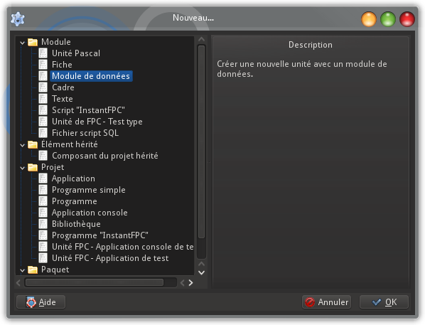
La nouvelle unité créée présente une fiche similaire à une fiche normale de type TForm. Renommez tout de suite l'unité en DataAccess.
Depuis l'onglet de composants SQLdb, déposez sur la fiche un composant TMySQLxxConnection correspondant à votre version, et un composant TSQLTransaction. Renommez-les respectivement SQLConnection et SQLTransaction, et assignez SQLConnection à la propriété Database de SQLTransaction. N'oubliez pas d'inscrire UTF8 dans la propriété CharSet de SQLConnection.
Allez dans le menu Projet, Options du projet et cliquez sur l'entrée Fiches. Vous constatez que la fiche principale et le datamodule sont automatiquement créés au démarrage de l'application. C'est très bien ainsi, hormis qu'ils ne sont pas créés dans le bon ordre : vous comprendrez très bite pourquoi le datamodule doit être créé avant la fiche principale. Mettez DataModule1 en surbillance et faites-le monter en tête de liste à l'aide de la petite flèche verte à gauche. Tant que vous y êtes, décochez la case Créer automatiquement les nouvelles fiches au bas du dialogue : nous n'aurons pas besoin que toutes les autres fiches de l'application soient créées au démarrage.
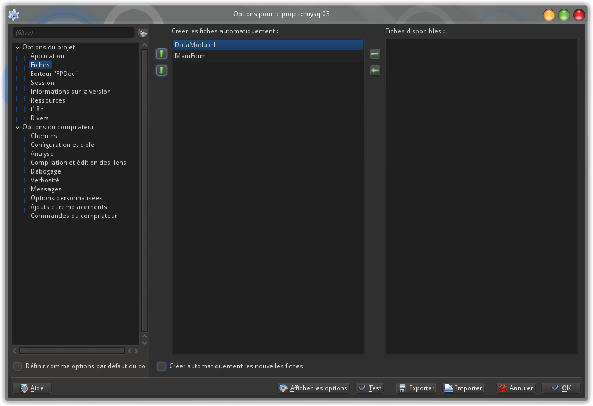
Cliquez sur OK. Ouvez l'inspecteur de projet, par le biais du menu Projet, Inspecteur de projet :
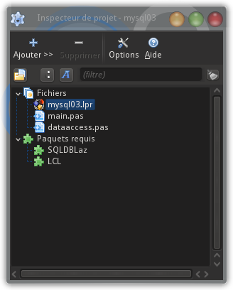
Le projet est pour l'instant composé d'un programme principal, mysql03.lpr, et de deux unités, main.pas et dataaccess.pas. Double-cliquez sur le programme principal : dans son code source, vous voyez que le datamodule est bien créé avant la fiche principale :
program mysql03;
{$mode objfpc}{$H+}
uses
{$IFDEF UNIX}{$IFDEF UseCThreads}
cthreads,
{$ENDIF}{$ENDIF}
Interfaces, // this includes the LCL widgetset
Forms,
DataAccess,
Main
{ you can add units after this };
{$R *.res}
begin
RequireDerivedFormResource:=True;
Application.Initialize;
Application.CreateForm(TDataModule1, DataModule1);
Application.CreateForm(TMainForm, MainForm);
Application.Run;
end.
Nous avons mentionné, au début de cet exemple, que l'utilisation du datamodule pourrait faciliter la migration de notre application vers un autre système de gestion de base de données, comme SQLite ou PostgreSQL. Alors nous allons jouer le jeu et y regrouper tout ce qui est propre à MySQL.
Nous allons d'abord y inclure les méthodes de connexion (avec la demande de mot de passe) et de déconnexion que nous avions développées dans l'exemple 2.
Cliquez sur l'onglet du code source de l'unité DataAccess et ajoutez, dans la section public de la classe TDataModule1, ces deux méthodes :
function Login : Boolean;
procedure Logoff;
Pressez la combinaison de touches Shift + CTRL + C, afin que Lazarus crée les deux méthodes dans la section implementation.
Recopiez dans la méthode Login le code de connexion contenu dans la méthode FormActivate de l'exemple 2, et dans la méthode Logoff le contenu de la méthode FormClose.
function TDataModule1.Login: Boolean;
(* Demande du mot de passe et connexion à la base de données *)
var
LPassword : String;
begin
Result := True;
SQLConnection.HostName := '192.168.0.1';
SQLConnection.DatabaseName := 'location';
SQLConnection.UserName := 'mysqldvp';
if InputQuery('Connexion à la base de données', 'Tapez votre mot de passe :', True, LPassword)
then
begin
SQLConnection.Password := LPassword;
try
SQLConnection.Connected := True;
SQLTransaction.Active := True;
except
on e : ESQLDatabaseError do
begin (* Erreur renvoyée par MySQL : fin de programme *)
MessageDlg('Erreur de connexion à la base de données :'#10#10#13 + IntToStr(e.ErrorCode) + ' : ' + e.Message + #10#10#13'Fin de programme.', mtError, [mbOk], 0);
Result := False;;
end;
on e : EDatabaseError do
begin (* Erreur de connexion : fin de programme *)
MessageDlg('Erreur de connexion à la base de données.'#10#10#13'Fin de programme.', mtError, [mbOk], 0);
Result := False;;
end;
end;
end
else
Result := False;
end;
procedure TDataModule1.Logoff;
(* Déconnexion de la base de données *)
begin
if SQLTransaction.Active
then
SQLTransaction.Active := False;
if SQLConnection.Connected
then
SQLConnection.Connected := False;
end;
Pour que le compilateur trouve la fonction InputQuery, ajoutez l'unité Dialogs à la clause uses du datamodule, et ajoutez l'unité db pour le type EDatabaseError.
Retournez dans l'unité Main et pressez F12 pour afficher la fiche principale. Dans l'inspecteur d'objets, dans l'onglet Événements, descendez sur l'événement OnShow et cliquez sur les trois points correspondants. Cela va créer la méthode TMainForm.FormShow dans la section implémentation. C'est à cet endroit que nous allons appeler la méthode de login que nous avons implémentée dans le datamodule :
procedure TMainForm.FormShow(Sender: TObject);
(* Demande de mot de passe *)
begin
if DataModule1.Login
then
begin
ShowMessage('Login couronné de succès !');
end
else
Close;
end;
Faites la même chose avec l'événement OnClose :
procedure TMainForm.FormClose(Sender: TObject; var CloseAction: TCloseAction);
(* Fermeture propre de la connexion à la base de données *)
begin
DataModule1.Logoff;
end;
Il ne faut pas oublier d'ajouter l'unité DataAccess à la clause uses de l'unité Main, sinon le compilateur dira qu'il ne connaît ni Login ni Logoff.
Vous pouvez compiler et exécuter votre application à ce stade, pour vérifier que la connexion est bien couronnée de succès.
Bon, il est temps de définir à quoi va ressembler et ce que va faire notre application de gestion de location de voitures.
Nous aurons une fenêtre principale, qui va contenir la liste des locations :
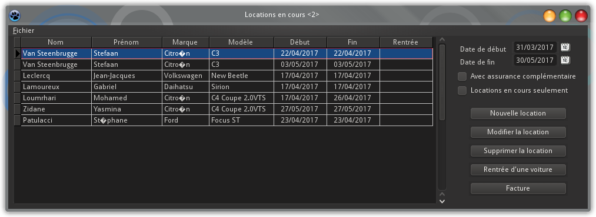
Un dialogue permettra de gérer la liste des voitures disponibles :
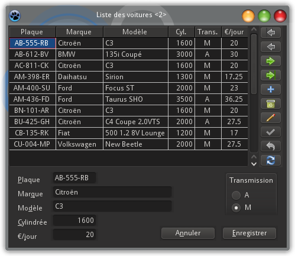
Un autre, similaire, sera consacré à la liste des clients :
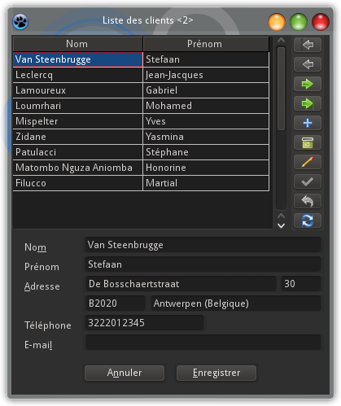
Dans un dialogue, on pourra créer une nouvelle location :
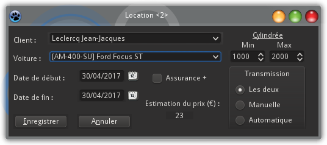
Ce dialogue servira également à modifier une location existante.
Pour terminer, nous sortirons une facture à l'aide d'un générateur de rapports.
Nous avons du pain sur la planche ! Créons tout de suite le dialogue de gestion des voitures.
Utilisation des composants spécialisés :
Dans les deux premiers exemples, vous avez déjà découvert les composants TDBGrid et TDBNavigator. Nous allons encore nous en servir, mais nous allons aussi utiliser d'autres composants spécialisés comme TDBEdit et TDBRadioGroup. Si vous parcourez l'onglet Data Controls de la palette, vous trouvez toute une panoplie de composants : mémo, liste déroulante, etc. Avec ceux que nous allons voir ici, vous devriez être à même de les utiliser tous par la suite.
L'utilisation de tous ces composants spécialisés impose de mettre en service, comme dans les deux premiers exemples, un TSQLQuery et un TDataSource. Et à quel endroit allons-nous les placer ? Dans le datamodule, bien sûr !
Attentions, nous assignerons un TSQLQuery et, éventuellement, un TDataSource à chaque table de la base de données.
Cliquez sur l'onglet du code source de l'unité DataAccess puis pressez F12. Sur la fiche DataModule1, déposez donc un exemplaire de chacun de ces deux composants (le TSQLQuery depuis l'onglet SQLdb et le TDataSource depuis l'onglet DataAccess). Renommez-les respectivement SQLQueryVoitures et DataSourceVoitures. La propriété Database du premier doit être initialisée à SQLConnection et la propriété DataSet du second à SLQueryVoitures.
Tant que nous sommes dans l'inspecteur d'objets, nous allons définir les différents champs de la table Voitures dans les propriétés de SQLQueryVoitures. Repérez la propriété FieldDefs et cliquez sur les trois points en regard. Un dialogue va s'ouvrir, dans lequel vous allez ajouter successivement les champs en cliquant sur le bouton "+" :
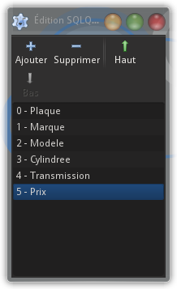
Pour chaque champ, vous allez définir dans l'inspecteur d'objets les propriétés Name, DataType et, éventuellement, Size. Voici la liste de ces propriétés :
Name
DataType
Size
Plaque
ftString
12
Marque
ftString
20
Modele
ftString
20
Cylindree
ftInteger
0
Transmission
ftFixedChar
1
Prix
ftFloat
0
Créons à présent une nouvelle fiche, à l'aide du second bouton de la barre d'outils. Concomitamment, une nouvelle unité est créée : renommez-la Voitures et enregistrez-la sous le nom voitures.pas. Dans l'explorateur d'objets, changez la propriété Name de la fiche en CarForm et indiquez son titre (par exemple, "Liste des voitures") dans la propriété Caption.
Cliquez sur l'onglet de composants Data Controls de la palette. Depuis cet onglet, déposez sur la fiche les composants énumérés ci-après.
Attention, ne faites pas trop vite le lien entre les composants que vous allez déposer et le TDataSource : si vous le faites, Lazarus vous bloquera lorsque vous voudrez assigner aux contrôles les champs de la table Voitures.Donc définissez d'abord toutes les autres propriétés de vos contrôles et finissez par leur propriété DataSource.
TDBGrid :
Nommez-le dbgVoitures dans sa propriété Name et dimensionnez-le à 424 pixels de largeur (Width) sur 240 pixels de hauteur (Height). La propriété Scrollbars peut être fixée à ssAutoVertical.
Cliquez sur les trois points en regard de la propriété Columns : un assistant va vous aider à créer les différentes colonnes du DBGrid. Cliquez chaque fois sur le bouton "+" pour ajouter une colonne et éditez les propriétés de celle-ci dans l'inspecteur d'objets.
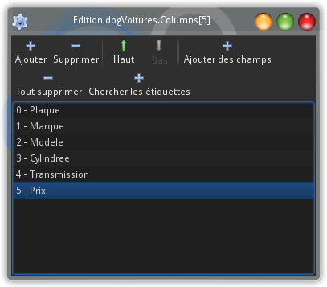
Tous les titres (propriété Title/Alignment) étant centrés (taCenter), voici les propriétés des différentes colonnes à ajouter :
FieldName
Caption
Width + MaxSize
Alignment
Plaque
Plaque
79
taCenter
Marque
Marque
80
taLeftJustify
Modele
Modèle
110
taLeftJustify
Cylindree
Cyl.
45
taCenter
Transmission
Trans.
45
taCenter
Prix
€/jour
45
taCenter
Pour terminer les réglages, il faut modifier les propriétés suivantes :
Propriété
Valeur
Options/dgIndicator
False
FixedCols
0
Comme nous l'avons mentionné juste avant de commencer le dépôt des composants sur la fiche, nous terminons par la propriété DataSource du DBGrid, que nous assignons à DataModule1.DataSourceVoitures.
Remarque : Nous pourrions penser que le fait de faire un lien entre un composant de la fiche et un datasource qui se trouve dans un datamodule entraînerait de la part de Lazarus la déclaration de ce datamodule dans la clause uses de l'unité de la fiche. Il n'en est rien : c'est à nous de le faire. Ajoutez donc l'unité DataAccess à la clause uses de l'unité Voitures.
TDBNavigator :
Nous restons pour l'instant en terrain connu, car nous allons déposer sur la fiche un composant TDBNavigator. C'est lui qui s'occupera de la navigation dans la table et de toutes les modifications de données.
Déposez-le à droite du DBGrid, nommez-le dbnVoitures (propriété Name), changez sa propriété Direction à nbdVertical (pour qu'il s'affiche verticalement), réglez sa largeur et sa hauteur pour qu'il vienne se coller le long de la bordure de droite du DBGrid :
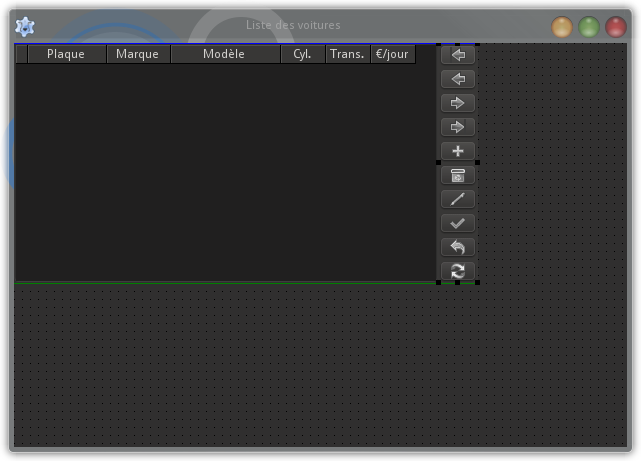
Fixez enfin sa propriété DataSource à DataModule1.DataSourceVoitures.
TDBEdit :
Nous allons à présent ("enfin", direz-vous peu-être) découvrir un nouveau composant spécialisé : le TDBEdit. Il s'agit, comme son nom l'indique, d'un champ d'édition qui sera lié à un champ d'une table de base de données. Nous allons en déposer plusieurs, en dessous du DBGrid, acoompagnés de classiques TLabels (de l'onglet Standard) :
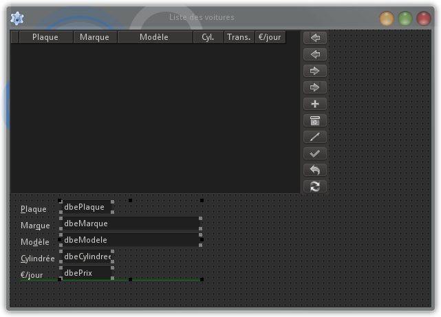
Leurs propriétés respectives Name et Caption (pour les TLabel) seront fixées comme suit :
Name (TLabel)
Caption (TLabel)
Name (TDBEdit)
DataField (TDBEdit)
lblPlaque
&Plaque
dbePlaque
Plaque
lblMarque
Mar&que
dbeMarque
Marque
lblModele
Mo&dèle
dbeModele
Modele
lblCylindree
&Cylindrée
dbeCylindree
Cylindree
lblPrix
€/&jour
dbePrix
Prix
Élargissez les deux TDBEdit correspondant à la marque et modèle de voiture, pour laisser suffisamment de place au texte qui s'y placera.
Sélectionnez les cinq TDBEdit, en pressant la touche Shift tout en cliquant sur les compsants, et assignez d'un seul coup DataModule1.DataSourceVoitures à leur propriété DataSource.
TDBRadioGroup :
Le champ Transmission de la table Voitures indique si la voiture est équi^ée d'une transmission automatique ou manuelle; ce champ est destiné à recevoir la valeur "A" ou "M". Très naturellement, nous allons confier cette alternative à deux boutons radio, au sein d'un composant TDBRadioGroup.
Depuis l'onglet Data Controls (toujours le même), déposez à droite, en dessous du DBGrid, un composant TDBRadioGroup, que vous renommez directement dbrgTransmission. Sa propriété Caption devient "Transmission" et sa taille 90 (Width) par 73 (Height). Fort logiquement, vous assignerez à la propriété DataField le nom de champ Transmission.
Dans l'inspecteur d'objets, cliquez sur les trois points qui correspondent à la propriété Items du composant : un assistant va vous permettre d'énumérer les options qui seront proposées dans le groupe de boutons radio. Ce ne sera pas très long, puisque les valeurs possibles sont "A" et "M" :
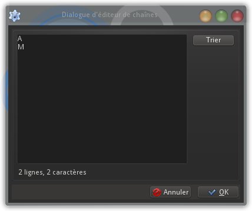
Nous terminons, comme chaque fois, par la propriété DataSource du composant, qui est initialisée elle aussi à DataModule1.DataSourceVoitures.
Finalisation de la fiche :
Nous avons terminé le dépôt de tous les composants spécialisés sur la fiche. Nous allons la finaliser et la tester.
Il reste de place, en bas et à droite de la fiche, pour ajouter deux boutons classiques : le premier, que nous renommerons en btnEnregistrer et dont nous initialiserons la propriété Caption à "&Enregistrer", et le second, que nous appellerons btnAnnuler et dont la propriété Caption sera "A&nnuler". Réglez la taille de la fiche pour obtenir quelque chose de joli :
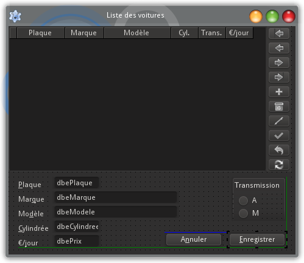
Le but de notre fiche sera de permettre à l'utilisateur de modifier le contenu de la table Voitures de la base de données. Dès que notre dialogue s'affichera, toutes les voitures devront être chargées dans le DBGrid. Vous connaissez à présent la requête SQL qui permet de le faire :
SELECT * FROM Voitures;
Mais ! Rappelez-vous, nous avons pris le parti, dans cette application, de regrouper toute l'interface avec la base de données dans le datamodule. Nous n'allons donc pas implémenter notre requête dans le code de notre fiche, mais bien dans celui du datamodule.
Dans l'inspecteur d'objets, sélectionnez la fiche CarForm elle-même, cliquez sur l'onglet Événements, puis sur les trois points en regard de l'événement OnShow. Complétez la méthode créée par Lazarus comme ceci :
procedure TCarForm.FormShow(Sender: TObject);
(* Chargement de la liste des voitures *)
begin
DataModule1.ChargementVoitures;
end;
Nous confions donc le chargement de la table à une méthode ChargementVoitures, que nous n'avons pas encore écrite dans le datamodule. Nous le ferons juste après.
Les deux boutons que nous avons ajoutés en dernier vont permettre à l'utilisateur d'enregistrer les modifications, ou bien de quitter le dialogue sans les enregistrer. Nous allons créer une propriété Enregistre (nous aimerions écrire "Enregistré" mais les caractères accentués ne sont pas - pas encore ? - autorisés dans la syntaxe du Pascal) pour notre fiche, de type booléen, qui va permettre de savoir si les données ont bien été enregistrées au moment de fermer le dialogue.
Créez un champ FEnregistre dans la section strict private de la fiche, ainsi que la propriété dont nous venons de parler et son setter :
N'oublions pas d'initialiser cette propriété à False dès l'affichage du dialogue :
procedure TCarForm.FormShow(Sender: TObject);
(* Chargement de la liste des voitures *)
begin
// AJOUT :
Enregistre := False;
// FIN AJOUT
DataModule1.ChargementVoitures;
end;
Voici le code du setter :
procedure TCarForm.SetEnregistre (AValue : Boolean);
(* Setter de la propriété Enregistre *)
begin
if FEnregistre = AValue
then
Exit;
FEnregistre := AValue;
end;
Faisons en sorte que l'utilisateur reçoive un message de confirmation, s'il veut fermer le dialogue sans que les données soient enregistrées. Cela se fera en réponse à l'événement OnCloseQuery (cliquez sur les trois points en regard de cet événement, dans l'inspecteur d'objets) :
procedure TCarForm.FormCloseQuery (Sender : TObject; var CanClose : Boolean);
(* Demande éventuelle de confirmation de fermeture sans enregistrer *)
begin
if Enregistre
then
CanClose := True
else
CanClose := (MessageDlg('Voulez-vous fermer sans enregistrer ?', mtConfirmation, [mbYes, mbNo], 0) = mrYes);
end;
Il nous reste juste à implémenter les méthodes qui vont réagir à un clic sur les boutons "Enregistrer" et "Annuler". Cliquez successivement sur les trois points qui correspondent à l'événement OnClick des deux boutons, et complétez les méthodes comme ceci :
procedure TCarForm.btnEnregistrerClick(Sender: TObject);
(* Enregistre les modifications dans la base de données *)
begin
Enregistre := DataModule1.SauvegardeVoitures;
Close;
end;
procedure TCarForm.btnAnnulerClick(Sender: TObject);
(* Ferme la fenêtre sans enregistrer *)
begin
Close;
end;
Vous le voyez, nous allons également tout de suite devoir écrire une méthode SauvegardeVoitures dans le datamodule.
Méthodes de chargement et de sauvegarde des onnées dans le datamodule :
Allons-y, dans notre datamodule, et créons-y les deux méthodes publiques dont nous avons besoin. Il nous faudra une troisième méthode privée, que nous appelerons Commit, qui sera chargée d'enregistrer toutes les modifications définitivement dans la base de données.
type
{ TDataModule1 }
TDataModule1 = class(TDataModule)
DataSourceVoitures: TDataSource;
SQLConnection: TMySQL56Connection;
SQLQueryVoitures: TSQLQuery;
SQLTransaction: TSQLTransaction;
private
// AJOUT :
function Commit : Boolean;
// FIN AJOUT
public
function Login : Boolean;
procedure Logoff;
// AJOUT :
procedure ChargementVoitures;
function SauvegardeVoitures : Boolean;
// FIN AJOUT
end;
Après un Shift + CTRL + C, voici le code à implémenter :
function TDataModule1.Commit: Boolean;
(* Sauvegarde des changements dans la base de données *)
begin
Result := True;
if SQLTransaction.Active
then
try
SQLTransaction.Commit;
except
on e: ESQLDatabaseError do
begin (* Erreur renvoyée par MySQL *)
MessageDlg('Erreur n° ' +
IntToStr(e.ErrorCode) + ' : ' + e.Message,
mtError, [mbOk], 0);
Result := False;
end;
on e: EDatabaseError do
begin (* Erreur générale *)
MessageDlg('Erreur de sauvegarde des données', mtError, [mbOk], 0);
Result := False;
end;
end
else
Result := False;
end;
procedure TDataModule1.ChargementVoitures;
(* Chargement des voitures *)
begin
with SQLQueryVoitures do
begin
Close;
SQL.Text := 'SELECT * FROM Voitures;';
Open;
end;
end;
function TDataModule1.SauvegardeVoitures: Boolean;
(* Sauvegarde de la table Voitures *)
begin
SQLQueryVoitures.ApplyUpdates;
Result := Commit;
end;
Il n'y a rien de nouveau, à ce niveau, par rapport aux deux premiers exemples.
Test de la fiche :
Vous êtes sans doute tout excité(e) à l'idée de tester le dialogue de modification des voitures que vous avez créé.
Retournez dans l'unité de la fiche principale. On pourrait trouver mille et un événements pour afficher le dialogue (un bouton sur la fiche principale, une réponse à un clic de souris sur la fenêtre, etc.). J'ai opté pour un menu.
Dans l'onglet Standard, choisissez un TMainMenu et déposez-le sur la fiche. Renommez-le éventuellement MainMenu (propriété Name). Cliquez sur les trois points à droite de sa propriété Items, pour ouvrir l'assistant de conception.
Un seul item est présent dans l'éditeur de menu. Dans l'inspecteur d'objets, changez sa propriété Name en mnuFichier et sa propriété Caption en "&Fichier". Faites un clic droit sur l'item dans l'assistant, puis choisissez Créer un sous-menu. Cliquez sur le nouvel item créé et, dans l'inspecteur d'objets renommez-le mnuFichierVoitures, avec comme caption "Gérer les &voitures".
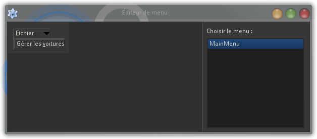
Une fois que c'est fait, fermez l'assistant. Dans l'inspecteur d'objets, sélectionnez le tout dernier item qui vient d'être céé; dans l'onglet Événements, cliquez sur les trois points à droite de l'événement OnClick et complétez la nouvelle créée.
procedure TMainForm.mnuFichierVoituresClick(Sender: TObject);
(* Gestion de la liste des voitures *)
var
LCarForm : TCarForm; (* Dialogue de gestion des voitures *)
begin
LCarForm := TCarForm.Create(Self);
try
LCarForm.ShowModal;
finally
FreeAndNil(LCarForm);
end;
end;
N'oubliez pas d'ajouter l'unité Voitures à la clause uses de l'unité Main.
Cette fois, nous sommes prêts : compilez et exécutez l'application.
Entrez le mot de passe dans le premier dialogue :
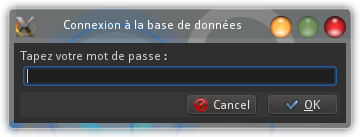
Le petit message nous informe que la connexion à la base de données est couronnée de succès :
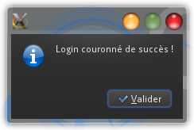
La fenêtre principale est bien vide pour l'instant (nous allons rapidement la remplir), juste le menu principal :
Dans le menu Fichier, vous choisissez l'item Gérer les voitures. La fiche que nous voulons tester apparaît :
Parcourez le DBGrid et voyez comme tous les contrôles que nous avons déposés sur la fiche se mettent à jour automatiquement. Faites l'expérience d'en modifier un, cliquez sur la petite coche ("Post") du DBNavigator et voyez comment le champ se met à jour dans le DBGrid. Faites ce que vous voulez; pensez simplement que lorsque vous aurez cliqué sur Enregistrer, vos modifications seront injectées dans la base de données.
Exercice : réaliser le dialogue de gestion des clients :
Je vous propose un exercice, à ce stade : avec ce que vous venez de voir, vous devriez être capable de réaliser seul(e) le dialogue de gestion des clients, avec des composants spécialisés. Le principe est identique à celui des voitures.
Petites précisions :
appelez votre fiche CustomerForm et l'unité Clients
n'affichez pas toutes les colonnes dans le DBGrid, sous peine d'avoir une fiche très, très large. Vous pouvez vous contenter des noms et prénoms.
La solution (du moins, une solution possible) se trouvera dans le code complet du projet, que vous trouverez tout à la fin.
Une interface pour définir les requêtes SQL :
Dans le souci de bien structurer notre application, nous avons centralisé l'interfaçage avec la base de données dans un datamodule. Nous allons encore aller un cran plus loin, en regroupant tout ce qui a trait à la syntaxe SQL dans une unité séparée.
SQL (acronyme de Structured Query Language), est un langage normalisé, devenu pratiquement universel, permettant d'exploiter un très grand nombre de bases de données. Chaque système de gestion de bases de données, malheureusement, ajoute çà et là de petites variantes, ou développe des extensions propres qui complètent le langage SQL de base.
Si nous voulons que notre application puisse aisément être transposée à un autre SGBD (par exemple, de MySQL à SQLite), nous n'avons qu'à modifier la syntaxe de nos requêtes, et le reste de l'application, hormis le connecteur, pourra rester pratiquement inchangé.
Nous allons déclarer une interface, qui va contenir toutes les requêtes utiles pour notre application. Pour chaque nouvelle syntaxe, il faudra déclarer une classe particulière qui sera obligée d'implémenter toutes les requêtes définies dans l'interface.
À l'aide du tout premier bouton de la barre d'outils de Lazarus, créez une nouvelle unité, que vous enregistrez immédiatement sous le nom sql.pas.
Dans la section type, créez une interface ISQLSyntax :
type
ISQLSyntax = interface
end;
À l'aide de la combinaison de touches Shift + CTRL + G, créez automatiquement un GUID :
type
ISQLSyntax = interface
['{4AF51BFD-D53D-43F7-9A36-17E859D467CE}']
end;
La seule requête SQL que nous ayons utilisée jusqu'à présent est celle qui sélectionne toutes les voitures dans la table Voitures. Créez une première fonction SelectionVoituresToutes :
type
{ ISQLSyntax }
ISQLSyntax = interface
['{238542C2-ADA2-46BC-9138-4D270BEB85D0}']
function SelectionVoituresToutes : String;
(* Requête de sélection de toutes les voitures *)
end;
Pressez la combinaison de touches Shift + CTRL + C : il ne se passe... rien. En effet, les méthodes déclarées dans l'interface sont uniquement implémentées dans une classe descendante.
Toute classe descendante de cette interdace sera donc obligée d'implémenter la fonction SelectionVoituresToutes. Nous allons créer une classe pour la syntaxe MySQL :
TMySQLSyntax = class(TInterfaceObject, ISQLSyntax)
function SelectionVoituresToutes : String;
end;
Cette fois, pressez Shift + CTRL + C et complétez la méthode dans la section implémentation :
function TMySQLSyntax.SelectionVoituresToutes : String;
(* Requête de sélection de toutes les voitures *)
begin
Result := 'SELECT * FROM Voitures;';
end;
Déclarez une variable de type TMySQLSyntax dans la partie interface de l'unité :
var
SQLSyntax : TMySQLSyntax; (* Syntaxe propre à MySQL *)
N'oubliez pas d'ajouter l'unité SQL à la clause uses.
À présent, réfléchissons à l'endroit où nus allons instancier la classe TMySQLSyntax. À quel moment en aurons-nous besoin ? À chaque fois qu'une commande SQL devra être générée, c'est-à-dire à peu près partout dans l'application. Donc le meilleur enroit est de la créer au moment de l'affichage de la fenêtre principale, après le login, puis de la libérer à la fermeture de l'application. Il faut donc modifier les méthodes FormShow et FormClose de la fiche principale (dans l'unité Main) :
procedure TMainForm.FormShow(Sender: TObject);
(* Demande de mot de passe *)
begin
if DataModule1.Login
then
begin
// DÉBUT DE L'AJOUT
(* Initialisation de la classe de syntaxe SQL *)
SQLSyntax := TMySQLSyntax.Create;
// FIN DE L'AJOUT
ShowMessage('Login couronné de succès !');
end
else
Close;
end;
procedure TMainForm.FormClose (Sender : TObject; var CloseAction : TCloseAction);
(* Fermeture propre de la connexion à la base de données *)
begin
// DÉBUT DE L'AJOUT
(* Libération des commandes SQL *)
SQLSyntax.Free;
// FIN DE L'AJOUT
(* Déconnexion *)
DataModule1.Logoff;
end;
Encore une fois, ajoutez l'unité SQL à la clause uses de l'unité Main.
Utilisation d'un TDBGrid sans TDBNavigator :
Nous allons nous occuper de notre fenêtre principale, qui est bien vide pour l'instant. Ele contiendra la liste des locations, mais aussi différents filtres permettant de n'afficher que les locations répondant à différents critères.
TDBGrid :
La liste des locations sera contenue dans un DBGrid dont les colonnes seront les suivantes :
les nom et prénom du client;
la plaque de la voiture;
la marqye de la voiture;
son modèle;
la date de début de location;
la date de fin prévue;
la date de rentrée de la voiture à l'issue de la location.
J'ai décidé d'afficher le nom et le prénom du client dans une seule colonne. Pour ce faire, une solution est d'ajouter dans la table Clients un champ supplémentaire. En réalité, nous n'avons pas besoin de créer une colonne qui contiendra en permanence des données : nous allons créer une colonne virtuelle, dont le contenu sera calculé à partir des colonnes Nom et Prénom (qui ne peuvent être nulles, ainsi que nous les avons conçues).
Direction le navigateur web et PHPMyAdmin : dans l'onglet SQL, collez la commande suivante :
ALTER TABLE Clients ADD NomPrenom VARCHAR(81) AS ( CONCAT(Nom,' ',Prenom) ) VIRTUAL;
Cette nouvelle colonne NomPrenom ne prendra aucune place dans la base de données, et nous pourrons nous en servir pour afficher ensemble le nom et le prénom de chaque client.
Direction le datamodule : cliquez sur l'onglet de l'unité DataAccess et pressez F12.
Déposez sur la fiche un nouveau composant TSQLQuery et un nouveau TDataSource, que vous renommez tout de suite respectivement SQLQueryMain et DataSourceMain. Vous connaissez la musique : assignez SQLConnection à la propriété Database du SQLQuery et SQLQueryMain à la propriété DataSet du DataSource.
En cliquant sur les trois points en regard de la propriété FieldDefs du SQLQuery, définissez les différents champs à l'aide de l'assistant :
Name
DataType
Size
IdLocation
ftWord
0
IdClient
ftWord
0
Plaque
ftString
12
DateDebut
ftDateTime
0
DateFin
ftDateTime
0
DateRentree
ftDateTime
0
Assurance
ftSmallInt
0
Plaque_1
ftString
12
Marque
ftString
20
Modele
ftString
20
Cylindree
ftInteger
0
Transmission
ftFixedChar
1
Prix
ftFloat
0
IdClient_1
ftWord
0
Nom
ftString
40
Prenom
ftString
40
CodePostal
ftString
10
Localite
ftString
50
Rue
ftString
80
Numero
ftString
10
Telephone
ftString
40
Email
ftString
50
NomPrenom
ftString
81
Êtes-vous surpris(e) par le nombre de champs ? C'est normal : la table Locations fait référence aux tables Voitures et Clients, par ses clés étrangères, et dans toute requête de sélection nous ferons ce que l'on appelle une jointure. Laissez-moi le bénéfice du doute pendant quelques minutes encore.
Revenez à la fiche principale, en cliquant sur l'onglet Main et en pressant F12.
Élargissez franchement la fiche et déposez-y un composant TDBGrid, que vous renommez dbgMain et dont vous fixez la taille à 784 x 312.
À l'aidce de l'assistant de création de colonnes (que vous exécutez en cliquant sur les trois points en regard de la propriété Columns, dans l'inspecteur d'objets), créez les colonnes suivantes :
Titre (Title)
Taille (Width)
Champ (FieldName)
Client
240
NomPrenom
Plaque
80
Plaque
Marque
80
Marque
Modèle
110
Modele
Début
80
DateDebut
Fin
80
DateFin
Rentrée
80
DateRentree
pour obtenir un affichage correct dans les trois colonnes de dates, assignez à leur propriété DisplayFormat la valeur suivante : "dd"/"mm"/"yyyy".
Pour terminer, affectez DataModule1.DataSourceMain à la propriété DataSource du DBGrid.
Filtres :
Est-il intéressant d'afficher l'entièreté des locations, c'est-à-dire passées, présentes et futures ? Pas tellement, alors nous allons ajouter des filtres sur la fenêtre principale.
À droite du DBGrid, déposez deux TLabel (onglet Standard) et deux TDataEdit (onglet Misc) :
Renommez-les respectivement lblFiltreDateDebut et lblFiltreDateFin, pour les TLabel, et deFiltreDateDebut et deFiltreDateFin pour les TDataEdit. Fixez les propriétés Caption des labels à "Date de début :" et "Date de fin :".
Il nous faut fixer le format des deux composants d'édition de date : dans l'inspecteur d'objets, leur propriété DateOrder doit être assignée à doDMY. Vous voyez que le contrôle d'édition lié est automatiquement configuré par Lazarus en "__/___/____", pour permettre d'afficher la date au format "jj/mm/aaaa" auquel nous sommes habitués.
Nous allons ajouter un autre filtre, en dessous des deux que nous venons de créer, permettant de n'afficher que les locations pour lesquelles une assurance complémentaire a été contractée par le client. Il s'agira d'une simple case à cocher (composant TCheckBox), que m'on trouve dans l'onglet Standard.
Assignez cbFiltreAssurance à sa propriété Name et "Assure complémentaire" à sa propriété Caption.
Nous allons faire en sorte qu'au démarrage de l'application, les filtres sur la date de début et la date de fin soient fixés à un mois dans le passé et un mois dans le futur. Dans le code source de l'unité Main, ajoutez ce code à la méthode FormShow :
procedure TMainForm.FormShow(Sender: TObject);
(* Demande de mot de passe *)
begin
if DataModule1.Login
then
begin
(* Initialisation de la classe de syntaxe SQL *)
SQLSyntax := TMySQLSyntax.Create;
(* Initialisation des filtres de dates *)
// DÉBUT DE L'AJOUT
deFiltreDateDebut.Date := IncDay(Today, -30);
deFiltreDateFin.Date := IncDay(Today, 30);
// FIN DE L'AJOUT
end
else
Close;
end;
Ajoutez également l'unité DateUtils à la clause uses de l'unité.
Requête SQL de sélection :
Penchons-nous à présent sur la requête SQL qui va nous permettre de charger le DBGrid en tenant compte des filtres.
Dans l'unité SQL, nous ajoutons une fonction à l'interface ISQLSyntax :
function SelectionLocationsFiltre (
(* Requête de sélection de locations avec critères *)
const ADateDebut, ADateFin : TDateTime; (* Dates de début et de fin *)
const AAssurance : Boolean (* Avec assurance complémentaire *)
) : String;
Comme prévu, nous passons comme paramètres à la fonction de début et de fin, ainsi que l'option d'affichage de l'assurance complémentaire.
Ajoutez identiquement cette fonction à la classe TMySQLSyntax qui dérive de l'interface. À l'aide de la combinaison de touches habituelle Shift + CTRL + C, créez l'implémentation de cette fonction et complétez-la comme suit :
function TMySQLSyntax.SelectionLocationsFiltre (const ADateDebut, ADateFin : TDateTime; const AAssurance : Boolean) : String;
(* Requête de sélection de locations avec critères *)
begin
Result := 'SELECT * FROM Locations' +
' INNER JOIN Voitures ON Locations.Plaque = Voitures.Plaque' +
' INNER JOIN Clients ON Locations.IdClient = Clients.IdClient' +
' WHERE DateDebut >= ''' + DateToStr(ADateDebut, FormatDate) + '''' +
' AND DateFin <= ''' + DateToStr(ADateFin, FormatDate) + ''' AND Assurance = ';
if AAssurance
then
Result := Result + '''1'';'
else
Result := Result + '''0'';';
end;
Nous avons beacuoup de choses à dire à propos de cette requête.
Tout d'abord, je vous ai annoncé un plus haut que nous allions recourir à une jointure. Cette technique permet d'inclure à la requête différentes tables auxquelles il est fait référence, par le biais des clés étangères, dans la table sur laquelle s'effectue la requête. C'est ainsi que la table Locations fait référence à la table Clients par son champ IdClient, et à la table VOitures par son champ Plaque. La requête de sélection joint donc la table Voitures par la commande SQL INNER JOIN Voitures ON Locations.Plaque = Voitures.Plaque et la table Clients par la commande INNER JOIN Clients ON Locations.IdClient = Clients.IdClient.
Ensuite, c'est dans la clause WHERE que nous effectuons les tests sur les différents filtres.
Une chose importante : il faut que les dates de début et de fin soient incluses dans la requête sous forme de texte, dans un format reconnu par MySQL.
Remarque : Ce format de date n'a rien à voir avec le format doDMY que nous avons fixé pour les deux TDataEdit.
Nous allons donc ajouter à l'interface ISQLSyntax une fonction FormatDate qui va retourner une structure de type TFormatSettings utilisable par la fonction de conversion DateToStr :
function FormatDate : TFormatSettings;
(* Format de date et le séparateur compatibles avec le SGBD *)
Si vous avez la curiosité de regarder la déclaration du type TFormatSettings, vous verrez qu'il contient une vingtaine de champs. Seuls deux d'entre eux nous intéressent pour assurer la compatibilité du format de date avec MySQL :
DateSeparator;
ShortDateFormat.
Voici l'implémentation de la fonction FormatDate dans la classe TMySQLSyntax :
function TMySQLSyntax.FormatDate: TFormatSettings;
(* Formats de date et de séparateur compatibles avec le SGBD *)
begin
Result.DateSeparator := '-';
Result.ShortDateFormat := 'yyyy-mm-dd';
end;
Vous voyez que la base de données est configurée pour travailler avec un fomat de date anglo-saxon.
Il reste un petit détail à mentionner, à propos du filtre sur l'assurance complémentaire : le booléen passé en paramètre doit être transformé en valeur 0 ou 1.
Chargement du DBGrid :
Nous y sommes presque : le DBGrid est prêt, la requête SQL de sélection est écrite, il ne nous reste plus qu'à créer une méthode qui va charger le DBGrid.
Pour respecter notre logique, cette méthode se trouvera dans le datamodule. Hop, un clic sur l'onglet DataAccess dans l'éditeur de source !
Dans la section public du datamodule, créez la procédure suivante :
procedure TDataModule1.ChargementLocations (const Requete: String);
(* Charge la table des locations *)
begin
SQLQueryMain.Close;
SQLQueryMain.SQL.Text := Requete;
SQLQueryMain.Open;
end;
La requête passée comme paramètre sera celle que nous venons de créer.
Retournez dans l'unité Main et ajoutez à la méthode FormShow :
procedure TMainForm.FormShow(Sender: TObject);
(* Demande de mot de passe *)
begin
if DataModule1.Login
then
begin
(* Initialisation de la classe de syntaxe SQL *)
SQLSyntax := TMySQLSyntax.Create;
(* Initialisation des filtres de dates *)
deFiltreDateDebut.Date := IncDay(Today, -30);
deFiltreDateFin.Date := IncDay(Today, 30);
// DÉBUT DE L'AJOUT
(* Chargement de la liste des locations *)
DataModule1.ChargementLocations(SQLSyntax.SelectionLocationsFiltre(deFiltreDateDebut.Date, deFiltreDateFin.Date, cbFiltreAssurance.Checked));
// FIN DE L'AJOUT
end
else
Close;
end;
De cette manière, dès l'apparition de la fenêtre principale de l'application, s'affichera la liste des locations répondant aux filtres par défaut.
Je suis sûr que vous avez envie de tester votre programme. Oui, mais ! Il n'y a encore aucune location dans la base de données, donc le DBGrid sera vide. Faisons donc l'exercice de créer quelques locations directement dans la base, à l'aide de PHPMyAdmin. Ce faisant, nous visualiserons, d'ailleurs, la jointure avec les voitures et les clients.
Rendez-vous dans votre navigateur et connectez-vous à la base de données. Sélectionnez, dans la colonne de gauche de PHPMyAdmin, la table locations, et cliquez à droite, sur l'onglet Insérer.
Laissez vide la première colonne, IdLocation : il s'agit d'un index qui sera incrémenté. Dans la liste déroulante du champ IdClient, choisissez l'identificateur d'un client; dans celle du champ Plaque, choisissez l'un des véhicules. Ces deux valeurs font le lien avec les deux autres tables, c'est à ce niveau que s'effectue la jointure. Définissez également une date de début et de fin (choisissez des dates proches d'aujourd'hui, car rappelez-vous, par défaut les filtres sont réglés à un mois dans le passé et un mois dans le futur), et inscrivez 0 ou 1 comme valeur pour le champ Assurance :
Cliquez sur le bouton Excuter pour créer la location.
Vous pouvez répéter l'opération une ou deux fois, histoire d'avoir quelque chose à afficher dans le DBGrid de l'application.
À présent, vous êtes prêt(e) à exécuter votre programme. Allez-y !
Yes !
Réfléchissons encore un peu avant d'aller fêter cela. À chaque fois qu'une modification va être apportée à l'un des filtres, il faudra actualiser le contenu du DBGrid. Par conséquent, nous devons exécuter la méthode DataModule1.SelectionLocationsFiltre en réponse à tout événement OnChange d'un filtre.
Ce sera vite fait. Sélectionnez successivement les deux TDataEdit et le TCheckBox; dans l'inspecteur d'objets, cliquez sur l'onglet Événements puis sur les trois points correspondant à l'événement OnChange. Complétez les trois méthodes événementielles créées par le même code :
procedure TMainForm.deFiltreDateDebutChange(Sender: Tobject);
(* Modification au filtre : mise à jour du contenu du DBGrid *)
begin
DataModule1.ChargementLocations(SQLSyntax.SelectionLocationsFiltre(deFiltreDateDebut.Date, deFiltreDateFin.Date, cbFiltreAssurance.Checked));
end;
procedure TMainForm.cbFiltreAssuranceChange(Sender: Tobject);
(* Modification au filtre : mise à jour du contenu du DBGrid *)
begin
DataModule1.ChargementLocations(SQLSyntax.SelectionLocationsFiltre(deFiltreDateDebut.Date, deFiltreDateFin.Date, cbFiltreAssurance.Checked));
end;
procedure TMainForm.deFiltreDateFinChange(Sender: Tobject);
(* Modification au filtre : mise à jour du contenu du DBGrid *)
begin
DataModule1.ChargementLocations(SQLSyntax.SelectionLocationsFiltre(deFiltreDateDebut.Date, deFiltreDateFin.Date, cbFiltreAssurance.Checked));
end;
Exercice : ajouter un filtre pour n'afficher que les locations en cours :
Je vous propose comme exercice d'ajouter un filtre pour que seules les locations en cours (dont la date de rentrée est vide) s'affichent dans le DBGrid. Utilisez une case à cocher et réfléchissez bien à ce qu'il faut modifier dans la requête SQL.
Remarque : Une valeur NULL ne se compare pas comme n'importe quelle valeur. Pour la tester, on peut utiliser la syntaxe Champ IS NULL ou Champ IS NOT NULL.
Une proposition de solution se trouve dans le code source complet de l'application.
Des boutons classiques pour l'ajout, la modification et la suppression :
Nous avons pris le parti de ne pas utiliser de TDBNavigator, et donc d'utiliser le DBGrid comme une listbox classique. Nous allons par conséquent substituer des boutons normaux à ceux du DBNavigator.
En dessous des filtres, ajoutez trois composants de type TButton (onglet Standard) :
Nom (Name)
Libellé (Caption)
btnAjouter
&Nouvelle location
btnModifier
&Modifier la location
btnSupprimer
&Supprimer la location
Afin que le DBGrid se comporte comme une simple listbox, nous devons y désactiver les possibilités d'édition des données et faire en sorte que la sélection porte sur une ligne entière (et non plus sur une seule cellule). Sélectionnez-le et réglez les propriétés suivantes dans l'inspecteur d'objets :
Propriété
Valeur
ReadOnly
True
Options / dgDisableDelete
True
Options / dgDisableInsert
True
Options / dgEditing
False
Options / dgRowHighlight
True
Options / dgRowSelect
True
Maintenant, vous pouvez aller faire une pause bien méritée. Rechargez bien vos batteries et ne buvez pas trop, car ce qui va suivre va nécessiter toute votre attention.
Utilisation de composants non spécialisés :
Créez une nouvelle fiche à l'aide du second bouton de la barre d'outils de Lazarus. Remplacez son nom Form1 par NewLeasingForm, ce qui transformera automatiquement son type en TnewLeasingForm. Assignez "Location" à sa propriété Caption. Tant que vous y êtes, donnez-lui comme dimensions 508 pixels (Width) sur 181 pixels (Height).
Cette fiche constituera le dialogue de création d'une nouvelle location. Comme nous sommes prévoyants, nous créerons la fiche de manière à ce qu'elle puisse facilment être utilisée pour modifier une location existante, dans une classe descendante.
Enregistrez-la et donnez à la nouvelle unité le nom Locations.
Nous allons déposer sur la fiche une série de contrôles classiques, c'est-à-dire non spécialisés dans les bases de données.
À partir du coin supérieur gauche, déposez quatre TLabel l'un en dessous de l'autre :
Name
Caption
lblClient
Client :
lblVoiture
Voiture :
lblDateDebut
Date de début :
lblDateFin
Date de fin :
En regard de ces quatre labels, déposez les quatre composants suivants :
deux TComboBox (onglet Standard), respectivement nommés deDateDebut et deDateFin.
deux TDateEdit (onglet Misc), respectivement nommés deDateDebut et deDateFin.
Les deux TComboBox contiendront la liste des clients et des voitures. Les deux TDateEdit, eux, permettront de définir les dates de débit et de fin de location. Fixez leur propriété DateOrder à doDMY et cochez leur propriété DefaultToday : ainsi, par défaut ils contiendront la date du jour.
À droite des TDateEdit, déposez un TCheckBox (onglet Standard), que vous renommez cbAssurance et dont vous initialisez la propriété Caption à "Assurance +".
En dessous de cette case à cocher, déposez un autre TLabel nommé lblEstimationPrix, contenant "Estimation du prix (€) :" dans sa propriété Caption, et enfin un TStaticText (de l'onglet Additional), nommé stEstimationPrix, dont vous effacez la propriété Caption et vous fixez la propriété Alignment à taCenter.
La fiche devrait ressembler à ceci :
Dans l'espace libre à droite, nous allons déposer divers contrôles permettant de filtrer les voitures qui se trouveront dans la liste.
D'abord, au milieu de l'espace vide, un TLabel, nommé lblCylindree, qui affiche "Cylindrée", et dont la propriété FontStyle est initialisée à [fsUnderline] (pour souligner le texte).
Ensuite, deux TLabel l'un à côté de l'autre, nommés lblCylindreeMin et lblCylindreeMax, dont les propriétés Caption sont respectivement "Min" et "Max". En dessous de ces labels, deux TSpinEdit (onglet Misc), respectivemment nommés seCylindreeMin et seCylindreeMax. Ces deux composants permettront de fixer les limites inférieure et supérieure de cylindrée des voitures de la liste. Il faut définir leurs bornes minimale et maximale (propriétés MinValue et MaxValue : 500 et 9900 pour le premier, 600 et 10000 pour le second), ainsi que la valeur qui sera incrémentée ou décrémentée à chaque pas, la propriété Increment, que nous fixons à 100. Par défaut, nous leur assignons comme valeur de départ 1000 et 2000, dans leur propriété Value. La largeur des deux TSpinEdit sera fixée à 64.
Nous allons remplir l'espace restant à droite avec un filtre sur la transmission. Dans la palette Standard, sélectionnez un TRadioGroup et déposez-en un sous les TSpinEdit, en adaptant sa largeur et sa hauteur pour occuper l'espace libre tout en restant aligné avec les autres contrôles (autant que ça soit joli, n'est-ce pas !). Renommez-le rgTransmission.
Nous déposons dans le TRadioGroup trois boutons radio (TRadioButton, de l'onglet Standard), dont Lazarus fera automatiquement un groupe. Les trois boutons sont nommés rbTransmissionX, rbTransmissionM et rbTransmissionA, et leurs propriétés Caption sont assignées à "Les deux", "Manuelle" et "Automatique". Vous devinez aisément que le premier bouton radio ne filtrera pas les voitures sur le critère de la transmission, et que les deux autres filtreront les boîtes manuelles ou automatiques. Si Lazarus ne l'a pas fait automatiquement, cochez la propriété btnEnregistrer et btnAnnuler, avec comme propriété Caption "&Engreistrer" et "A&nnuler".
Nous avons terminé la conception de notre fiche :
Vous avez sûrement hâte d'afficher le nouveau dialogue, même vide. Retournez dans la fiche principale (unité Main), pressez F12, sélectionnez le bouton btnAjouter dans l'inspecteur d'objets, allez dans l'onglet Événements et cliquez sur les trois points pour créer une méthode qui répondra à l'événement OnClick. Ajoutez l'unité Locations à la clause uses de l'unité Main.
Sans surprise, voici le code d'affichage du dialogue :
procedure TMainForm.btnAjouterClick (Sender : TObject);
(* Ajout d'une nouvelle location *)
var
LNewLeasingForm : TNewLeasingForm; (* Dialogue de collecte des données *)
begin
LNewLeasingForm := TNewLeasingForm.Create(Self);
try
LNewLeasingForm.ShowModal;
finally
FreeAndNil(LNewLeasingForm);
end;
(* Mise à jour de la liste des locations affichée *)
DataModule1.ChargementLocations(SQLSyntax SelectionLocationsFiltre(deFiltreDateDebut.Date, deFiltreDateFin.Date,cbFiltreAssurance.Checked, cbFiltreEnCours.Checked));
Le dialogue ne contient aucun composant orienté bases de données, c'était le but que nous nous étions fixé. Comment alors faire le lien avec la base de données ?
Chargemements des clients et des voitures dans des TComboBox :
Pour la liste des clients et des voitures, nous allons utiliser une fonctionnalité bien pratique des comboboxes : à chaque élément de la liste peut être attaché un objet quelconque. Considérons la déclaration de la méthode AddItem, qui est héritée de la classe TCustomComboBox :
Le paramètre Item contient la chaîne de caractères à afficher et AnObject sera un objet lié à l'élément, qui pourra contenir des données supplémentaires.
Réfléchissons : en plus de son nom, qui va être affiché dans la combobox des clients, de quelles données supplémentaires avons-nous besoin pour un client ? De pas grand-chose, en fait, juste son identificateur, dans la table Clients de la base de données (la clé primaire de la table). Et pour une voiture ? Là, c'est plus compliqué, car il y a différentes caractéristiques d'une voiture qui sont concernées par les filtres de notre boîte de dialogue : la cylindrée et la transmission. Le prix par jour est également requis pour le calcul de l'estimation du coût de la location. Et nous aurons également besoin de l'identificateur de la voiture dans la table Voitures, qui est sa plaque d'immatriculation.
Dans l'unité DataAccess, nous créons deux classes TCBClient et TCBVoiture ("CB" faisant référence aux comboboxes auxquelles elles sont destinées) :
type
{ TCBClient }
TCBClient = class
(* Données invisibles d'un élément de combobox contenant la liste des clients *)
strict private
FIdClient : Integer;
public
property IdClient : Integer read FIdClient;
constructor Create (const AIdClient : Integer);
end;
{ TCBVoiture }
TCBVoiture = class
(* Données invisibles d'un élément de combobox contenant la liste des voitures *)
strict private
FPlaque : String;
FCylindree : Integer;
FTransmission : Char;
FPrix : Real;
public
property Plaque : String read FPlaque;
property Cylindree : Integer read FCylindree;
property Transmission : Char read FTransmission;
property Prix : Real read FPrix;
constructor Create (const APlaque : String;
const ACylindree : Integer;
const ATransmission : Char;
const APrix : Real);
end;
Nous confions au datamodule le soin de charger les clients et les voitures dans les comboboxes correspondantes. Dans sa section public, créez les deux méthodes suivantes :
Grâce à la combinaison de touches Shift + CTRL + C, créez leur implémentation et complétez le code comme suit :
procedure TDataModule1.ChargementCBClients (var ComboBox : TComboBox);
(* Remplit une combobox avec les noms et prénoms des clients. Chaque élément est constitué d'un texte visible et de données invisibles *)
var
LNomPrenom : String; (* Texte visible d'un élément *)
begin
ChargementClients(SQLSyntax.SelectionClientsTous);
with SQLQueryClients do
while not EOF do
begin
LNomPrenom := FieldByName('Nom').AsString + ' ' + FieldByName('Prenom').AsString;
ComboBox.AddItem(LNomPrenom, TCBClient.Create(FieldByName('IdClient').AsInteger));
Next;
end;
end;
procedure TDataModule1.ChargementCBVoitures (var ComboBox : TComboBox; const Requete : String);
(* Charge une combobox avec les voitures correspondant à la requête. Chaque élément est constitué d'un texte visible et de données invisibles *)
var
LVoiture : String; (* Texte visible d'un élément *)
begin
ComboBox.Clear;
ChargementVoitures(Requete);
with SQLQueryVoitures do
while not EOF do
begin
LVoiture := '[' + FieldByName('Plaque').AsString + '] ' + FieldByName('Marque').AsString + ' ' + FieldByName('Modele').AsString;
ComboBox.AddItem(LVoiture, TCBVoiture.Create(FieldByName('Plaque').AsString, FieldByName('Cylindree').AsInteger, (FieldByName('Transmission').AsString)[1], FieldByName('Prix').AsFloat));
Next;
end;
end;
Requêtes de sélection des voitures et des clients :
Ne compilez pas le projet à ce stade, sous peine d'obtenir des erreurs de compilation. Il faut d'abord ajouter l'unité StdCtrls à la clause uses de l'unité (pour que le compilateur connaisse le type TcomboBox). Ensuite, les méthodes ChargementClients et ChargementVoitures, qui avaient été définies plus tôt, doivent être légèrement modifiées pour accepter comme paramètre une autre requête que SelectionClientsTous et SelectionVoituresToutes.
Nous partons du principe que tous les clients seront chargés dans la liste, et que donc une requête SELECT * tout simple sera suffisante pour remplir le TSQLQuery des clients. Par contre, la requête de sélection des voitures devra répondre aux différents filtres de la boîte de dialogue.
Dans le datamodule, modifiez la déclaration des méthodes ChargementClients et ChargementVoitures :
procedure TDataModule1.ChargementClients (const Requete : String);
(* Chargement des clients *)
begin
with SQLQueryClients do
begin
Close;
SQL.Text := Requete;
Open;
end;
end;
procedure TDataModule1.ChargementVoitures (const Requete : String);
(* Chargement des voitures *)
begin
with SQLQueryVoitures do
begin
Close;
SQL.Text := Requete;
Open;
end;
end;
La modification consiste à passer la requête à exécuter comme paramètre, ce qui rend d'usage beaucoup plus général les deux méthodes.
Cela signifie que nous devons également modifier les appels antérieurs à ces méthodes :
la méthode TCarForm.FormShow (de l'unité Voitures) :
procedure TCarForm.FormShow(Sender: TObject);
(* Chargement de la liste des voitures *)
begin
Enregistre := False;
DataModule1.ChargementVoitures(SQLSyntax.SelectionVoituresToutes);
end;
la méthode TCustomerForm.FormShow.
Dans ces deux unités, il faudra rajouter l'unité SQL dans la clause uses.
Allons maintenant implémenter le chargement des deux comboboxes dans notre dialogue TNewLeasingForm. Dans l'éditeur de source, sélectionnez l'onglet Locations et pressez F12. Dans l'inspecteur d'objets, allez dans l'onglet Événements et cliquez sur les trois points correspondant à l'événement OnShow. Lazarus crée une nouvelle méthode FormShow, que vous complétez comme suit :
procedure TNewLeasingForm.FormShow (Sender: TObject);
(* Chargement des contrôles *)
begin
(* Listes des clients et des voitures *)
DataModule1.ChargementCBClients(cbClients);
DataModule1.ChargementCBVoitures(cbVoitures, RequeteSelectionVoituresFiltre);
end;
On voit tout de suite qu'il faudra créer la méthode RequeteSelectionVoituresFiltre; gardons cela deux minutes dans un coin de notre esprit, il faut tout d'abord avoir le réflexe de libérer les objets invisibles qui sont liés aux éléments des comboboxes, à la ferneture du dialogue.
Cliquez sur les trois points de l'événement OnClose, puis complétez le code :
procedure TNewLeasingForm.FormClose(Sender: TObject; var CloseAction: TCloseAction);
(* Détruit les objets passés comme paramètres aux comboboxes *)
var
Li : Integer;
begin
for Li := 0 to (cbClients.Items.Count - 1) do
TCBClient(cbClients.Items.Objects[Li]).Free;
for Li := 0 to (cbVoitures.Items.Count - 1) do
TCBVoiture(cbVoitures.Items.Objects[Li]).Free;
end;
Pour compiler, l'unité DataAccess doit être ajoutée à la clause uses.
Occupons-nous de cette méthode RequeteSelectionVoituresFiltre dont nous avons postposé la création. Ajoutez cette déclaration dans la section private de la classe TNewLeasingForm :
function RequeteSelectionVoituresFiltre : String;
Voici son implémentation :
function TNewLeasingForm.RequeteSelectionVoituresFiltre: String;
(* Construit la requête de sélection des voitures pour la combobox *)
var
LTransmission : String;
begin
if rbTransmissionM.Checked
then
LTransmission := 'M'
else
if rbTransmissionA.Checked
then
LTransmission := 'A'
else
LTransmission := '';
Result := SQLSyntax.SelectionVoituresFiltre(seCylindreeMin.Value, seCylindreeMax.Value, LTransmission);
end;
Cette méthode ne construit pas directement la requête SQL, elle définit les paramètres à passer à une méthode de la classe TmySQLSyntax, que nous allons tout de suite créer.
Direction l'unité SQL et notre interface ISQLSyntax. Ajoutez-y la déclaration suivante :
function SelectionVoituresFiltre (
(* Requête de sélection de voitures avec critères *)
const ACylindreeMin, ACylindreeMax : Integer; (* Cylindrées minimale et maximale *)
const ATransmission : String (* Transmission : "A" ou "M" *)
) : String;
Dans la déclaration du type TMySQLSyntax, ajoutez-la aussi :
function TMySQLSyntax.SelectionVoituresFiltre (const ACylindreeMin, ACylindreeMax : Integer; const ATransmission : String) : String;
(* Requête de sélection de voitures avec critères *)
begin
Result := 'SELECT * FROM Voitures WHERE Cylindree >= ''' + IntToStr(ACylindreeMin) + ''' AND Cylindree <= ''' + IntToStr(ACylindreeMax) + '''';
if ATransmission <> ''
then
Result := Result + ' AND Transmission = ''' + ATransmission + '''';
Result := Result + ';';
end;
La requête SELECT construite teste les bornes inférieure et supérieure de la cylindrée et introduit un test sur la transmission uniquement si le paramètre ATransmission n'est pas une chaîne vide.
Indices des client et voiture courants :
Comme il s'agit d'une nouvelle location, par défaut ce sont les premiers éléments (d'indice 0) des deux comboboxes qui sont sélectionnés lorsque s'affiche le dialogue. Cependant, comme la liste des voitures va être rechargée à chaque fois que les filtres seront modifiés, il faudra garder en mémoire l'indice de la voiture sélectionnée pour la resélectionner après (si elle correspond, bien sûr, toujours aux critères).
Ensuite, rappelez-vous que nous avions prévu de concevoir notre fiche de manière à pouvoir servir de parent à une fiche descendante qui permettrait de modifier une location. Par conséquent, à l'affichage de la fiche, le client et la voiture de la location à modifier devront être sélectionnés. Alors autant prévoir tout de suite de gérer, également, l'indice de la personne.
La conservation des deux indices se fera dans deux propriétés.
Dans la déclaration du type TNewLeasingForm avant la section private, créez une section strict private et déclarez-y les deux champs suivants :
procedure TNewLeasingForm.SetIndexClient (AValue : Integer);
(* Setter de la propriété IndexClient *)
begin
if FIndexClient = AValue
then
Exit;
FIndexClient := AValue;
end;
procedure TNewLeasingForm.SetIndexVoiture (AValue : Integer);
(* Setter de la propriété IndexVoiture *)
begin
if FIndexVoiture = AValue
then
Exit;
FIndexVoiture := AValue;
end;
Initialisons les deux propriétés dans la méthode FormShow :
procedure TNewLeasingForm.FormShow(Sender: TObject);
(* Chargement des contrôles *)
begin
(* Listes des clients et des voitures *)
DataModule1.ChargementCBClients(cbClients);
DataModule1.ChargementCBVoitures(cbVoitures, RequeteSelectionVoituresFiltre);
// DÉBUT DE L'AJOUT
(* Éléments sélectionnés dans les deux comboboxes *)
IndexClient := 0;
IndexVoiture := 0;
cbClients.ItemIndex := IndexClient;
cbVoitures.ItemIndex := IndexVoiture;
// FIN DE L'AJOUT
end;
Remarque : Nous savons déjà que, dans la fiche ascendante qui permettra de modifier une location, ces deux indices seront initialisés non pas à 0 mais à ceux correspondant au client et à la voiture de la location.